A2 · GPT-6 Astra · attempt WFz3scb
Batch tb7 · job tb7_A_EXP22004263_21_Mar_2023_gpt-6-astra · trial A_EXP22004263_21_Mar_2023__WFz3scb. Long tool outputs are cut at 6,000 characters.
0.64
33.1
$18.28
144
126
task prompt (instruction.md)
<environment_context> <cwd>/task</cwd> <shell>bash</shell> <current_date>2026-11-05</current_date> <timezone>Etc/UTC</timezone> <filesystem><workspace_roots><root>/task</root></workspace_roots><permission_profile type="disabled"><file_system type="unrestricted" /></permission_profile></filesystem> </environment_context>
user message
# Gate a CellEvent caspase-3/7 + Zombie NIR plate (mouse primary neurons) **Goal:** in Cytoflow, gate all 30 wells of one Attune NxT plate as Cells → Single_Cells → Live → Caspase_pos, export per-well counts, and flag every well whose data should not be used. ## Experiment - Assay: CellEvent Caspase-3/7 Green flow assay with Zombie NIR viability dye. Acquired 20-Mar-2023 on an Attune NxT, unfixed. - Cells: WT and PGRN-KO mouse primary neurons (DIV8). - Treatment: camptothecin 1, 5, 10 or 20 µM (two wells each), DMSO vehicle, or no treatment (NT), for 5 h. - Staining after treatment: Zombie NIR (1:500, 10 min), trypsin harvest, CellEvent Caspase-3/7 (1:1000, 30 min, 37 °C). - Per-well genotype, treatment and stain: `/task/inputs/plate_layout.csv`. - Wells with `treatment = unrecorded` have no entry in the notebook plate map. Gate and report them like every other well. - `replicate = 0` means the replicate number is not recorded. ## Inputs | Path | Content | |---|---| | `/task/inputs/raw/` | 30 FCS files, one per well (`Caspase_primaryneurons_caspase_Group_<well>.fcs`) | | `/task/inputs/plate_layout.csv` | `file, well, genotype, treatment, stain, replicate, is_control, control_type` | | `/task/inputs/gating_strategy.md` | Written gating strategy: populations, channels, gate shapes | | `/task/inputs/start.flow` | Cytoflow workflow with the Import step preconfigured (one tube per file, conditions from the layout) | ## Channels Cytoflow shows the labels stored in the FCS files, not the detector IDs. | Detector | Name shown in Cytoflow | Real dye | Marks | |---|---|---|---| | FSC-A / FSC-H | `FSC-A` / `FSC-H` | scatter | size | | SSC-A / SSC-H | `SSC-A` / `SSC-H` | scatter | granularity; singlet discrimination | | BL1-A | `AAV-GFP-Caspase-A` | CellEvent Caspase-3/7 Green | caspase-3/7-active cells | | RL3-A | `LiveDead-Zombie NIR-A` | Zombie NIR | dead cells (bright); live = Zombie-negative | | Time | `Time` | n/a | acquisition time | The `AAV-GFP` part of the BL1-A label is stale: there is no AAV or GFP in this experiment. BL1-A carries CellEvent caspase only. ## Populations to report (exact names, in this order) | # | Population | Parent | Channels | Definition | |---|---|---|---|---| | 1 | `Cells` | `all_events` | FSC-A, SSC-A | intact cells, debris excluded | | 2 | `Single_Cells` | `Cells` | SSC-A, SSC-H | singlets | | 3 | `Live` | `Single_Cells` | RL3-A (+ SSC-A) | Zombie NIR-negative | | 4 | `Caspase_pos` | `Live` | BL1-A (+ SSC-A) | CellEvent caspase-3/7-positive | Use these exact strings as the Cytoflow gate names and in `counts.csv`. ## Controls (from the notebook plate map) | Wells (WT / PGRN-KO) | Control | Use | |---|---|---| | A1 / C1 | NT, no stain | autofluorescence baseline for BL1-A and RL3-A | | A2 / C2 | NT, Zombie NIR only | caspase-negative reference with viability dye present | | A3 / C3 | NT, CellEvent caspase only | Zombie-negative reference with caspase dye present | | A5 / C5 | DMSO vehicle, both dyes | vehicle control | | A7 / C7 | NT, both dyes | untreated control | ## Procedure and tool rules - Do all gating on screen in Cytoflow. The terminal has no flow-cytometry libraries and must not be used to read FCS event data. - Start: File → Open `/task/inputs/start.flow`, then answer **Yes** to run it. - Workflow rules: - Leave Import subsampling unset (full data). - Add no bleedthrough, autofluorescence or FlowClean operation before the gates. - Use one gate per population, applied to all wells. - Counts: for example, use a Channel Statistic (count) grouped by `well` on each gated subset, export the table to CSV, and tabulate it in the terminal. - Save the workflow from Cytoflow (File → Save) as `/task/outputs/workflow.flow`. Do not edit this file outside Cytoflow. ## Deliverables (all in `/task/outputs/`) | File | Content | |---|---| | `workflow.flow` | Saved Cytoflow workflow containing the four gates | | `counts.csv` | Columns `file, well, population, count, parent_population, pct_of_parent` | | `flags.csv` | Columns `file, well, usable, reason_category, evidence` | | `notes.md` | At most one page with headings `## Gates`, `## Quality control`, `## Deviations from the strategy`, in that order | **`counts.csv` rules** - One row per file × population: 30 × 4 = 120 rows. - `count`: integer events in the population. - `parent_population`: `all_events` for `Cells`; otherwise the parent from the population table. - `pct_of_parent`: count / parent count × 100, as a 0–100 float. **`flags.csv` rules** - One row per file (30 rows). - `usable`: `yes` or `no`. - `reason_category`: one of `ok`, `clog_or_interrupted_flow`, `ran_dry`, `too_few_events`, `saturation`, `bad_control`, `mislabeled_or_unexpected`, `other`. - `usable = yes` requires `ok`. - `usable = no` requires a category other than `ok`. - Flag any well whose data should not be used. - `evidence` on every `usable = no` row: - must give well-specific numbers, time-resolved where relevant (e.g. event counts, event-rate behaviour over Time, % events at scale maximum); - must include `confidence=high`, `confidence=medium` or `confidence=low`. **`notes.md` rules** - `## Gates`: how and why each gate was placed, including which control wells set each fluorescence boundary. - `## Quality control`: how wells were judged. - `## Deviations from the strategy`: every departure from `gating_strategy.md`, or "none". ## Time budget 2 hours. --- ## How you operate this computer You work from a **terminal** (bash, working directory `/task`). The analysis program, **Cytoflow 1.3.2**, is already running on a virtual screen (1440×900). You see and control that screen with the `cu` command: | Command | What it does | |---|---| | `cu screenshot /tmp/screen.png` | Save a screenshot. Then **open/view the image file** to see the screen. | | `cu click X Y` · `cu click X Y right` · `cu click X Y double` | Mouse click at pixel X,Y | | `cu drag X1 Y1 X2 Y2` · `cu move X Y` · `cu scroll X Y down 3` | Drag, move, scroll | | `cu type "text"` · `cu paste "text"` · `cu key ctrl+s` | Keyboard (use `cu paste` for file paths) | Take a fresh screenshot after actions to check what happened. - **Cytoflow.** If a "Welcome to Cytoflow!" dialog is showing, close it. In file dialogs, paste the full path (e.g. `/task/inputs/start.flow`) into the *File name* box. - **Gating must be done in Cytoflow on screen.** Do not install or use flow-cytometry libraries (flowkit, flowio, fcsparser, FlowCytometryTools, the cytoflow Python API, etc.) to gate or count events. Python (numpy, pandas, matplotlib, openpyxl) is available for working with exported tables and writing reports. - **Inputs** are in `/task/inputs/` (read-only). **Write every deliverable to `/task/outputs/`.** Only that folder is collected for grading. - **Limits.** There is no limit on the number of actions; the only limit is the time budget above. Save `workflow.flow` and your output files early and often.
text(await tools.exec_command({cmd:"pwd && rg --files /task/inputs /task | head -80","max_output_tokens":4000}));
text(await tools.exec_command({cmd:"cat /task/inputs/gating_strategy.md && cat /task/inputs/plate_layout.csv","max_output_tokens":6000}));
text(await tools.exec_command({cmd:"cu screenshot /tmp/screen.png","max_output_tokens":1000}));
image((await tools.view_image({path:"/tmp/screen.png"})).image_url);
text(await tools.clock__curr_time({}));
Script completed Wall time 0.2 seconds Output:
{"chunk_id":"e34714","wall_time_seconds":0.000003495,"exit_code":0,"original_token_count":962,"output":"/task\n/task/inputs/gating_strategy.md\n/task/inputs/start.flow\n/task/inputs/plate_layout.csv\n/task/inputs/gating_strategy.md\n/task/inputs/start.flow\n/task/inputs/plate_layout.csv\n/task/inputs/raw/Caspase_primaryneurons_caspase_Group_A3.fcs\n/task/inputs/raw/Caspase_primaryneurons_caspase_Group_A2.fcs\n/task/inputs/raw/Caspase_primaryneurons_caspase_Group_A8.fcs\n/task/inputs/raw/Caspase_primaryneurons_caspase_Group_A1.fcs\n/task/inputs/raw/Caspase_primaryneurons_caspase_Group_A5.fcs\n/task/inputs/raw/Caspase_primaryneurons_caspase_Group_A7.fcs\n/task/inputs/raw/Caspase_primaryneurons_caspase_Group_C10.fcs\n/task/inputs/raw/Caspase_primaryneurons_caspase_Group_D3.fcs\n/task/inputs/raw/Caspase_primaryneurons_caspase_Group_A11.fcs\n/task/inputs/raw/Caspase_primaryneurons_caspase_Group_A10.fcs\n/task/inputs/raw/Caspase_primaryneurons_caspase_Group_C9.fcs\n/task/inputs/raw/Caspase_primaryneurons_caspase_Group_B2.fcs\n/task/inputs/raw/Caspase_primaryneurons_caspase_Group_D5.fcs\n/task/inputs/raw/Caspase_primaryneurons_caspase_Group_C7.fcs\n/task/inputs/raw/Caspase_primaryneurons_caspase_Group_D6.fcs\n/task/inputs/raw/Caspase_primaryneurons_caspase_Group_C11.fcs\n/task/inputs/raw/Caspase_primaryneurons_caspase_Group_D2.fcs\n/task/inputs/raw/Caspase_primaryneurons_caspase_Group_C8.fcs\n/task/inputs/raw/Caspase_primaryneurons_caspase_Group_D1.fcs\n/task/inputs/raw/Caspase_primaryneurons_caspase_Group_B1.fcs\n/task/inputs/raw/Caspase_primaryneurons_caspase_Group_D4.fcs\n/task/inputs/raw/Caspase_primaryneurons_caspase_Group_C5.fcs\n/task/inputs/raw/Caspase_primaryneurons_caspase_Group_C3.fcs\n/task/inputs/raw/Caspase_primaryneurons_caspase_Group_B3.fcs\n/task/inputs/raw/Caspase_primaryneurons_caspase_Group_B5.fcs\n/task/inputs/raw/Caspase_primaryneurons_caspase_Group_B4.fcs\n/task/inputs/raw/Caspase_primaryneurons_caspase_Group_C2.fcs\n/task/inputs/raw/Caspase_primaryneurons_caspase_Group_C1.fcs\n/task/inputs/raw/Caspase_primaryneurons_caspase_Group_B6.fcs\n/task/inputs/raw/Caspase_primaryneurons_caspase_Group_A9.fcs\n/task/inputs/raw/Caspase_primaryneurons_caspase_Group_A3.fcs\n/task/inputs/raw/Caspase_primaryneurons_caspase_Group_A2.fcs\n/task/inputs/raw/Caspase_primaryneurons_caspase_Group_A8.fcs\n/task/inputs/raw/Caspase_primaryneurons_caspase_Group_A1.fcs\n/task/inputs/raw/Caspase_primaryneurons_caspase_Group_A5.fcs\n/task/inputs/raw/Caspase_primaryneurons_caspase_Group_A7.fcs\n/task/inputs/raw/Caspase_primaryneurons_caspase_Group_C10.fcs\n/task/inputs/raw/Caspase_primaryneurons_caspase_Group_D3.fcs\n/task/inputs/raw/Caspase_primaryneurons_caspase_Group_A11.fcs\n/task/inputs/raw/Caspase_primaryneurons_caspase_Group_A10.fcs\n/task/inputs/raw/Caspase_primaryneurons_caspase_Group_C9.fcs\n/task/inputs/raw/Caspase_primaryneurons_caspase_Group_B2.fcs\n/task/inputs/raw/Caspase_primaryneurons_caspase_Group_D5.fcs\n/task/inputs/raw/Caspase_primaryneurons_caspase_Group_C7.fcs\n/task/inputs/raw/Caspase_primaryneurons_caspase_Group_D6.fcs\n/task/inputs/raw/Caspase_primaryneurons_caspase_Group_C11.fcs\n/task/inputs/raw/Caspase_primaryneurons_caspase_Group_D2.fcs\n/task/inputs/raw/Caspase_primaryneurons_caspase_Group_C8.fcs\n/task/inputs/raw/Caspase_primaryneurons_caspase_Group_D1.fcs\n/task/inputs/raw/Caspase_primaryneurons_caspase_Group_B1.fcs\n/task/inputs/raw/Caspase_primaryneurons_caspase_Group_D4.fcs\n/task/inputs/raw/Caspase_primaryneurons_caspase_Group_C5.fcs\n/task/inputs/raw/Caspase_primaryneurons_caspase_Group_C3.fcs\n/task/inputs/raw/Caspase_primaryneurons_caspase_Group_B3.fcs\n/task/inputs/raw/Caspase_primaryneurons_caspase_Group_B5.fcs\n/task/inputs/raw/Caspase_primaryneurons_caspase_Group_B4.fcs\n/task/inputs/raw/Caspase_primaryneurons_caspase_Group_C2.fcs\n/task/inputs/raw/Caspase_primaryneurons_caspase_Group_C1.fcs\n/task/inputs/raw/Caspase_primaryneurons_caspase_Group_B6.fcs\n/task/inputs/raw/Caspase_primaryneurons_caspase_Group_A9.fcs\n"}{"chunk_id":"d7e406","wall_time_seconds":0.000002754,"exit_code":0,"original_token_count":1166,"output":"# Gating strategy: CellEvent caspase-3/7 + Zombie NIR, mouse primary neurons\n\nUse a single gate set and apply it unchanged to all 30 wells. Gate on uncompensated channels; apply no bleedthrough correction.\n\n## Sequence\n| # | Population | Parent | Plot (x vs y) | Original gate shape | Cytoflow implementation |\n|---|---|---|---|---|---|\n| 1 | `Cells` | all events | FSC-A vs SSC-A | ellipse around the main cell cloud, excluding low-FSC debris | Polygon approximating the ellipse |\n| 2 | `Single_Cells` | `Cells` | SSC-H vs SSC-A | 4-vertex polygon along the singlet diagonal | Polygon |\n| 3 | `Live` | `Single_Cells` | RL3-A (`LiveDead-Zombie NIR-A`) vs SSC-A | rectangle around the Zombie NIR-negative events | Range 2D on RL3-A × SSC-A; a 1-D Range on RL3-A is also acceptable |\n| 4 | `Caspase_pos` | `Live` | BL1-A (`AAV-GFP-Caspase-A`) vs SSC-A | rectangle around the CellEvent-bright events | Range 2D on BL1-A × SSC-A; a 1-D Range or Threshold on BL1-A is also acceptable |\n\n## Placing the fluorescence boundaries\n- These are guidance, not a record of how the original cut-offs were chosen.\n- `Live` (RL3-A):\n - Use the no-stain wells (A1, C1) and the caspase-only wells (A3, C3) to see where Zombie NIR-negative events lie.\n - Use treated wells to confirm that a separate Zombie-bright population falls outside the gate.\n- `Caspase_pos` (BL1-A):\n - Use the no-stain wells (A1, C1) and the Zombie-only wells (A2, C2) to see where caspase-negative events end.\n - Place the lower boundary above that population.\n- SSC-A limits on the rectangles should keep the gated cells and exclude events at the scatter extremes. Record your reasoning in `notes.md`.\nfile,well,genotype,treatment,stain,replicate,is_control,control_type\nCaspase_primaryneurons_caspase_Group_A1.fcs,A1,WT,NT,unstained,1,yes,unstained\nCaspase_primaryneurons_caspase_Group_A2.fcs,A2,WT,NT,zombie_nir_only,1,yes,single_stain_zombie_nir\nCaspase_primaryneurons_caspase_Group_A3.fcs,A3,WT,NT,caspase_only,1,yes,single_stain_caspase\nCaspase_primaryneurons_caspase_Group_A5.fcs,A5,WT,DMSO,caspase_and_zombie_nir,1,yes,vehicle\nCaspase_primaryneurons_caspase_Group_A7.fcs,A7,WT,NT,caspase_and_zombie_nir,1,yes,untreated\nCaspase_primaryneurons_caspase_Group_A8.fcs,A8,WT,camptothecin_1uM,caspase_and_zombie_nir,1,no,none\nCaspase_primaryneurons_caspase_Group_A9.fcs,A9,WT,camptothecin_1uM,caspase_and_zombie_nir,2,no,none\nCaspase_primaryneurons_caspase_Group_A10.fcs,A10,WT,camptothecin_5uM,caspase_and_zombie_nir,1,no,none\nCaspase_primaryneurons_caspase_Group_A11.fcs,A11,WT,camptothecin_5uM,caspase_and_zombie_nir,2,no,none\nCaspase_primaryneurons_caspase_Group_B1.fcs,B1,WT,camptothecin_10uM,caspase_and_zombie_nir,1,no,none\nCaspase_primaryneurons_caspase_Group_B2.fcs,B2,WT,camptothecin_10uM,caspase_and_zombie_nir,2,no,none\nCaspase_primaryneurons_caspase_Group_B3.fcs,B3,WT,camptothecin_20uM,caspase_and_zombie_nir,1,no,none\nCaspase_primaryneurons_caspase_Group_B4.fcs,B4,WT,camptothecin_20uM,caspase_and_zombie_nir,2,no,none\nCaspase_primaryneurons_caspase_Group_B5.fcs,B5,WT,unrecorded,unrecorded,0,no,none\nCaspase_primaryneurons_caspase_Group_B6.fcs,B6,WT,unrecorded,unrecorded,0,no,none\nCaspase_primaryneurons_caspase_Group_C1.fcs,C1,PGRN_KO,NT,unstained,1,yes,unstained\nCaspase_primaryneurons_caspase_Group_C2.fcs,C2,PGRN_KO,NT,zombie_nir_only,1,yes,single_stain_zombie_nir\nCaspase_primaryneurons_caspase_Group_C3.fcs,C3,PGRN_KO,NT,caspase_only,1,yes,single_stain_caspase\nCaspase_primaryneurons_caspase_Group_C5.fcs,C5,PGRN_KO,DMSO,caspase_and_zombie_nir,1,yes,vehicle\nCaspase_primaryneurons_caspase_Group_C7.fcs,C7,PGRN_KO,NT,caspase_and_zombie_nir,1,yes,untreated\nCaspase_primaryneurons_caspase_Group_C8.fcs,C8,PGRN_KO,camptothecin_1uM,caspase_and_zombie_nir,1,no,none\nCaspase_primaryneurons_caspase_Group_C9.fcs,C9,PGRN_KO,camptothecin_1uM,caspase_and_zombie_nir,2,no,none\nCaspase_primaryneurons_caspase_Group_C10.fcs,C10,PGRN_KO,camptothecin_5uM,caspase_and_zombie_nir,1,no,none\nCaspase_primaryneurons_caspase_Group_C11.fcs,C11,PGRN_KO,camptothecin_5uM,caspase_and_zombie_nir,2,no,none\nCaspase_primaryneurons_caspase_Group_D1.fcs,D1,PGRN_KO,camptothecin_10uM,caspase_and_zombie_nir,1,no,none\nCaspase_primaryneurons_caspase_Group_D2.fcs,D2,PGRN_KO,camptothecin_10uM,caspase_and_zombie_nir,2,no,none\nCaspase_primaryneurons_caspase_Group_D3.fcs,D3,PGRN_KO,camptothecin_20uM,caspase_and_zombie_nir,1,no,none\nCaspase_primaryneurons_caspase_Group_D4.fcs,D4,PGRN_KO,camptothecin_20uM,caspase_and_zombie_nir,2,no,none\nCaspase_primaryneurons_caspase_Group_D5.fcs,D5,PGRN_KO,unrecorded,unrecorded,0,no,none\nCaspase_primaryneurons_caspase_Group_D6.fcs,D6,PGRN_KO,unrecorded,unrecorded,0,no,none\n"}{"chunk_id":"7c5a77","wall_time_seconds":0.000003315,"exit_code":0,"original_token_count":4,"output":"/tmp/screen.png\n"}
{"current_time":"2026-11-05 08:16:05 UTC"}text(await tools.exec_command({cmd:"mkdir -p /task/outputs\ncu click 922 496\ncu click 89 69\ncu screenshot /tmp/screen.png","max_output_tokens":1000}));
image((await tools.view_image({path:"/tmp/screen.png"})).image_url);
Script completed Wall time 0.3 seconds Output:
{"chunk_id":"9eb1d4","wall_time_seconds":0.123024586,"exit_code":0,"original_token_count":4,"output":"/tmp/screen.png\n"}
text(await tools.exec_command({cmd:"cu click 987 745\ncu paste /task/inputs/start.flow\ncu click 1315 744\ncu screenshot /tmp/screen.png","max_output_tokens":1000}));
image((await tools.view_image({path:"/tmp/screen.png"})).image_url);
Script completed Wall time 1.6 seconds Output:
{"chunk_id":"9c4551","wall_time_seconds":1.454231829,"exit_code":0,"original_token_count":4,"output":"/tmp/screen.png\n"}
text(await tools.exec_command({cmd:"cu click 1315 744\ncu screenshot /tmp/screen.png","max_output_tokens":1000}));
image((await tools.view_image({path:"/tmp/screen.png"})).image_url);
Script completed Wall time 0.2 seconds Output:
{"chunk_id":"753f02","wall_time_seconds":0.007867835,"exit_code":0,"original_token_count":4,"output":"/tmp/screen.png\n"}
text(await tools.exec_command({cmd:"cu click 745 449\nsleep 3\ncu click 142 68\ncu screenshot /tmp/screen.png","max_output_tokens":1000}));
image((await tools.view_image({path:"/tmp/screen.png"})).image_url);
Script completed Wall time 3.3 seconds Output:
{"chunk_id":"fd9c3c","wall_time_seconds":3.116216032,"exit_code":0,"original_token_count":4,"output":"/tmp/screen.png\n"}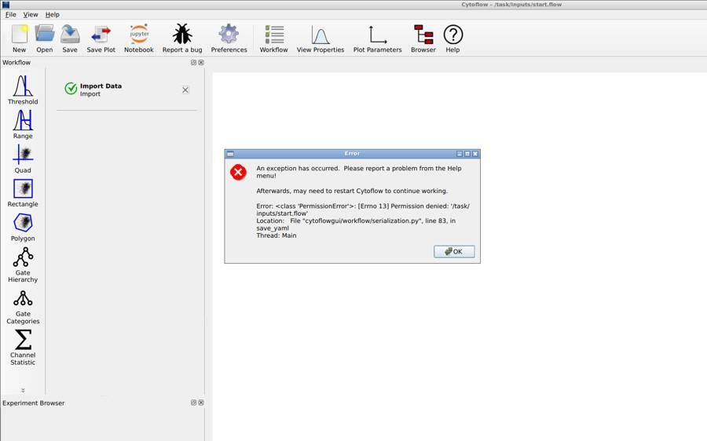
text(await tools.exec_command({cmd:"cu click 927 514\ncu click 22 30\ncu screenshot /tmp/screen.png","max_output_tokens":1000}));
image((await tools.view_image({path:"/tmp/screen.png"})).image_url);
Script completed Wall time 0.3 seconds Output:
{"chunk_id":"e9fbda","wall_time_seconds":0.111148407,"exit_code":0,"original_token_count":4,"output":"/tmp/screen.png\n"}
text(await tools.exec_command({cmd:"cu click 63 103\ncu screenshot /tmp/screen.png","max_output_tokens":1000}));
image((await tools.view_image({path:"/tmp/screen.png"})).image_url);
Script completed Wall time 0.2 seconds Output:
{"chunk_id":"15ade6","wall_time_seconds":0.014249175,"exit_code":0,"original_token_count":4,"output":"/tmp/screen.png\n"}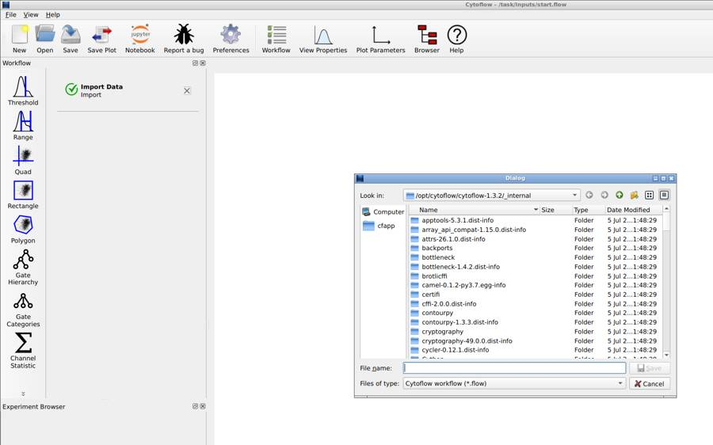
text(await tools.exec_command({cmd:"cu click 1001 745\ncu paste /task/outputs/workflow.flow\ncu click 1312 744\nsleep 1\ncu click 1312 744\ncu click 229 180\ncu screenshot /tmp/screen.png","max_output_tokens":1000}));
image((await tools.view_image({path:"/tmp/screen.png"})).image_url);
Script completed Wall time 2.8 seconds Output:
{"chunk_id":"941527","wall_time_seconds":2.65670771,"exit_code":0,"original_token_count":4,"output":"/tmp/screen.png\n"}
text(await tools.exec_command({cmd:"cu click 45 456\ncu screenshot /tmp/screen.png","max_output_tokens":1000}));
image((await tools.view_image({path:"/tmp/screen.png"})).image_url);
Script completed Wall time 0.2 seconds Output:
{"chunk_id":"4b16cb","wall_time_seconds":0.007287122,"exit_code":0,"original_token_count":4,"output":"/tmp/screen.png\n"}
text(await tools.exec_command({cmd:"sleep 1\ncu screenshot /tmp/screen.png","max_output_tokens":1000}));
image((await tools.view_image({path:"/tmp/screen.png"})).image_url);
Script completed Wall time 1.1 seconds Output:
{"chunk_id":"78abbd","wall_time_seconds":0.903415648,"exit_code":0,"original_token_count":4,"output":"/tmp/screen.png\n"}
text(await tools.exec_command({cmd:"cu click 283 321\ncu type Cells\ncu click 348 353\ncu screenshot /tmp/screen.png","max_output_tokens":1000}));
image((await tools.view_image({path:"/tmp/screen.png"})).image_url);
Script completed Wall time 0.4 seconds Output:
{"chunk_id":"938a15","wall_time_seconds":0.242539617,"exit_code":0,"original_token_count":4,"output":"/tmp/screen.png\n"}
text(await tools.exec_command({cmd:"cu click 232 379\ncu click 352 384\ncu screenshot /tmp/screen.png","max_output_tokens":1000}));
image((await tools.view_image({path:"/tmp/screen.png"})).image_url);
Script completed Wall time 0.3 seconds Output:
{"chunk_id":"deebe0","wall_time_seconds":0.11902884,"exit_code":0,"original_token_count":4,"output":"/tmp/screen.png\n"}
text(await tools.exec_command({cmd:"cu click 225 504\ncu click 650 71\nsleep 2\ncu screenshot /tmp/screen.png","max_output_tokens":1000}));
image((await tools.view_image({path:"/tmp/screen.png"})).image_url);
Script completed Wall time 2.4 seconds Output:
{"chunk_id":"25cc8a","wall_time_seconds":2.182859796,"exit_code":0,"original_token_count":4,"output":"/tmp/screen.png\n"}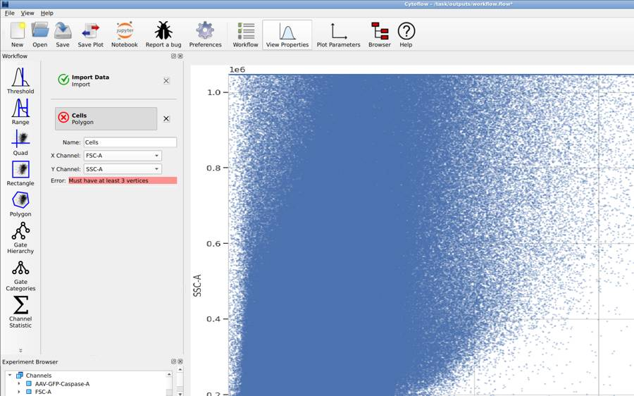
text(await tools.exec_command({cmd:"sleep 2\ncu screenshot /tmp/screen.png","max_output_tokens":1000}));
image((await tools.view_image({path:"/tmp/screen.png"})).image_url);
Script completed Wall time 2.1 seconds Output:
{"chunk_id":"e49377","wall_time_seconds":1.959544843,"exit_code":0,"original_token_count":4,"output":"/tmp/screen.png\n"}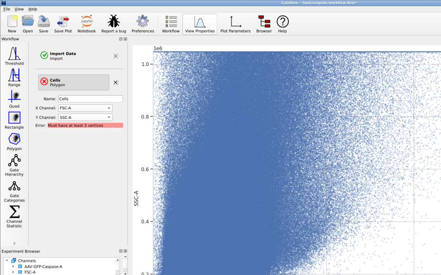
text(await tools.exec_command({cmd:"cu click 610 9 double\nsleep 1\ncu screenshot /tmp/screen.png","max_output_tokens":1000}));
image((await tools.view_image({path:"/tmp/screen.png"})).image_url);
Script completed Wall time 1.3 seconds Output:
{"chunk_id":"2bce4d","wall_time_seconds":1.1398439,"exit_code":0,"original_token_count":4,"output":"/tmp/screen.png\n"}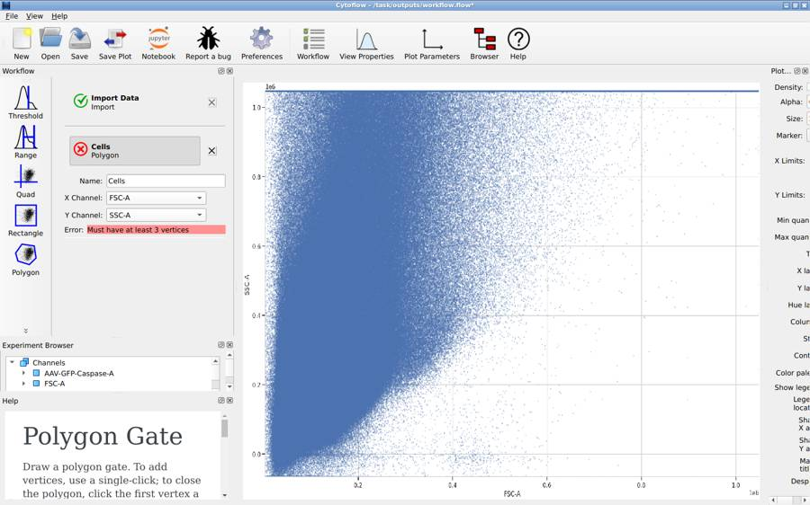
text(await tools.exec_command({cmd:"cu click 610 9 double\ncu click 772 70\ncu click 922 70\nsleep 1\ncu screenshot /tmp/screen.png","max_output_tokens":1000}));
image((await tools.view_image({path:"/tmp/screen.png"})).image_url);
Script completed Wall time 1.5 seconds Output:
{"chunk_id":"97cf92","wall_time_seconds":1.362208646,"exit_code":0,"original_token_count":4,"output":"/tmp/screen.png\n"}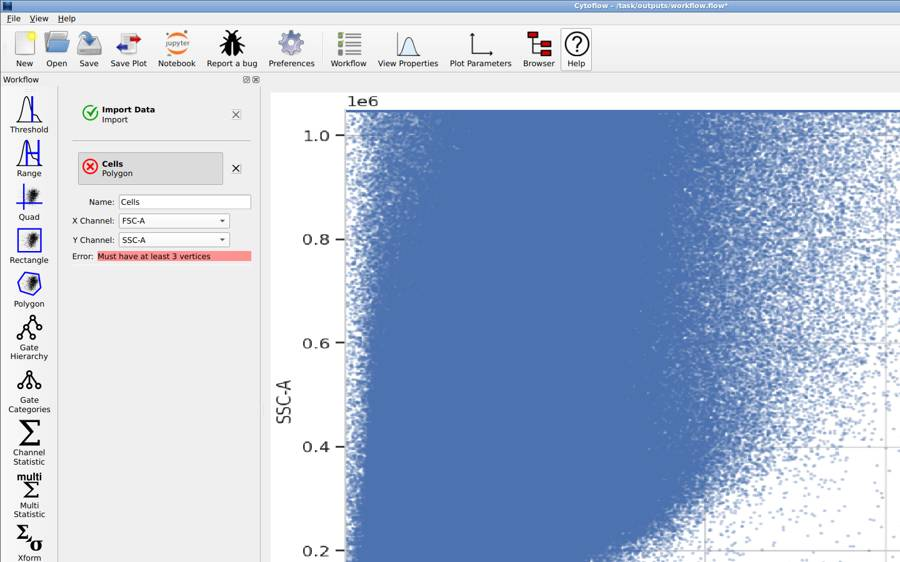
text(await tools.exec_command({cmd:"xrandr --current\nxdotool getactivewindow getwindowgeometry","max_output_tokens":2000}));
Script completed
Wall time 0.0 seconds
Output:
{"chunk_id":"bc82ba","wall_time_seconds":0.000003846,"exit_code":0,"original_token_count":49,"output":"Screen 0: minimum 1 x 1, current 1440 x 900, maximum 1440 x 900\nscreen connected 1440x900+0+0 0mm x 0mm\n 1440x900 0.00* \nWindow 14680070\n Position: 2,40 (screen: 0)\n Geometry: 2082x1171\n"}text(await tools.exec_command({cmd:"cu click 610 9 double\nxdotool getactivewindow windowsize 1440 860\ncu click 650 71\nsleep 1\ncu screenshot /tmp/screen.png","max_output_tokens":1000}));
image((await tools.view_image({path:"/tmp/screen.png"})).image_url);
Script completed Wall time 1.4 seconds Output:
{"chunk_id":"b2ee3b","wall_time_seconds":1.2442058280000001,"exit_code":0,"original_token_count":4,"output":"/tmp/screen.png\n"}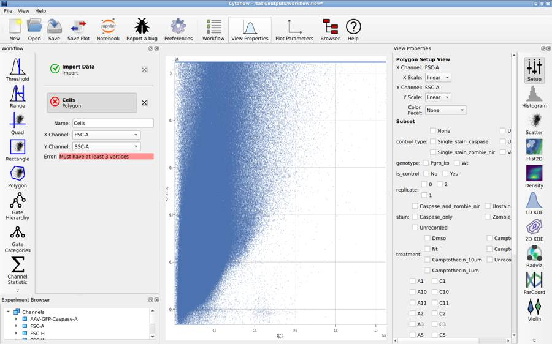
text(await tools.exec_command({cmd:"cu click 1167 202\ncu screenshot /tmp/screen.png","max_output_tokens":1000}));
image((await tools.view_image({path:"/tmp/screen.png"})).image_url);
Script completed Wall time 0.2 seconds Output:
{"chunk_id":"60a8aa","wall_time_seconds":0.027061541,"exit_code":0,"original_token_count":4,"output":"/tmp/screen.png\n"}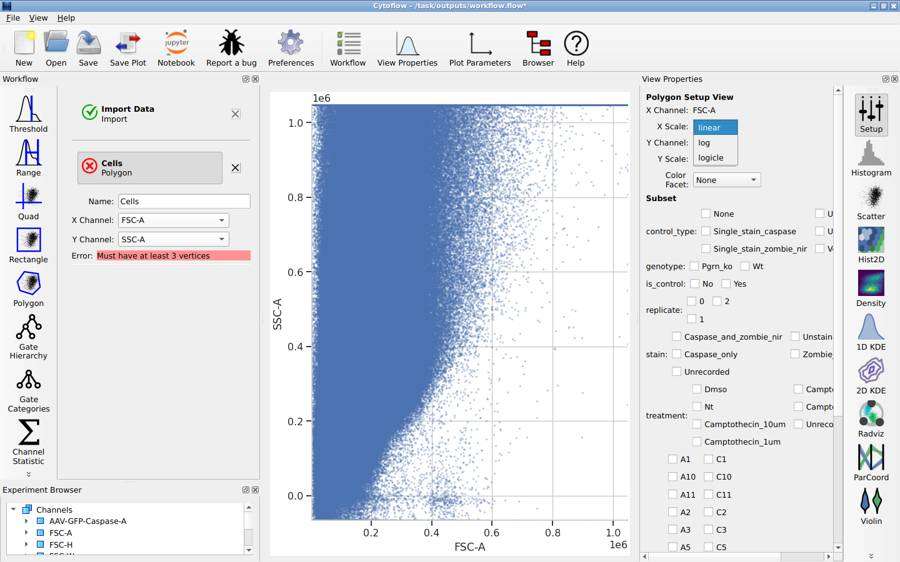
text(await tools.exec_command({cmd:"cu click 1137 253\ncu click 1164 255\ncu key l\ncu key l\ncu key Return\ncu click 1076 735\ncu click 770 72\nsleep 2\ncu screenshot /tmp/screen.png","max_output_tokens":1000}));
image((await tools.view_image({path:"/tmp/screen.png"})).image_url);
Script completed Wall time 2.6 seconds Output:
{"chunk_id":"7cdb9c","wall_time_seconds":2.392066076,"exit_code":0,"original_token_count":4,"output":"/tmp/screen.png\n"}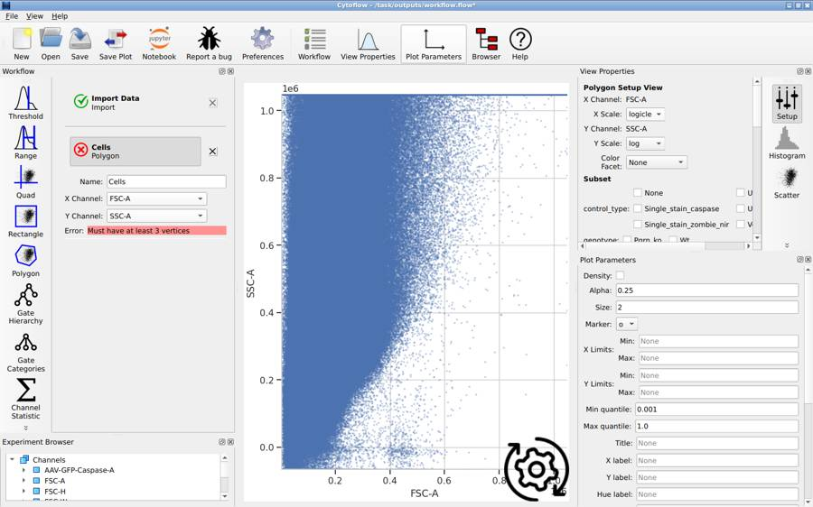
text(await tools.exec_command({cmd:"cu click 1099 488\nsleep 3\ncu screenshot /tmp/screen.png","max_output_tokens":1000}));
image((await tools.view_image({path:"/tmp/screen.png"})).image_url);
Script completed Wall time 3.2 seconds Output:
{"chunk_id":"0c16dd","wall_time_seconds":3.03129905,"exit_code":0,"original_token_count":4,"output":"/tmp/screen.png\n"}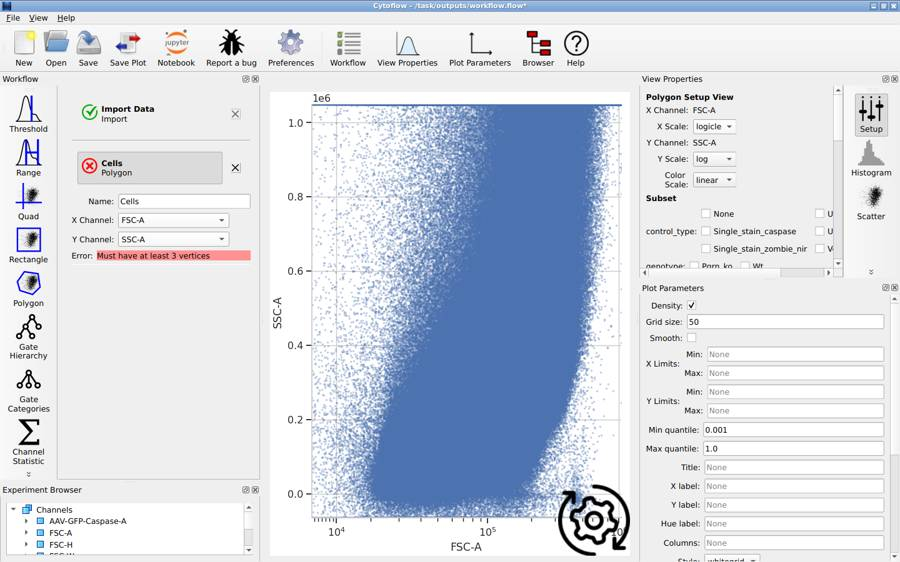
text(await tools.exec_command({cmd:"cu click 769 70\nsleep 2\ncu screenshot /tmp/screen.png","max_output_tokens":1000}));
image((await tools.view_image({path:"/tmp/screen.png"})).image_url);
Script completed Wall time 2.2 seconds Output:
{"chunk_id":"2db436","wall_time_seconds":2.019193159,"exit_code":0,"original_token_count":4,"output":"/tmp/screen.png\n"}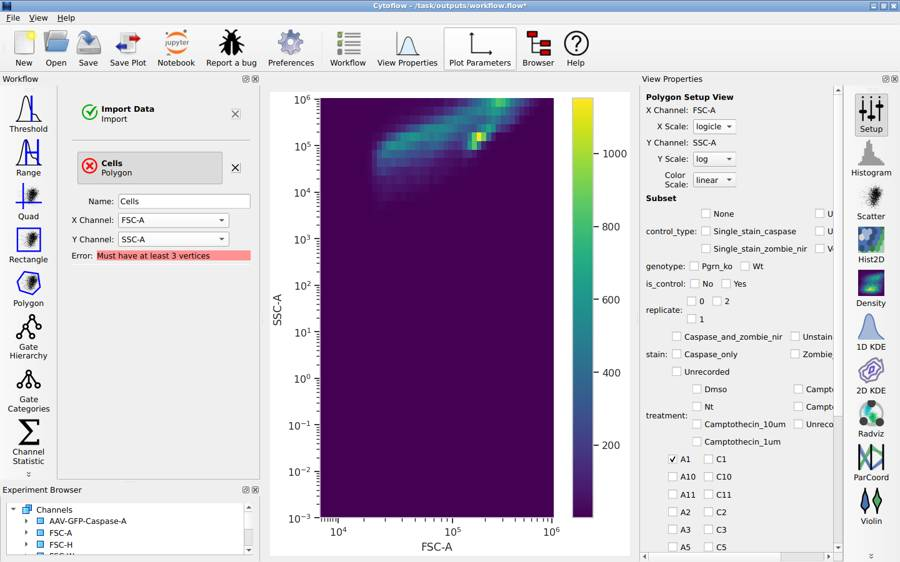
text(await tools.exec_command({cmd:"cu click 1167 255\ncu key End\ncu key Return\ncu click 769 70\nsleep 3\ncu screenshot /tmp/screen.png","max_output_tokens":1000}));
image((await tools.view_image({path:"/tmp/screen.png"})).image_url);
Script completed Wall time 3.3 seconds Output:
{"chunk_id":"2fd39f","wall_time_seconds":3.153773739,"exit_code":0,"original_token_count":4,"output":"/tmp/screen.png\n"}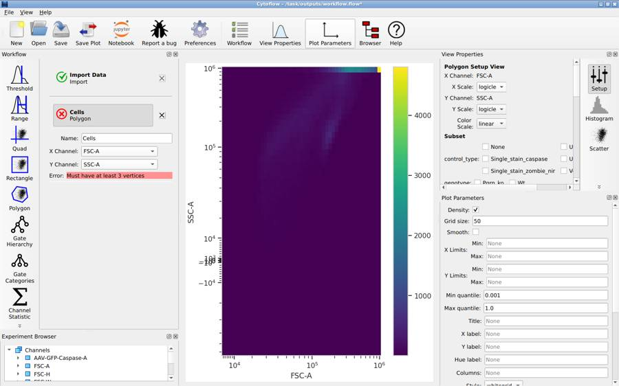
text(await tools.exec_command({cmd:"cu click 1164 202\ncu key Home\ncu key Return\ncu click 1164 255\ncu key Home\ncu key Return\ncu click 1165 288\ncu key Home\ncu key Down\ncu key Return\ncu click 768 70\nsleep 3\ncu screenshot /tmp/screen.png","max_output_tokens":1000}));
image((await tools.view_image({path:"/tmp/screen.png"})).image_url);
Script completed Wall time 3.6 seconds Output:
{"chunk_id":"8500ef","wall_time_seconds":3.442308082,"exit_code":0,"original_token_count":4,"output":"/tmp/screen.png\n"}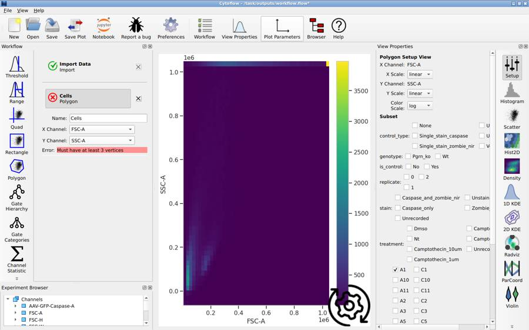
text(await tools.exec_command({cmd:"cu click 1076 736\ncu click 1134 736\nsleep 3\ncu screenshot /tmp/screen.png","max_output_tokens":1000}));
image((await tools.view_image({path:"/tmp/screen.png"})).image_url);
Script completed Wall time 3.3 seconds Output:
{"chunk_id":"1123b0","wall_time_seconds":3.125207887,"exit_code":0,"original_token_count":4,"output":"/tmp/screen.png\n"}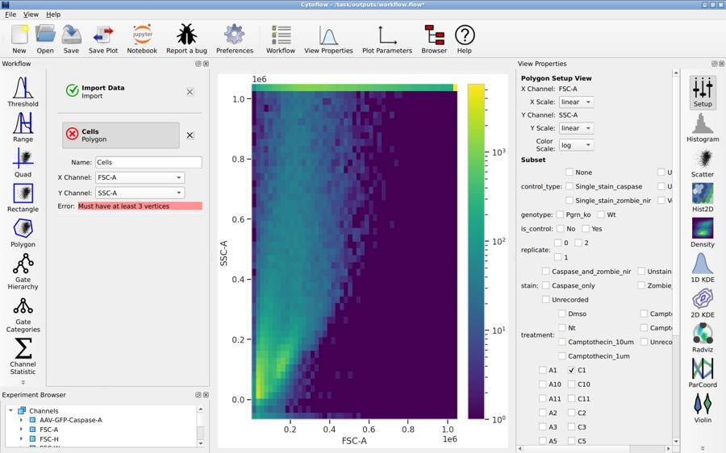
text(await tools.exec_command({cmd:"sleep 4\ncu screenshot /tmp/screen.png","max_output_tokens":1000}));
image((await tools.view_image({path:"/tmp/screen.png"})).image_url);
Script completed Wall time 4.1 seconds Output:
{"chunk_id":"291624","wall_time_seconds":3.9143419489999998,"exit_code":0,"original_token_count":4,"output":"/tmp/screen.png\n"}text(await tools.exec_command({cmd:"cu click 1134 736\ncu click 1076 875\nsleep 2\ncu screenshot /tmp/screen.png","max_output_tokens":1000}));
image((await tools.view_image({path:"/tmp/screen.png"})).image_url);
Script completed Wall time 2.3 seconds Output:
{"chunk_id":"1b03dc","wall_time_seconds":2.125870195,"exit_code":0,"original_token_count":4,"output":"/tmp/screen.png\n"}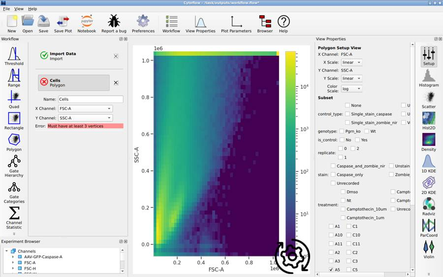
text(await tools.exec_command({cmd:"sleep 4\ncu screenshot /tmp/screen.png","max_output_tokens":1000}));
image((await tools.view_image({path:"/tmp/screen.png"})).image_url);
Script completed Wall time 4.1 seconds Output:
{"chunk_id":"acee8c","wall_time_seconds":3.912107982,"exit_code":0,"original_token_count":4,"output":"/tmp/screen.png\n"}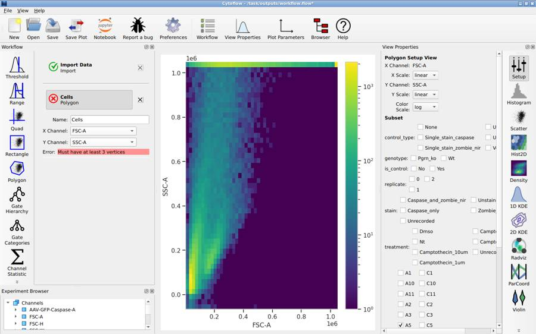
text(await tools.exec_command({cmd:"cu click 534 776\ncu click 522 710\ncu click 526 555\ncu click 558 316\ncu click 600 208\ncu click 671 208\ncu click 733 316\ncu click 702 543\ncu click 616 728\ncu click 561 782\ncu click 534 776\nsleep 4\ncu key ctrl+s\ncu screenshot /tmp/screen.png","max_output_tokens":1000}));
image((await tools.view_image({path:"/tmp/screen.png"})).image_url);
Script completed Wall time 5.3 seconds Output:
{"chunk_id":"c0dc5f","wall_time_seconds":5.101353799,"exit_code":0,"original_token_count":4,"output":"/tmp/screen.png\n"}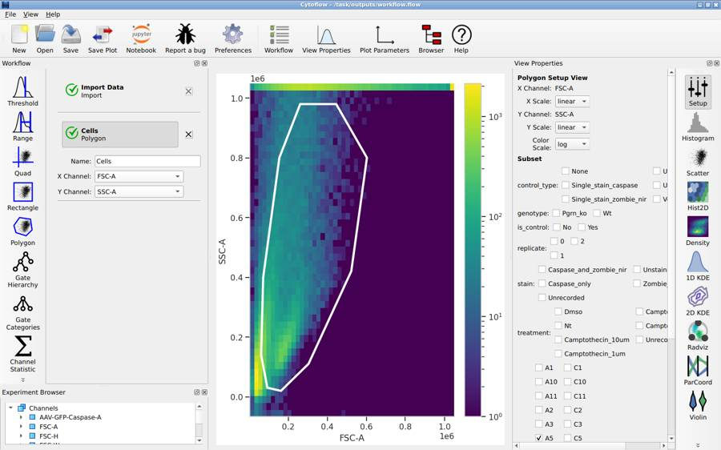
text(await tools.exec_command({cmd:"cu click 43 454\nsleep 1\ncu screenshot /tmp/screen.png","max_output_tokens":1000}));
image((await tools.view_image({path:"/tmp/screen.png"})).image_url);
Script completed Wall time 1.2 seconds Output:
{"chunk_id":"c78cb1","wall_time_seconds":1.015537889,"exit_code":0,"original_token_count":4,"output":"/tmp/screen.png\n"}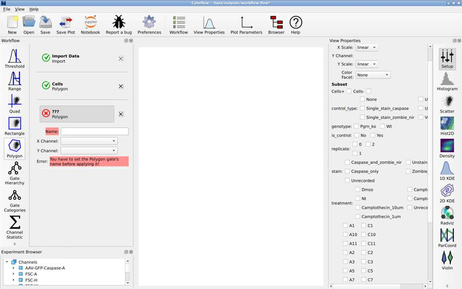
text(await tools.exec_command({cmd:"cu click 270 408\ncu type Single_Cells\ncu click 353 438\ncu key Home\ncu key Down\ncu key Down\ncu key Down\ncu key Down\ncu key Down\ncu key Down\ncu key Return\ncu click 353 469\ncu key Home\ncu key Down\ncu key Down\ncu key Down\ncu key Down\ncu key Down\ncu key Return\ncu click 1087 284\nsleep 5\ncu screenshot /tmp/screen.png","max_output_tokens":1000}));
image((await tools.view_image({path:"/tmp/screen.png"})).image_url);
Script completed Wall time 6.0 seconds Output:
{"chunk_id":"6e43e8","wall_time_seconds":5.873516946,"exit_code":0,"original_token_count":4,"output":"/tmp/screen.png\n"}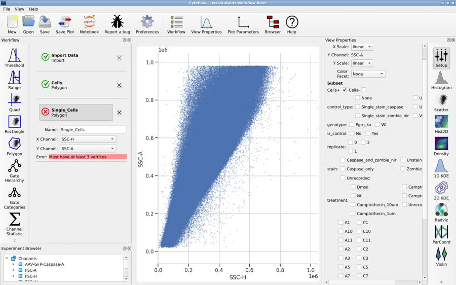
text(await tools.exec_command({cmd:"cu click 769 70\nsleep 1\ncu screenshot /tmp/screen.png","max_output_tokens":1000}));
image((await tools.view_image({path:"/tmp/screen.png"})).image_url);
Script completed Wall time 1.2 seconds Output:
{"chunk_id":"a7f6e1","wall_time_seconds":1.02252541,"exit_code":0,"original_token_count":4,"output":"/tmp/screen.png\n"}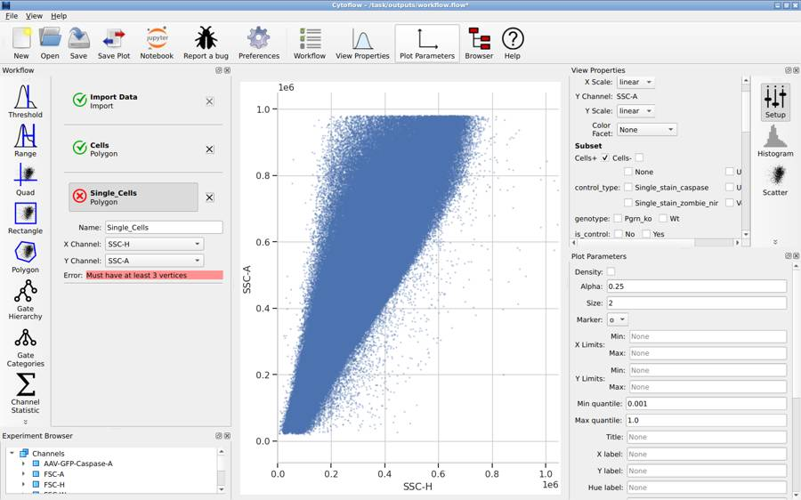
text(await tools.exec_command({cmd:"cu click 1099 489\nsleep 3\ncu screenshot /tmp/screen.png","max_output_tokens":1000}));
image((await tools.view_image({path:"/tmp/screen.png"})).image_url);
Script completed Wall time 3.2 seconds Output:
{"chunk_id":"651cb6","wall_time_seconds":3.017535575,"exit_code":0,"original_token_count":4,"output":"/tmp/screen.png\n"}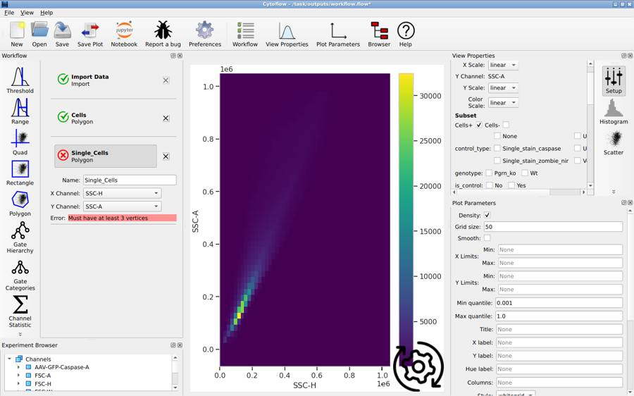
text(await tools.exec_command({cmd:"cu click 1167 231\ncu key Home\ncu key Down\ncu key Return\nsleep 3\ncu screenshot /tmp/screen.png","max_output_tokens":1000}));
image((await tools.view_image({path:"/tmp/screen.png"})).image_url);
Script completed Wall time 3.2 seconds Output:
{"chunk_id":"f30b08","wall_time_seconds":3.066048535,"exit_code":0,"original_token_count":4,"output":"/tmp/screen.png\n"}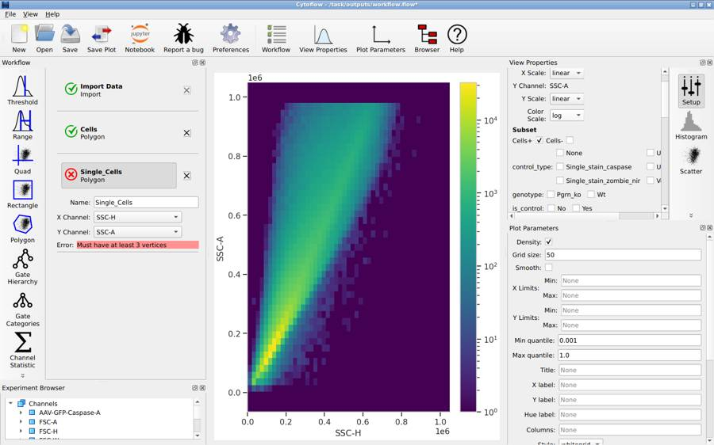
text(await tools.exec_command({cmd:"cu click 511 782\ncu click 642 208\ncu click 791 208\ncu click 546 782\ncu click 511 782\nsleep 3\ncu key ctrl+s\ncu click 769 70\ncu click 45 246\nsleep 1\ncu screenshot /tmp/screen.png","max_output_tokens":1000}));
image((await tools.view_image({path:"/tmp/screen.png"})).image_url);
Script completed Wall time 4.9 seconds Output:
{"chunk_id":"55d8c8","wall_time_seconds":4.677829057,"exit_code":0,"original_token_count":4,"output":"/tmp/screen.png\n"}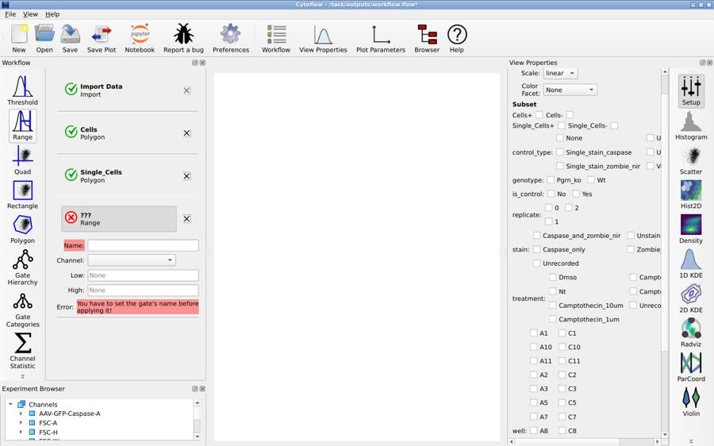
text(await tools.exec_command({cmd:"cu click 285 496\ncu type Live\ncu click 341 525\ncu key Home\ncu key Down\ncu key Down\ncu key Down\ncu key Down\ncu key Return\ncu click 1152 147\ncu key End\ncu key Return\ncu click 1087 230\ncu click 1133 253\ncu click 1076 672\ncu click 1134 672\ncu click 1076 784\ncu click 1134 784\ncu click 1193 180\ncu key End\ncu key Return\nsleep 4\ncu screenshot /tmp/screen.png","max_output_tokens":1000}));
image((await tools.view_image({path:"/tmp/screen.png"})).image_url);
Script completed Wall time 5.4 seconds Output:
{"chunk_id":"ff01ae","wall_time_seconds":5.228523465,"exit_code":0,"original_token_count":4,"output":"/tmp/screen.png\n"}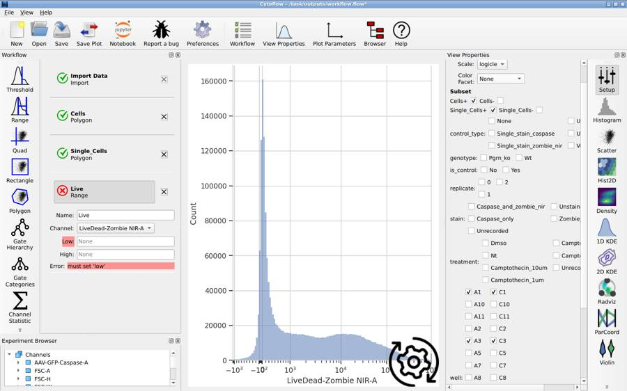
text(await tools.exec_command({cmd:"cu click 1193 181\ncu screenshot /tmp/screen.png","max_output_tokens":1000}));
image((await tools.view_image({path:"/tmp/screen.png"})).image_url);
Script completed Wall time 0.2 seconds Output:
{"chunk_id":"61b9cf","wall_time_seconds":0.020022252,"exit_code":0,"original_token_count":4,"output":"/tmp/screen.png\n"}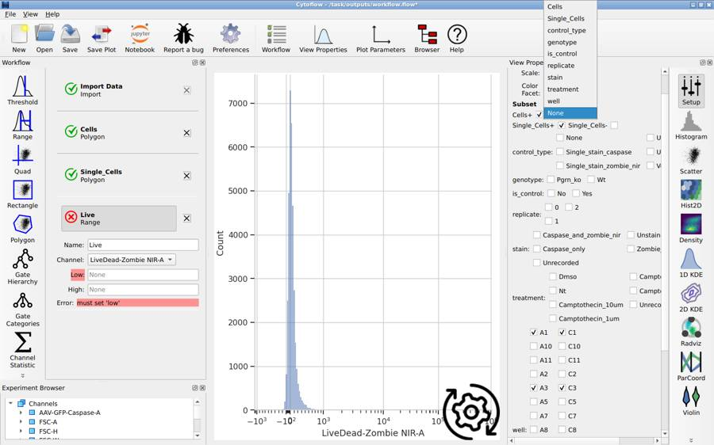
text(await tools.exec_command({cmd:"cu click 1119 203\nsleep 4\ncu screenshot /tmp/screen.png","max_output_tokens":1000}));
image((await tools.view_image({path:"/tmp/screen.png"})).image_url);
Script completed Wall time 4.2 seconds Output:
{"chunk_id":"8609fc","wall_time_seconds":4.018961934,"exit_code":0,"original_token_count":4,"output":"/tmp/screen.png\n"}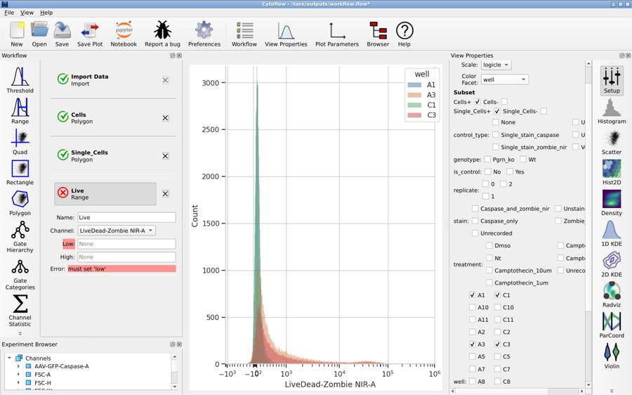
text(await tools.exec_command({cmd:"cu click 272 555\ncu key ctrl+a\ncu type -1000000\ncu click 274 586\ncu key ctrl+a\ncu type 1000\ncu key Tab\ncu click 1076 672\ncu click 1134 672\ncu click 1076 784\ncu click 1134 784\ncu click 1076 700\ncu click 1134 700\nsleep 5\ncu screenshot /tmp/screen.png","max_output_tokens":1000}));
image((await tools.view_image({path:"/tmp/screen.png"})).image_url);
Script completed Wall time 6.3 seconds Output:
{"chunk_id":"67876e","wall_time_seconds":6.143340669,"exit_code":0,"original_token_count":4,"output":"/tmp/screen.png\n"}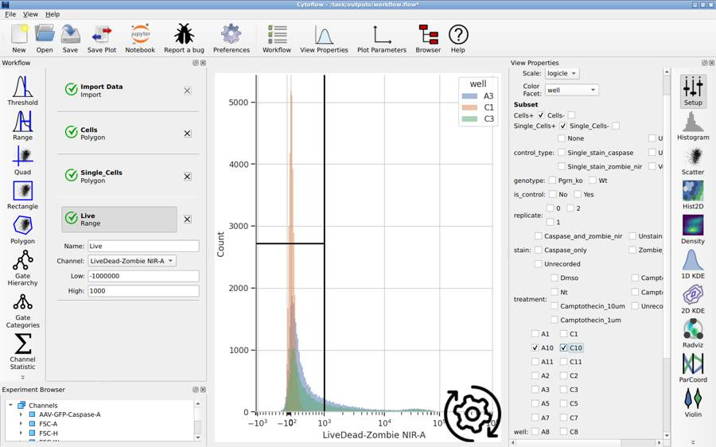
text(await tools.exec_command({cmd:"sleep 5\ncu screenshot /tmp/screen.png","max_output_tokens":1000}));
image((await tools.view_image({path:"/tmp/screen.png"})).image_url);
Script completed Wall time 5.1 seconds Output:
{"chunk_id":"97541c","wall_time_seconds":4.91234123,"exit_code":0,"original_token_count":4,"output":"/tmp/screen.png\n"}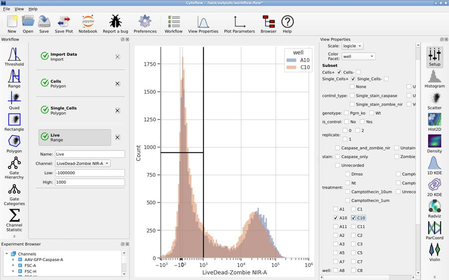
text(await tools.exec_command({cmd:"cu click 276 585\ncu key ctrl+a\ncu type 2000\ncu key Tab\ncu key ctrl+s\ncu click 45 172\nsleep 2\ncu screenshot /tmp/screen.png","max_output_tokens":1000}));
image((await tools.view_image({path:"/tmp/screen.png"})).image_url);
Script completed Wall time 2.5 seconds Output:
{"chunk_id":"e6ef91","wall_time_seconds":2.302806947,"exit_code":0,"original_token_count":4,"output":"/tmp/screen.png\n"}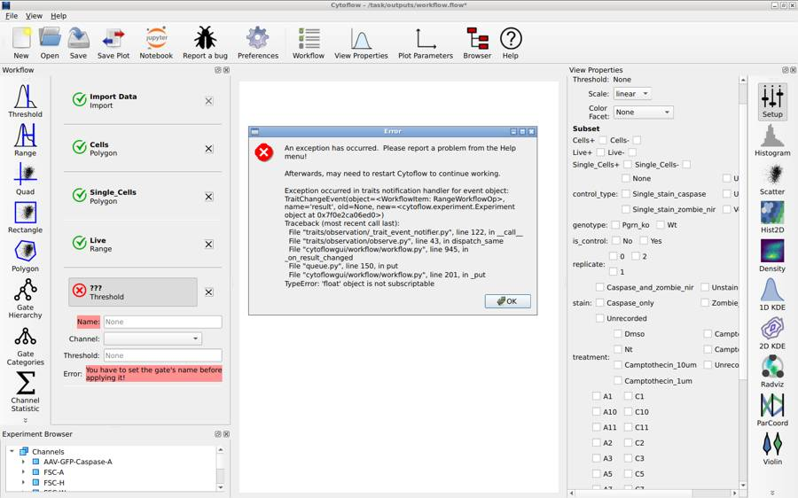
text(await tools.exec_command({cmd:"cu click 911 546\ncu click 287 581\ncu key ctrl+a\ncu type Caspase_pos\ncu click 352 612\ncu key Home\ncu key Return\ncu click 1162 168\ncu key End\ncu key Return\ncu click 1087 253\ncu click 1085 276\ncu click 1133 296\ncu click 1076 715\ncu click 1134 715\ncu click 1076 800\ncu click 1134 800\ncu click 1202 202\ncu key End\ncu key Up\ncu key Return\nsleep 7\ncu screenshot /tmp/screen.png","max_output_tokens":1000}));
image((await tools.view_image({path:"/tmp/screen.png"})).image_url);
Script completed Wall time 8.8 seconds Output:
{"chunk_id":"0d410c","wall_time_seconds":8.604195599,"exit_code":0,"original_token_count":4,"output":"/tmp/screen.png\n"}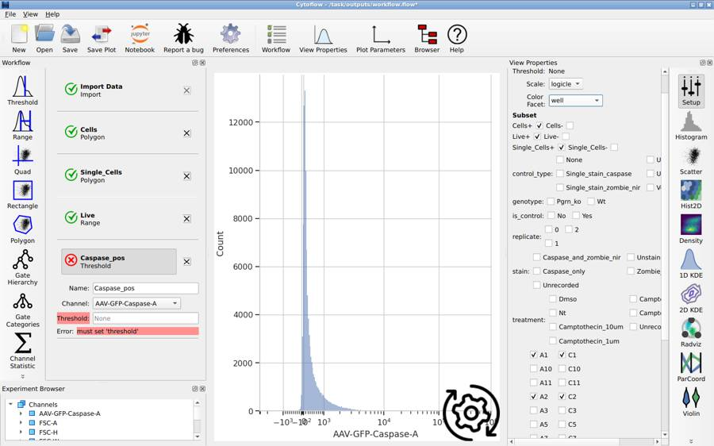
text(await tools.exec_command({cmd:"sleep 5\ncu screenshot /tmp/screen.png","max_output_tokens":1000}));
image((await tools.view_image({path:"/tmp/screen.png"})).image_url);
Script completed Wall time 5.1 seconds Output:
{"chunk_id":"04c5ae","wall_time_seconds":4.912824796,"exit_code":0,"original_token_count":4,"output":"/tmp/screen.png\n"}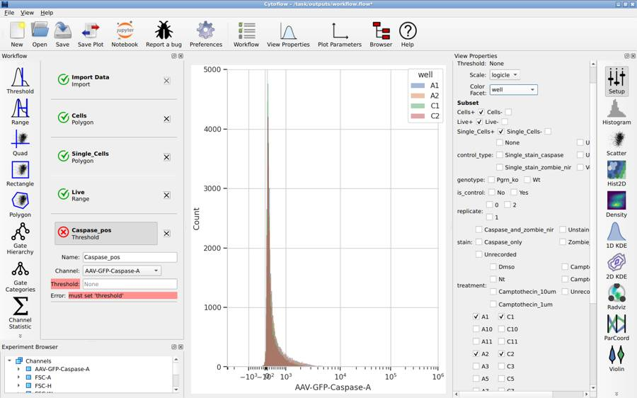
text(await tools.exec_command({cmd:"cu click 280 643\ncu key ctrl+a\ncu type 5000\ncu key Tab\nsleep 3\ncu key ctrl+s\ncu click 1076 715\ncu click 1134 715\ncu click 1076 800\ncu click 1134 800\ncu click 1076 743\ncu click 1134 743\nsleep 7\ncu screenshot /tmp/screen.png","max_output_tokens":1000}));
image((await tools.view_image({path:"/tmp/screen.png"})).image_url);
Script completed Wall time 10.2 seconds Output:
{"chunk_id":"db0f02","wall_time_seconds":10.001672149,"session_id":90866,"original_token_count":0,"output":""}text(await tools.write_stdin({session_id:90866,chars:"","yield_time_ms":1000,"max_output_tokens":1000}));
image((await tools.view_image({path:"/tmp/screen.png"})).image_url);
text(await tools.clock__curr_time({}));
Script completed Wall time 0.0 seconds Output:
{"chunk_id":"074861","wall_time_seconds":0.000002864,"exit_code":0,"original_token_count":4,"output":"/tmp/screen.png\n"}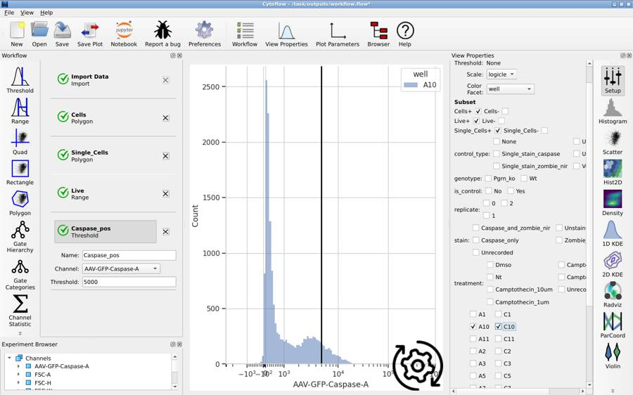
{"current_time":"2026-11-05 08:22:04 UTC"}text(await tools.exec_command({cmd:"cu key ctrl+s\ncu click 46 696\nsleep 2\ncu screenshot /tmp/screen.png","max_output_tokens":1000}));
image((await tools.view_image({path:"/tmp/screen.png"})).image_url);
Script completed Wall time 2.2 seconds Output:
{"chunk_id":"bf17ee","wall_time_seconds":2.043347581,"exit_code":0,"original_token_count":4,"output":"/tmp/screen.png\n"}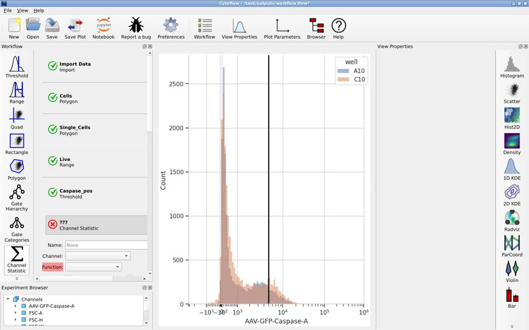
text(await tools.exec_command({cmd:"cu scroll 318 665 down 5\ncu screenshot /tmp/screen.png","max_output_tokens":1000}));
image((await tools.view_image({path:"/tmp/screen.png"})).image_url);
Script completed Wall time 0.6 seconds Output:
{"chunk_id":"d4f87c","wall_time_seconds":0.415880854,"exit_code":0,"original_token_count":4,"output":"/tmp/screen.png\n"}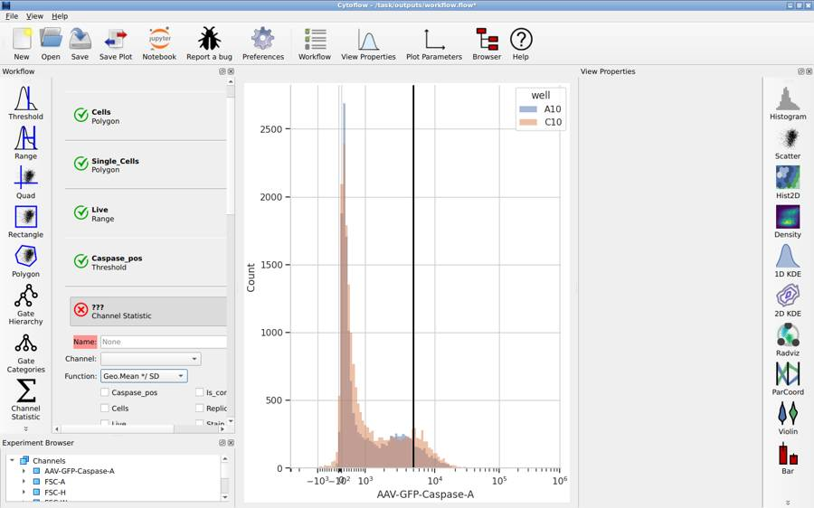
text(await tools.exec_command({cmd:"cu click 267 605\ncu key ctrl+a\ncu type Population_counts\ncu click 343 636\ncu key End\ncu key Return\ncu click 320 666\ncu screenshot /tmp/screen.png","max_output_tokens":1000}));
image((await tools.view_image({path:"/tmp/screen.png"})).image_url);
Script completed Wall time 0.9 seconds Output:
{"chunk_id":"9f0089","wall_time_seconds":0.718493115,"exit_code":0,"original_token_count":4,"output":"/tmp/screen.png\n"}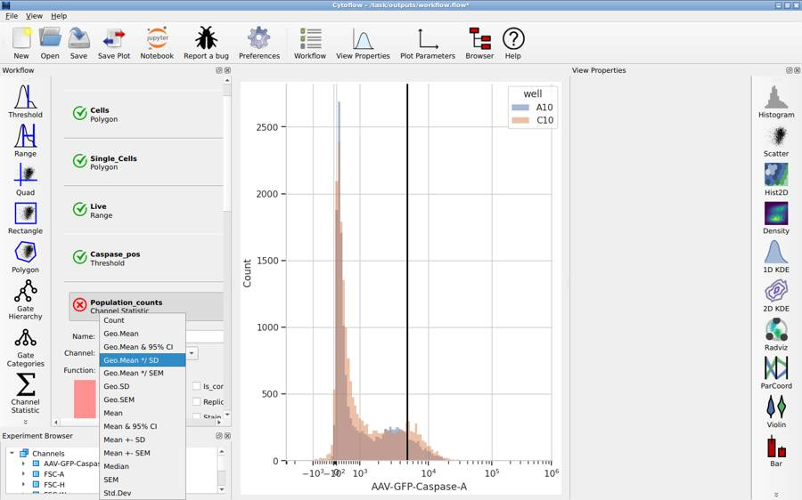
text(await tools.exec_command({cmd:"cu click 214 577\ncu drag 407 271 407 597\ncu screenshot /tmp/screen.png","max_output_tokens":1000}));
image((await tools.view_image({path:"/tmp/screen.png"})).image_url);
Script completed Wall time 0.2 seconds Output:
{"chunk_id":"7389ce","wall_time_seconds":0.047840831,"exit_code":0,"original_token_count":4,"output":"/tmp/screen.png\n"}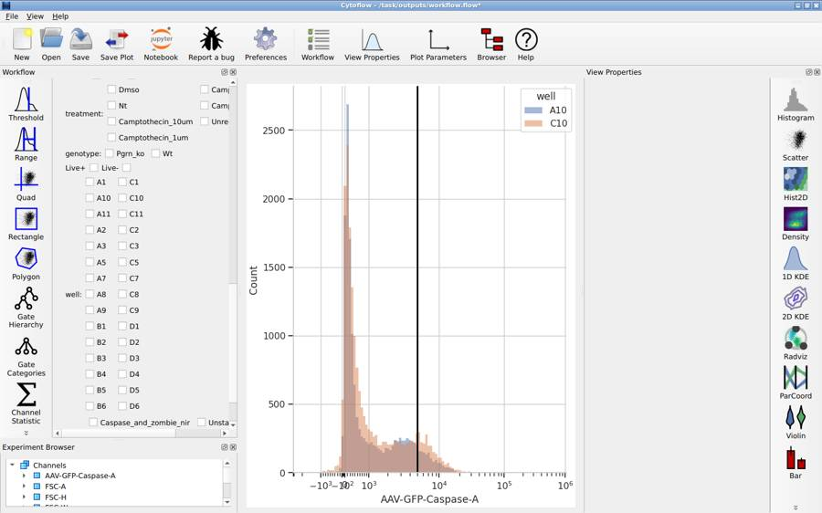
text(await tools.exec_command({cmd:"cu scroll 126 300 up 14\ncu screenshot /tmp/screen.png","max_output_tokens":1000}));
image((await tools.view_image({path:"/tmp/screen.png"})).image_url);
Script completed Wall time 1.5 seconds Output:
{"chunk_id":"f79a5f","wall_time_seconds":1.315017662,"exit_code":0,"original_token_count":4,"output":"/tmp/screen.png\n"}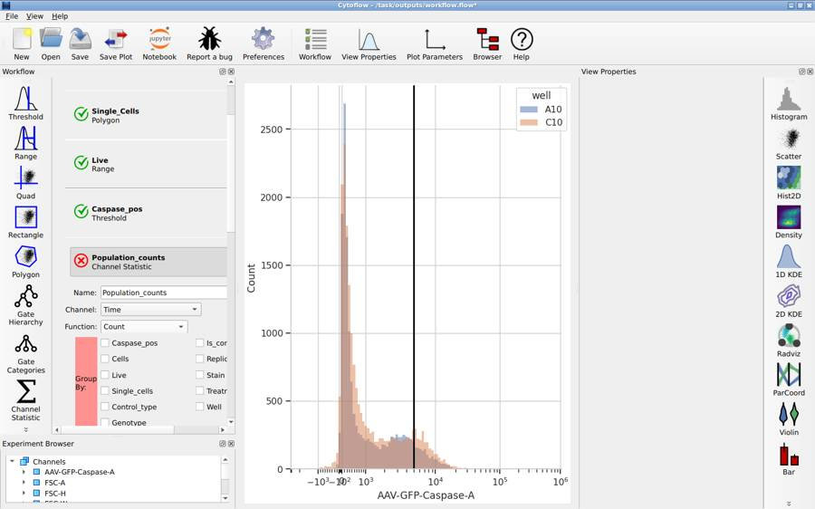
text(await tools.exec_command({cmd:"cu click 185 606\ncu click 185 635\ncu click 185 663\ncu click 185 690\ncu click 352 718\nsleep 4\ncu scroll 1395 709 down 8\ncu screenshot /tmp/screen.png","max_output_tokens":1000}));
image((await tools.view_image({path:"/tmp/screen.png"})).image_url);
Script completed Wall time 5.4 seconds Output:
{"chunk_id":"76b355","wall_time_seconds":5.242671799,"exit_code":0,"original_token_count":4,"output":"/tmp/screen.png\n"}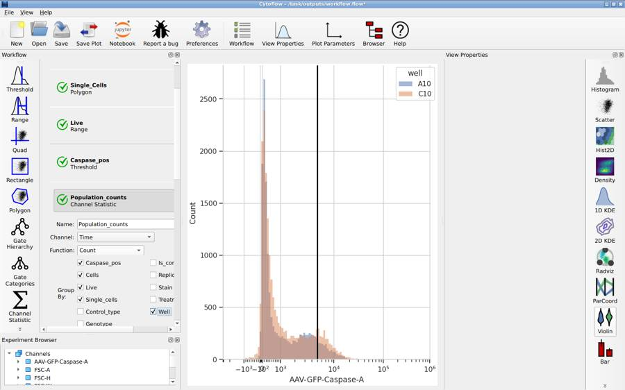
text(await tools.exec_command({cmd:"cu click 1393 890\ncu click 1393 890\ncu click 1393 890\ncu click 1393 890\ncu screenshot /tmp/screen.png","max_output_tokens":1000}));
image((await tools.view_image({path:"/tmp/screen.png"})).image_url);
Script completed Wall time 0.5 seconds Output:
{"chunk_id":"13f6e6","wall_time_seconds":0.331913488,"exit_code":0,"original_token_count":4,"output":"/tmp/screen.png\n"}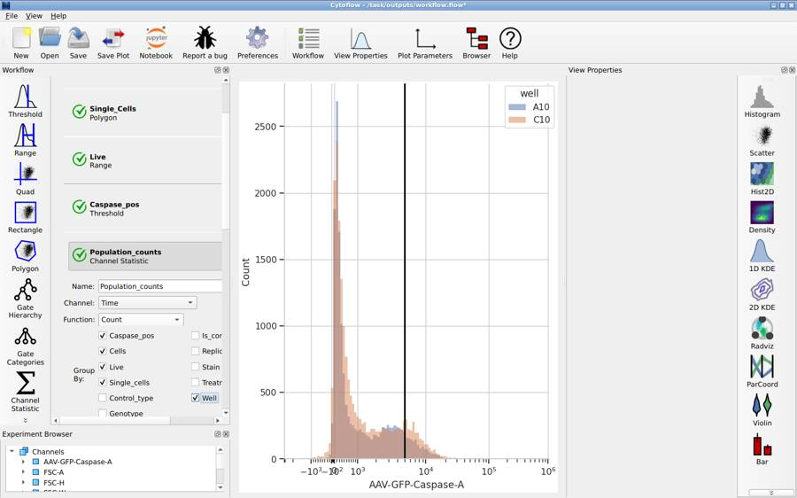
text(await tools.exec_command({cmd:"cu move 1378 890\ncu click 1378 890\nsleep 1\ncu screenshot /tmp/screen.png","max_output_tokens":1000}));
image((await tools.view_image({path:"/tmp/screen.png"})).image_url);
Script completed Wall time 1.2 seconds Output:
{"chunk_id":"3ea1d1","wall_time_seconds":1.020863623,"exit_code":0,"original_token_count":4,"output":"/tmp/screen.png\n"}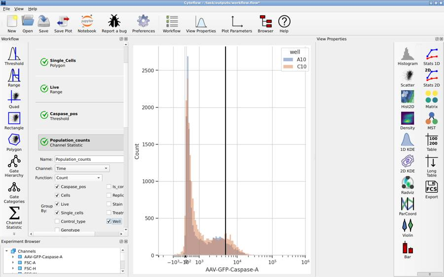
text(await tools.exec_command({cmd:"cu click 1399 531\nsleep 1\ncu screenshot /tmp/screen.png","max_output_tokens":1000}));
image((await tools.view_image({path:"/tmp/screen.png"})).image_url);
Script completed Wall time 1.2 seconds Output:
{"chunk_id":"798532","wall_time_seconds":1.016508117,"exit_code":0,"original_token_count":4,"output":"/tmp/screen.png\n"}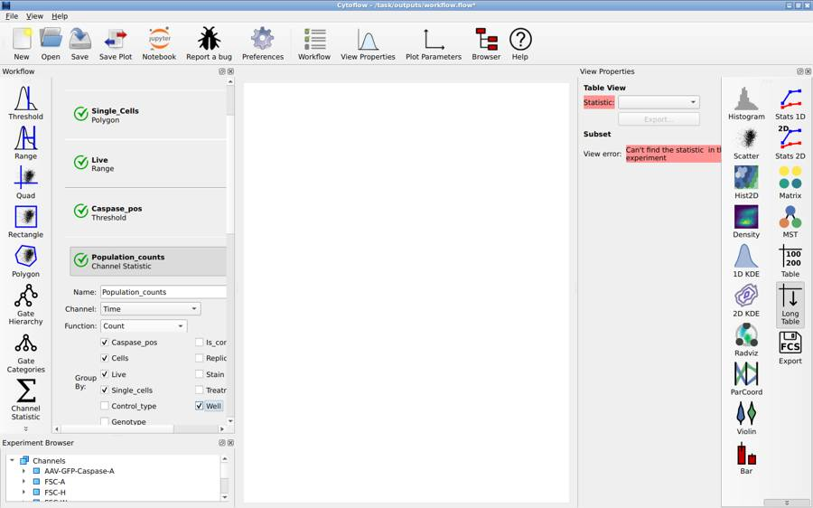
text(await tools.exec_command({cmd:"cu click 1227 180\ncu key Home\ncu key Return\nsleep 2\ncu screenshot /tmp/screen.png","max_output_tokens":1000}));
image((await tools.view_image({path:"/tmp/screen.png"})).image_url);
Script completed Wall time 2.2 seconds Output:
{"chunk_id":"57ee0c","wall_time_seconds":2.050984919,"exit_code":0,"original_token_count":4,"output":"/tmp/screen.png\n"}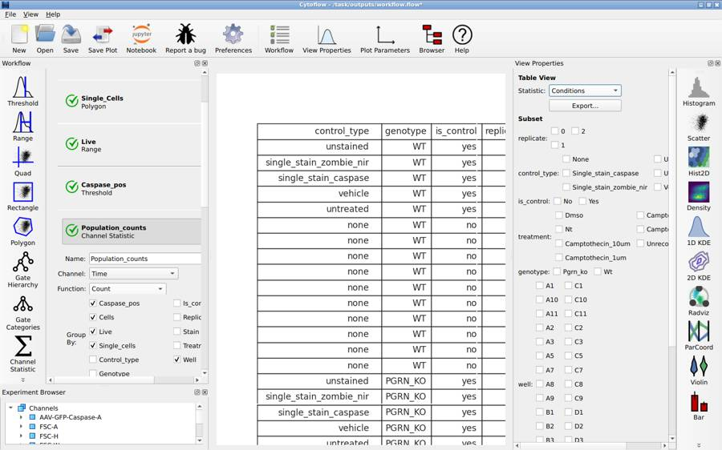
text(await tools.exec_command({cmd:"cu click 1228 181\ncu screenshot /tmp/screen.png","max_output_tokens":1000}));
image((await tools.view_image({path:"/tmp/screen.png"})).image_url);
Script completed Wall time 0.2 seconds Output:
{"chunk_id":"e283e6","wall_time_seconds":0.017352028,"exit_code":0,"original_token_count":4,"output":"/tmp/screen.png\n"}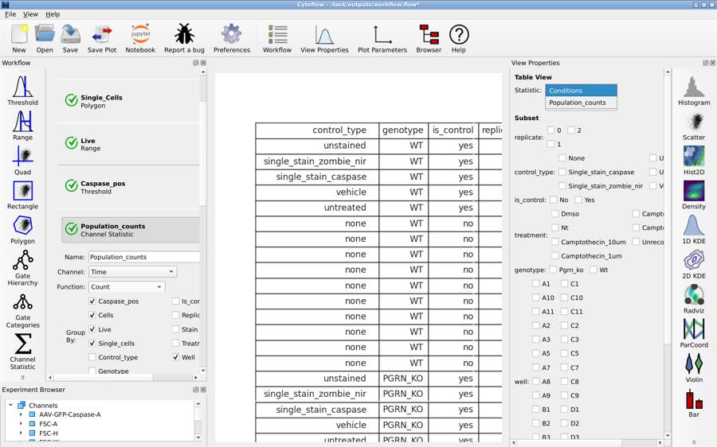
text(await tools.exec_command({cmd:"cu click 1170 205\nsleep 2\ncu click 1171 210\ncu screenshot /tmp/screen.png","max_output_tokens":1000}));
image((await tools.view_image({path:"/tmp/screen.png"})).image_url);
Script completed Wall time 2.3 seconds Output:
{"chunk_id":"972661","wall_time_seconds":2.127106875,"exit_code":0,"original_token_count":4,"output":"/tmp/screen.png\n"}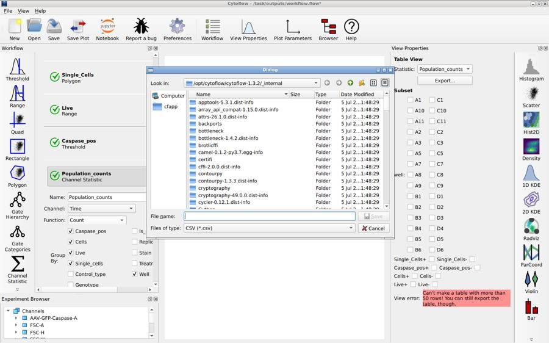
text(await tools.exec_command({cmd:"cu click 652 568\ncu paste /task/outputs/population_counts_export.csv\ncu click 982 567\nsleep 1\ncu click 982 567\ncu key ctrl+s\nsleep 1\ncu screenshot /tmp/screen.png","max_output_tokens":1000}));
image((await tools.view_image({path:"/tmp/screen.png"})).image_url);
text(await tools.exec_command({cmd:"head -8 /task/outputs/population_counts_export.csv\nls -l /task/outputs","max_output_tokens":2000}));
Script completed Wall time 3.8 seconds Output:
{"chunk_id":"cdaed8","wall_time_seconds":3.588617022,"exit_code":0,"original_token_count":4,"output":"/tmp/screen.png\n"}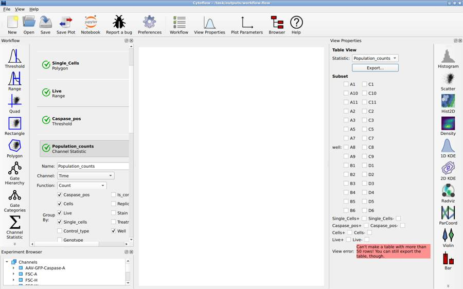
{"chunk_id":"d1ede7","wall_time_seconds":0.000003365,"exit_code":0,"original_token_count":78,"output":"Caspase_pos,Cells,Live,Single_Cells,well,Time\n0,0,0,0,A10,2432.0\n0,0,0,0,A11,2194.0\n0,0,0,0,A2,2.0\n0,0,0,0,A3,2664.0\n0,0,0,0,A5,2409.0\n0,0,0,0,A7,1699.0\n0,0,0,0,A8,1565.0\ntotal 148\n-rw-rw-r-- 1 cfapp task 8117 Nov 5 08:23 population_counts_export.csv\n-rw-rw-r-- 1 cfapp task 140322 Nov 5 08:23 workflow.flow\n"}text(await tools.exec_command({cmd:"python - <<'PY'\nimport pandas as pd\nfrom pathlib import Path\np=Path('/task/outputs')\nd=pd.read_csv(p/'population_counts_export.csv')\nl=pd.read_csv('/task/inputs/plate_layout.csv')\nrows=[]; summary=[]\nfor r in l.itertuples():\n s=d[d.well.eq(r.well)]\n total=int(s.Time.sum()); parent=total; par='all_events'; counts=[]\n for gate in ['Cells','Single_Cells','Live','Caspase_pos']:\n s=s[s[gate].eq(1)]\n n=int(s.Time.sum()); counts.append(n)\n rows.append([r.file,r.well,gate,n,par,n/parent*100 if parent else 0.0])\n par=gate; parent=n\n summary.append([r.well,total,*counts])\npd.DataFrame(rows,columns=['file','well','population','count','parent_population','pct_of_parent']).to_csv(p/'counts.csv',index=False,float_format='%.6f')\ns=pd.DataFrame(summary,columns=['well','all_events','Cells','Single_Cells','Live','Caspase_pos'])\ns.to_csv(p/'well_summary.csv',index=False)\nprint(s.to_string(index=False)); print('Total',s.all_events.sum(),'rows',len(rows))\nPY","max_output_tokens":4000}));
Script completed
Wall time 0.0 seconds
Output:
{"chunk_id":"e6eb4b","wall_time_seconds":0.000003736,"exit_code":127,"original_token_count":12,"output":"/bin/bash: line 1: python: command not found\n"}text(await tools.exec_command({cmd:"python3 - <<'PY'\nimport pandas as pd\nfrom pathlib import Path\np=Path('/task/outputs')\nd=pd.read_csv(p/'population_counts_export.csv')\nl=pd.read_csv('/task/inputs/plate_layout.csv')\nrows=[]; summary=[]\nfor r in l.itertuples():\n s=d[d.well.eq(r.well)]\n total=int(s.Time.sum()); parent=total; par='all_events'; counts=[]\n for gate in ['Cells','Single_Cells','Live','Caspase_pos']:\n s=s[s[gate].eq(1)]\n n=int(s.Time.sum()); counts.append(n)\n rows.append([r.file,r.well,gate,n,par,n/parent*100 if parent else 0.0])\n par=gate; parent=n\n summary.append([r.well,total,*counts])\npd.DataFrame(rows,columns=['file','well','population','count','parent_population','pct_of_parent']).to_csv(p/'counts.csv',index=False,float_format='%.6f')\ns=pd.DataFrame(summary,columns=['well','all_events','Cells','Single_Cells','Live','Caspase_pos'])\ns.to_csv(p/'well_summary.csv',index=False)\nprint(s.to_string(index=False)); print('Total',s.all_events.sum(),'rows',len(rows))\nPY","max_output_tokens":4000}));
Script completed
Wall time 0.4 seconds
Output:
{"chunk_id":"2f579b","wall_time_seconds":0.254678391,"exit_code":0,"original_token_count":448,"output":"well all_events Cells Single_Cells Live Caspase_pos\n A1 90651 35999 34487 34485 98\n A2 81008 31567 29991 29991 70\n A3 95933 37893 36198 31487 2967\n A5 73753 27874 26349 18151 1774\n A7 64975 24483 23287 19595 2702\n A8 60216 22562 21669 17589 2693\n A9 80278 32616 31443 24955 4244\n A10 64936 26419 25163 15529 1471\n A11 68296 26235 25050 17358 2023\n B1 58310 22239 21083 10702 1173\n B2 51930 19487 18556 9229 618\n B3 13995 6126 5825 1092 156\n B4 58782 22849 21693 8302 812\n B5 33754 12854 11885 236 34\n B6 8004 3623 3463 178 22\n C1 95817 34204 32442 32440 8\n C2 80166 29632 28113 28113 8\n C3 68270 23216 22071 18689 1803\n C5 88646 31936 30790 27197 3414\n C7 119052 38312 35818 32221 10998\n C8 52267 16968 15988 13174 1736\n C9 92282 31333 29904 26098 4917\n C10 88797 30976 29463 19408 2407\n C11 63651 22885 21645 11867 1474\n D1 97824 35354 33325 14286 2208\n D2 73937 29021 27641 13393 2262\n D3 77334 28897 26966 10731 1729\n D4 46763 18333 16677 1293 140\n D5 18412 7544 6980 80 5\n D6 46753 16417 15492 429 48\nTotal 2014792 rows 120\n"}text(await tools.exec_command({cmd:"cu click 46 759\ncu screenshot /tmp/screen.png","max_output_tokens":1000}));
image((await tools.view_image({path:"/tmp/screen.png"})).image_url);
Script completed Wall time 0.2 seconds Output:
{"chunk_id":"1018e5","wall_time_seconds":0.014527353,"exit_code":0,"original_token_count":4,"output":"/tmp/screen.png\n"}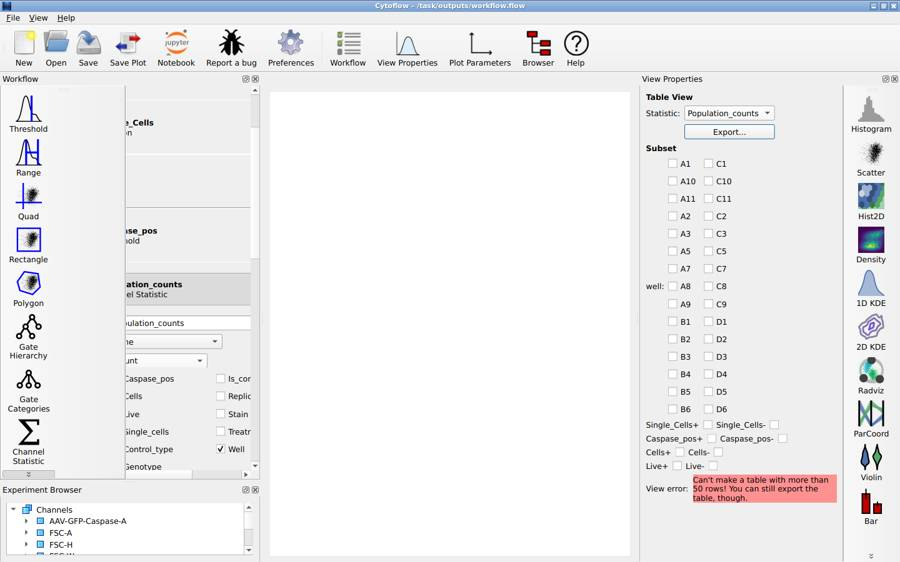
text(await tools.exec_command({cmd:"cu click 46 759\nsleep 1\ncu screenshot /tmp/screen.png","max_output_tokens":1000}));
image((await tools.view_image({path:"/tmp/screen.png"})).image_url);
Script completed Wall time 1.2 seconds Output:
{"chunk_id":"3dc577","wall_time_seconds":1.016349719,"exit_code":0,"original_token_count":4,"output":"/tmp/screen.png\n"}text(await tools.exec_command({cmd:"cu click 46 759\nsleep 2\ncu screenshot /tmp/screen.png","max_output_tokens":1000}));
image((await tools.view_image({path:"/tmp/screen.png"})).image_url);
Script completed Wall time 2.2 seconds Output:
{"chunk_id":"410495","wall_time_seconds":2.019376334,"exit_code":0,"original_token_count":4,"output":"/tmp/screen.png\n"}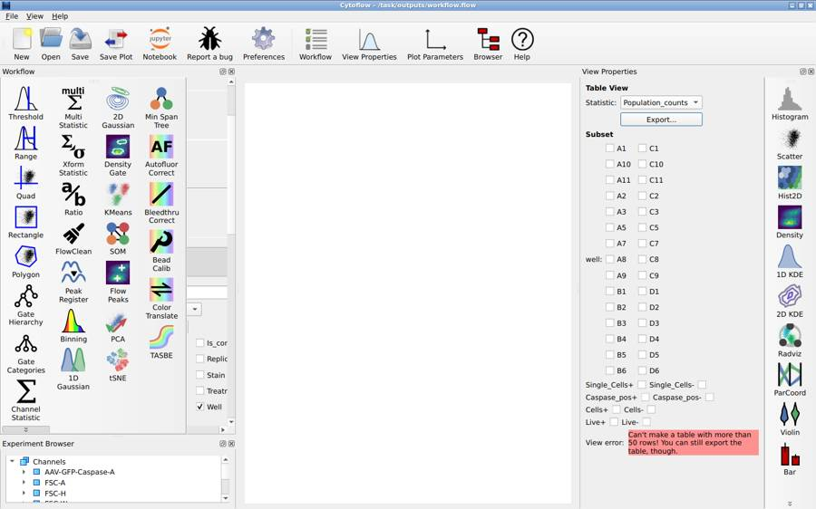
text(await tools.exec_command({cmd:"cu click 130 570\nsleep 2\ncu scroll 123 650 down 15\ncu screenshot /tmp/screen.png","max_output_tokens":1000}));
image((await tools.view_image({path:"/tmp/screen.png"})).image_url);
Script completed Wall time 3.7 seconds Output:
{"chunk_id":"9b9464","wall_time_seconds":3.530223512,"exit_code":0,"original_token_count":4,"output":"/tmp/screen.png\n"}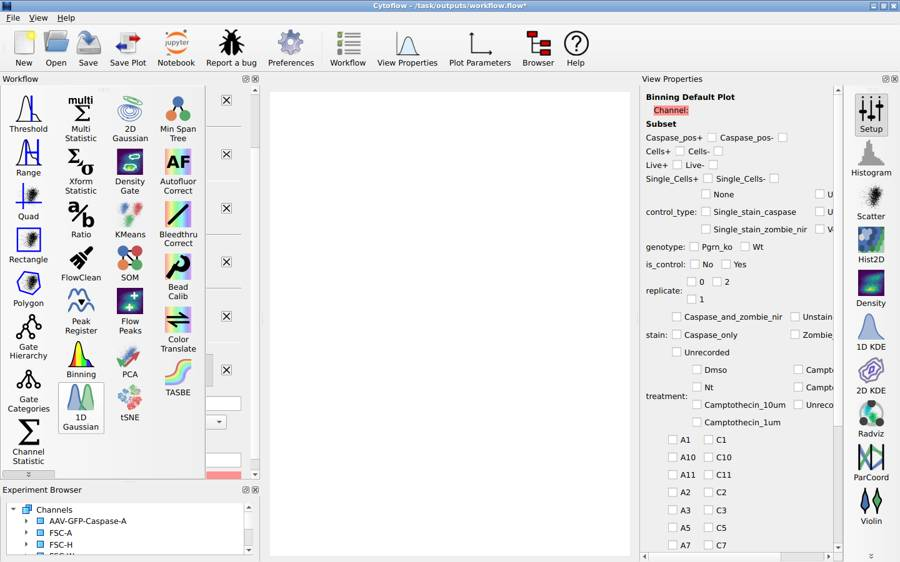
text(await tools.exec_command({cmd:"cu click 46 759\ncu scroll 122 649 down 9\ncu screenshot /tmp/screen.png","max_output_tokens":1000}));
image((await tools.view_image({path:"/tmp/screen.png"})).image_url);
Script completed Wall time 1.1 seconds Output:
{"chunk_id":"7ef9fc","wall_time_seconds":0.923997151,"exit_code":0,"original_token_count":4,"output":"/tmp/screen.png\n"}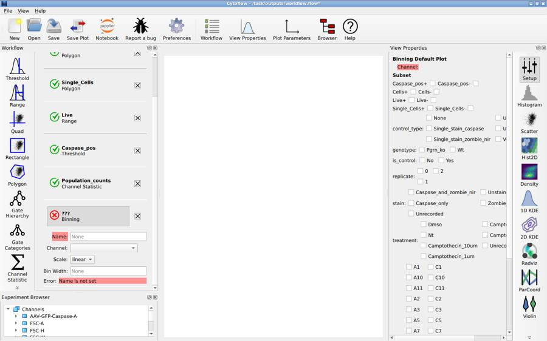
text(await tools.exec_command({cmd:"cu click 269 624\ncu key ctrl+a\ncu type Time_bin\ncu click 350 654\ncu key End\ncu key Return\ncu click 268 714\ncu key ctrl+a\ncu type 10\ncu key Tab\nsleep 4\ncu screenshot /tmp/screen.png","max_output_tokens":1000}));
image((await tools.view_image({path:"/tmp/screen.png"})).image_url);
Script completed Wall time 4.8 seconds Output:
{"chunk_id":"2f02fe","wall_time_seconds":4.590003072,"exit_code":0,"original_token_count":4,"output":"/tmp/screen.png\n"}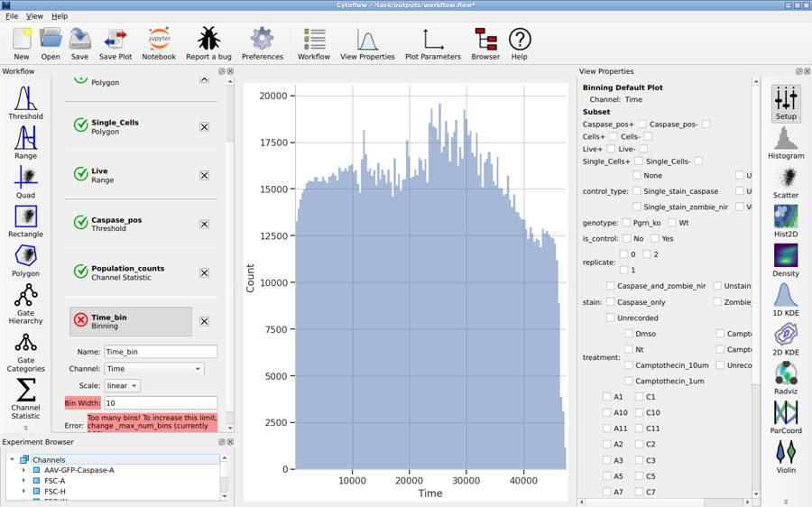
text(await tools.exec_command({cmd:"cu click 267 714\ncu key ctrl+a\ncu type 1000\ncu key Tab\nsleep 3\ncu click 46 694\nsleep 2\ncu scroll 122 660 down 13\ncu screenshot /tmp/screen.png","max_output_tokens":1000}));
image((await tools.view_image({path:"/tmp/screen.png"})).image_url);
Script completed Wall time 6.8 seconds Output:
{"chunk_id":"f530fa","wall_time_seconds":6.585906919,"exit_code":0,"original_token_count":4,"output":"/tmp/screen.png\n"}text(await tools.exec_command({cmd:"cu scroll 121 300 up 8\ncu screenshot /tmp/screen.png","max_output_tokens":1000}));
image((await tools.view_image({path:"/tmp/screen.png"})).image_url);
Script completed Wall time 0.9 seconds Output:
{"chunk_id":"5057b2","wall_time_seconds":0.717189957,"exit_code":0,"original_token_count":4,"output":"/tmp/screen.png\n"}text(await tools.exec_command({cmd:"cu click 270 420\ncu key ctrl+a\ncu type Time_counts\ncu click 344 450\ncu key End\ncu key Return\ncu click 319 480\ncu key Home\ncu key Return\ncu click 185 509\ncu click 185 537\ncu click 185 565\ncu click 185 593\ncu click 185 621\ncu click 353 649\nsleep 4\ncu click 1395 890\nsleep 1\ncu screenshot /tmp/screen.png","max_output_tokens":1000}));
image((await tools.view_image({path:"/tmp/screen.png"})).image_url);
Script completed Wall time 6.5 seconds Output:
{"chunk_id":"8de1c9","wall_time_seconds":6.341750572,"exit_code":0,"original_token_count":4,"output":"/tmp/screen.png\n"}text(await tools.exec_command({cmd:"sleep 4\ncu click 1399 532\nsleep 1\ncu click 1227 181\ncu screenshot /tmp/screen.png","max_output_tokens":1000}));
image((await tools.view_image({path:"/tmp/screen.png"})).image_url);
Script completed Wall time 5.3 seconds Output:
{"chunk_id":"62228b","wall_time_seconds":5.120749339,"exit_code":0,"original_token_count":4,"output":"/tmp/screen.png\n"}text(await tools.exec_command({cmd:"cu click 1157 230\nsleep 2\ncu click 1165 210\nsleep 1\ncu screenshot /tmp/screen.png","max_output_tokens":1000}));
image((await tools.view_image({path:"/tmp/screen.png"})).image_url);
Script completed Wall time 3.3 seconds Output:
{"chunk_id":"f53599","wall_time_seconds":3.131292802,"exit_code":0,"original_token_count":4,"output":"/tmp/screen.png\n"}text(await tools.exec_command({cmd:"cu click 664 568\ncu paste /task/outputs/time_counts_export.csv\ncu click 982 568\nsleep 1\ncu click 982 568\ncu key ctrl+s\nsleep 1\ncu screenshot /tmp/screen.png","max_output_tokens":1000}));
image((await tools.view_image({path:"/tmp/screen.png"})).image_url);
text(await tools.exec_command({cmd:"head -4 /task/outputs/time_counts_export.csv","max_output_tokens":1000}));
Script completed Wall time 3.8 seconds Output:
{"chunk_id":"20e3f7","wall_time_seconds":3.588818705,"exit_code":0,"original_token_count":4,"output":"/tmp/screen.png\n"}{"chunk_id":"8cfbbc","wall_time_seconds":0.000002684,"exit_code":0,"original_token_count":28,"output":"Caspase_pos,Cells,Live,Single_Cells,Time_bin,well,Time\n0,0,0,0,0,A10,51.0\n0,0,0,0,0,A11,32.0\n0,0,0,0,0,A3,37.0\n"}text(await tools.exec_command({cmd:"python3 - <<'PY'\nimport pandas as pd, numpy as np, matplotlib.pyplot as plt\np='/task/outputs/'\nd=pd.read_csv(p+'time_counts_export.csv'); l=pd.read_csv('/task/inputs/plate_layout.csv')\na=d.groupby(['well','Time_bin']).Time.sum().unstack(0).reindex(np.arange(0,48000,1000),fill_value=0).fillna(0)\nc=d[d.Cells.eq(1)].groupby(['well','Time_bin']).Time.sum().unstack(0).reindex(a.index,fill_value=0).fillna(0)\nv=d[d.Cells.eq(1)&d.Single_Cells.eq(1)&d.Live.eq(1)].groupby(['well','Time_bin']).Time.sum().unstack(0).reindex(a.index,fill_value=0).fillna(0)\nfig,axs=plt.subplots(6,5,figsize=(17,15),sharex=True)\nfor ax,w in zip(axs.flat,l.well):\n ax.plot(a.index/1000,a[w],label='all',c='gray'); ax.plot(c.index/1000,c[w],label='Cells',c='blue'); ax.plot(v.index/1000,v[w],label='Live',c='green'); ax.set_title(w); ax.grid(alpha=.2)\nfig.supxlabel('Time bin start (×1,000 native Time units); each bin width 1,000'); fig.supylabel('Events per bin'); axs[0,0].legend(fontsize=7)\nfig.tight_layout(); fig.savefig(p+'time_qc.png',dpi=120)\na.to_csv(p+'time_bins_all.csv'); c.to_csv(p+'time_bins_cells.csv');v.to_csv(p+'time_bins_live.csv')\nfor w in l.well:\n q=a[w]; print(w, 'total',int(q.sum()),'early 0:10k',int(q.iloc[:10].sum()),'middle 10:30k',int(q.iloc[10:30].sum()),'late 30:47k',int(q.iloc[30:47].sum()),'min inner',int(q.iloc[2:45].min()),'max',int(q.max()))\nPY","max_output_tokens":4000}));
image((await tools.view_image({path:"/task/outputs/time_qc.png"})).image_url);
Script completed Wall time 2.4 seconds Output:
{"chunk_id":"45e63d","wall_time_seconds":2.166473439,"exit_code":0,"original_token_count":707,"output":"A1 total 90651 early 0:10k 18107 middle 10:30k 42362 late 30:47k 29537 min inner 1340 max 2468\nA2 total 81008 early 0:10k 16358 middle 10:30k 37989 late 30:47k 26661 min inner 1328 max 2572\nA3 total 95933 early 0:10k 19406 middle 10:30k 43892 late 30:47k 32492 min inner 1516 max 2574\nA5 total 73753 early 0:10k 15921 middle 10:30k 33943 late 30:47k 23889 min inner 1129 max 2011\nA7 total 64975 early 0:10k 15037 middle 10:30k 29853 late 30:47k 20085 min inner 1027 max 1788\nA8 total 60216 early 0:10k 12727 middle 10:30k 28232 late 30:47k 19156 min inner 863 max 1669\nA9 total 80278 early 0:10k 16628 middle 10:30k 37324 late 30:47k 26326 min inner 1310 max 2161\nA10 total 64936 early 0:10k 13761 middle 10:30k 30693 late 30:47k 20325 min inner 939 max 1844\nA11 total 68296 early 0:10k 14587 middle 10:30k 31661 late 30:47k 22048 min inner 1076 max 2022\nB1 total 58310 early 0:10k 12340 middle 10:30k 26730 late 30:47k 19240 min inner 506 max 2405\nB2 total 51930 early 0:10k 10373 middle 10:30k 23896 late 30:47k 17530 min inner 885 max 1401\nB3 total 13995 early 0:10k 3049 middle 10:30k 6453 late 30:47k 4459 min inner 214 max 355\nB4 total 58782 early 0:10k 13169 middle 10:30k 26699 late 30:47k 18914 min inner 843 max 1774\nB5 total 33754 early 0:10k 7310 middle 10:30k 15567 late 30:47k 10877 min inner 482 max 917\nB6 total 8004 early 0:10k 1659 middle 10:30k 3661 late 30:47k 2668 min inner 115 max 212\nC1 total 95817 early 0:10k 19546 middle 10:30k 41905 late 30:47k 34366 min inner 1333 max 3836\nC2 total 80166 early 0:10k 16284 middle 10:30k 36011 late 30:47k 27732 min inner 1193 max 2797\nC3 total 68270 early 0:10k 14515 middle 10:30k 32155 late 30:47k 21600 min inner 1052 max 1830\nC5 total 88646 early 0:10k 18914 middle 10:30k 41057 late 30:47k 28590 min inner 1472 max 2345\nC7 total 119052 early 0:10k 26106 middle 10:30k 54814 late 30:47k 37909 min inner 1801 max 4289\nC8 total 52267 early 0:10k 11216 middle 10:30k 24580 late 30:47k 16471 min inner 698 max 1433\nC9 total 92282 early 0:10k 19664 middle 10:30k 43605 late 30:47k 28918 min inner 1042 max 2573\nC10 total 88797 early 0:10k 19667 middle 10:30k 38795 late 30:47k 30266 min inner 499 max 3462\nC11 total 63651 early 0:10k 14271 middle 10:30k 28419 late 30:47k 20961 min inner 469 max 2580\nD1 total 97824 early 0:10k 22362 middle 10:30k 43402 late 30:47k 31902 min inner 1001 max 3386\nD2 total 73937 early 0:10k 15206 middle 10:30k 35219 late 30:47k 23471 min inner 1264 max 2097\nD3 total 77334 early 0:10k 16401 middle 10:30k 34894 late 30:47k 26039 min inner 249 max 3840\nD4 total 46763 early 0:10k 10116 middle 10:30k 20924 late 30:47k 15707 min inner 182 max 1933\nD5 total 18412 early 0:10k 3807 middle 10:30k 8346 late 30:47k 6259 min inner 224 max 562\nD6 total 46753 early 0:10k 10502 middle 10:30k 20927 late 30:47k 15324 min inner 287 max 1640\n"}text(await tools.exec_command({cmd:"head -80 /task/outputs/workflow.flow","max_output_tokens":3000}));
Script completed
Wall time 0.0 seconds
Output:
{"chunk_id":"43203f","wall_time_seconds":0.000003645,"exit_code":0,"original_token_count":354,"output":"- !workflow-item;5\n channels:\n - AAV-GFP-Caspase-A\n - FSC-A\n - FSC-H\n - FSC-W\n - LiveDead-Zombie NIR-A\n - SSC-A\n - SSC-H\n - SSC-W\n - Time\n conditions:\n control_type: !pandas-series;3\n data:\n - none\n - single_stain_caspase\n - single_stain_zombie_nir\n - unstained\n - untreated\n - vehicle\n dtype: object\n index: !pandas-index;1\n dtype: int64\n name: null\n values:\n - 5\n - 2\n - 1\n - 0\n - 4\n - 3\n genotype: !pandas-series;3\n data:\n - PGRN_KO\n - WT\n dtype: object\n index: !pandas-index;1\n dtype: int64\n name: null\n values:\n - 1\n - 0\n is_control: !pandas-series;3\n data:\n - 'no'\n - 'yes'\n dtype: object\n index: !pandas-index;1\n dtype: int64\n name: null\n values:\n - 1\n - 0\n replicate: !pandas-series;3\n data:\n - '0'\n - '1'\n - '2'\n dtype: object\n index: !pandas-index;1\n dtype: int64\n name: null\n values:\n - 2\n - 0\n - 1\n stain: !pandas-series;3\n data:\n - caspase_and_zombie_nir\n - caspase_only\n - unrecorded\n - unstained\n - zombie_nir_only\n dtype: object\n index: !pandas-index;1\n dtype: int64\n name: null\n values:\n - 3\n - 2\n"}text(await tools.exec_command({cmd:"cu click 232 280\nsleep 1\ncu screenshot /tmp/screen.png","max_output_tokens":1000}));
image((await tools.view_image({path:"/tmp/screen.png"})).image_url);
Script completed Wall time 1.2 seconds Output:
{"chunk_id":"ec0c6d","wall_time_seconds":1.0190745940000001,"exit_code":0,"original_token_count":4,"output":"/tmp/screen.png\n"}text(await tools.exec_command({cmd:"cu click 273 650\ncu key ctrl+a\ncu type 500\ncu key Tab\nsleep 6\ncu click 230 710\nsleep 2\ncu screenshot /tmp/screen.png","yield_time_ms":20000,"max_output_tokens":1000}));
image((await tools.view_image({path:"/tmp/screen.png"})).image_url);
Script completed Wall time 8.4 seconds Output:
{"chunk_id":"592180","wall_time_seconds":8.247120785,"exit_code":0,"original_token_count":4,"output":"/tmp/screen.png\n"}text(await tools.exec_command({cmd:"sleep 8\ncu click 1165 210\nsleep 1\ncu screenshot /tmp/screen.png","yield_time_ms":20000,"max_output_tokens":1000}));
image((await tools.view_image({path:"/tmp/screen.png"})).image_url);
Script completed Wall time 9.2 seconds Output:
{"chunk_id":"c8c61a","wall_time_seconds":9.024267631,"exit_code":0,"original_token_count":4,"output":"/tmp/screen.png\n"}text(await tools.exec_command({cmd:"cu click 668 568\ncu paste /task/outputs/time_counts_500_export.csv\ncu click 982 568\nsleep 1\ncu click 982 568\ncu key ctrl+s\ncu click 46 759\nsleep 2\ncu screenshot /tmp/screen.png","max_output_tokens":1000}));
image((await tools.view_image({path:"/tmp/screen.png"})).image_url);
Script completed Wall time 4.9 seconds Output:
{"chunk_id":"afe757","wall_time_seconds":4.696510524,"exit_code":0,"original_token_count":4,"output":"/tmp/screen.png\n"}text(await tools.exec_command({cmd:"cu click 129 571\nsleep 1\ncu click 46 759\ncu scroll 122 666 down 12\ncu screenshot /tmp/screen.png","max_output_tokens":1000}));
image((await tools.view_image({path:"/tmp/screen.png"})).image_url);
Script completed Wall time 2.5 seconds Output:
{"chunk_id":"db4c50","wall_time_seconds":2.331593811,"exit_code":0,"original_token_count":4,"output":"/tmp/screen.png\n"}text(await tools.exec_command({cmd:"cu click 273 624\ncu key ctrl+a\ncu type SSC_ceiling_bin\ncu click 350 654\ncu key Home\ncu key Down\ncu key Down\ncu key Down\ncu key Down\ncu key Down\ncu key Return\ncu click 270 714\ncu key ctrl+a\ncu type 1048575\ncu key Tab\nsleep 4\ncu screenshot /tmp/screen.png","max_output_tokens":1000}));
image((await tools.view_image({path:"/tmp/screen.png"})).image_url);
Script completed Wall time 5.2 seconds Output:
{"chunk_id":"9cacab","wall_time_seconds":4.979233863,"exit_code":0,"original_token_count":4,"output":"/tmp/screen.png\n"}text(await tools.exec_command({cmd:"cu click 46 759\nsleep 1\ncu click 129 571\nsleep 1\ncu click 46 759\ncu scroll 122 669 down 12\ncu screenshot /tmp/screen.png","max_output_tokens":1000}));
image((await tools.view_image({path:"/tmp/screen.png"})).image_url);
Script completed Wall time 3.6 seconds Output:
{"chunk_id":"aaf4a4","wall_time_seconds":3.439621484,"exit_code":0,"original_token_count":4,"output":"/tmp/screen.png\n"}text(await tools.exec_command({cmd:"cu click 273 624\ncu key ctrl+a\ncu type FSC_ceiling_bin\ncu click 350 654\ncu key Home\ncu key Down\ncu key Return\ncu click 270 714\ncu key ctrl+a\ncu type 1048575\ncu key Tab\nsleep 4\ncu click 46 759\nsleep 1\ncu click 129 571\nsleep 1\ncu click 46 759\ncu scroll 122 669 down 12\ncu screenshot /tmp/screen.png","yield_time_ms":20000,"max_output_tokens":1000}));
image((await tools.view_image({path:"/tmp/screen.png"})).image_url);
Script completed Wall time 8.6 seconds Output:
{"chunk_id":"c70a3f","wall_time_seconds":8.443283121,"exit_code":0,"original_token_count":4,"output":"/tmp/screen.png\n"}text(await tools.exec_command({cmd:"cu click 273 624\ncu key ctrl+a\ncu type BL1_ceiling_bin\ncu click 350 654\ncu key Home\ncu key Return\ncu click 270 714\ncu key ctrl+a\ncu type 1048575\ncu key Tab\nsleep 4\ncu click 46 759\nsleep 1\ncu click 129 571\nsleep 1\ncu click 46 759\ncu scroll 122 669 down 12\ncu screenshot /tmp/screen.png","yield_time_ms":20000,"max_output_tokens":1000}));
image((await tools.view_image({path:"/tmp/screen.png"})).image_url);
Script completed Wall time 8.6 seconds Output:
{"chunk_id":"23370e","wall_time_seconds":8.417541393,"exit_code":0,"original_token_count":4,"output":"/tmp/screen.png\n"}text(await tools.exec_command({cmd:"cu click 273 624\ncu key ctrl+a\ncu type RL3_ceiling_bin\ncu click 350 654\ncu key Home\ncu key Down\ncu key Down\ncu key Down\ncu key Down\ncu key Return\ncu click 270 714\ncu key ctrl+a\ncu type 1048575\ncu key Tab\nsleep 4\ncu click 46 694\nsleep 1\ncu scroll 122 660 down 6\ncu screenshot /tmp/screen.png","yield_time_ms":20000,"max_output_tokens":1000}));
image((await tools.view_image({path:"/tmp/screen.png"})).image_url);
Script completed Wall time 6.8 seconds Output:
{"chunk_id":"f5bdca","wall_time_seconds":6.667041247,"exit_code":0,"original_token_count":4,"output":"/tmp/screen.png\n"}text(await tools.exec_command({cmd:"cu click 267 357\ncu key ctrl+a\ncu type Ceiling_counts\ncu click 343 388\ncu key End\ncu key Return\ncu click 320 418\ncu key Home\ncu key Return\ncu click 185 447\ncu click 185 531\ncu click 185 587\ncu click 185 615\ncu click 353 643\nsleep 3\ncu scroll 122 300 up 9\ncu screenshot /tmp/screen.png","max_output_tokens":1000}));
image((await tools.view_image({path:"/tmp/screen.png"})).image_url);
Script completed Wall time 5.3 seconds Output:
{"chunk_id":"f88506","wall_time_seconds":5.104368621,"exit_code":0,"original_token_count":4,"output":"/tmp/screen.png\n"}text(await tools.exec_command({cmd:"cu click 249 517\nsleep 1\ncu screenshot /tmp/screen.png","max_output_tokens":1000}));
image((await tools.view_image({path:"/tmp/screen.png"})).image_url);
Script completed Wall time 1.2 seconds Output:
{"chunk_id":"5113b7","wall_time_seconds":1.018642745,"exit_code":0,"original_token_count":4,"output":"/tmp/screen.png\n"}text(await tools.exec_command({cmd:"cu click 279 665\ncu key ctrl+a\ncu type 1048000\ncu key Tab\nsleep 4\ncu click 245 728\nsleep 1\ncu scroll 122 665 down 3\ncu screenshot /tmp/screen.png","max_output_tokens":1000}));
image((await tools.view_image({path:"/tmp/screen.png"})).image_url);
Script completed Wall time 5.8 seconds Output:
{"chunk_id":"3dda2a","wall_time_seconds":5.657928635,"exit_code":0,"original_token_count":4,"output":"/tmp/screen.png\n"}text(await tools.exec_command({cmd:"cu click 279 565\ncu key ctrl+a\ncu type 1048000\ncu key Tab\nsleep 5\ncu click 245 623\nsleep 2\ncu screenshot /tmp/screen.png","max_output_tokens":1000}));
image((await tools.view_image({path:"/tmp/screen.png"})).image_url);
Script completed Wall time 7.5 seconds Output:
{"chunk_id":"25c9b3","wall_time_seconds":7.353023031,"exit_code":0,"original_token_count":4,"output":"/tmp/screen.png\n"}text(await tools.exec_command({cmd:"cu click 279 650\ncu key ctrl+a\ncu type 1048000\ncu key Tab\nsleep 5\ncu click 245 709\nsleep 2\ncu scroll 122 666 down 3\ncu screenshot /tmp/screen.png","max_output_tokens":1000}));
image((await tools.view_image({path:"/tmp/screen.png"})).image_url);
Script completed Wall time 7.8 seconds Output:
{"chunk_id":"0c7c97","wall_time_seconds":7.6607357369999995,"exit_code":0,"original_token_count":4,"output":"/tmp/screen.png\n"}text(await tools.exec_command({cmd:"cu click 915 545\ncu click 272 650\ncu key ctrl+a\ncu type 1048000\ncu key Tab\nsleep 12\ncu screenshot /tmp/screen.png","yield_time_ms":20000,"max_output_tokens":1000}));
image((await tools.view_image({path:"/tmp/screen.png"})).image_url);
Script completed Wall time 12.5 seconds Output:
{"chunk_id":"70e0f7","wall_time_seconds":12.357364579,"exit_code":0,"original_token_count":4,"output":"/tmp/screen.png\n"}text(await tools.exec_command({cmd:"cu click 247 709\nsleep 2\ncu scroll 122 666 down 3\ncu screenshot /tmp/screen.png","max_output_tokens":1000}));
image((await tools.view_image({path:"/tmp/screen.png"})).image_url);
Script completed Wall time 2.5 seconds Output:
{"chunk_id":"fedcb3","wall_time_seconds":2.326703491,"exit_code":0,"original_token_count":4,"output":"/tmp/screen.png\n"}text(await tools.exec_command({cmd:"cu click 279 650\ncu key ctrl+a\ncu type 1048000\ncu key Tab\nsleep 12\ncu click 245 709\nsleep 2\ncu click 1393 890\nsleep 1\ncu screenshot /tmp/screen.png","yield_time_ms":20000,"max_output_tokens":1000}));
image((await tools.view_image({path:"/tmp/screen.png"})).image_url);
Script completed Wall time 15.6 seconds Output:
{"chunk_id":"f5ec06","wall_time_seconds":15.454754598,"exit_code":0,"original_token_count":4,"output":"/tmp/screen.png\n"}text(await tools.exec_command({cmd:"cu click 1398 530\nsleep 1\ncu click 1227 181\ncu screenshot /tmp/screen.png","max_output_tokens":1000}));
image((await tools.view_image({path:"/tmp/screen.png"})).image_url);
Script completed Wall time 1.3 seconds Output:
{"chunk_id":"49b411","wall_time_seconds":1.121514813,"exit_code":0,"original_token_count":4,"output":"/tmp/screen.png\n"}text(await tools.exec_command({cmd:"cu click 1166 181\nsleep 2\ncu click 1168 210\nsleep 1\ncu screenshot /tmp/screen.png","max_output_tokens":1000}));
image((await tools.view_image({path:"/tmp/screen.png"})).image_url);
Script completed Wall time 3.3 seconds Output:
{"chunk_id":"0bdf26","wall_time_seconds":3.129125285,"exit_code":0,"original_token_count":4,"output":"/tmp/screen.png\n"}text(await tools.exec_command({cmd:"cu click 668 568\ncu paste /task/outputs/ceiling_counts_export.csv\ncu click 982 568\nsleep 1\ncu click 982 568\ncu key ctrl+s\nsleep 1\ncu screenshot /tmp/screen.png","max_output_tokens":1000}));
image((await tools.view_image({path:"/tmp/screen.png"})).image_url);
text(await tools.exec_command({cmd:"python3 - <<'PY'\nimport pandas as pd\np='/task/outputs/'\nd=pd.read_csv(p+'ceiling_counts_export.csv'); print(d.columns); print(d.head()); print({c:d[c].unique().tolist() for c in d.columns if c.endswith('_bin')}); print('total',d.Time.sum())\nPY","max_output_tokens":2000}));
Script completed Wall time 4.0 seconds Output:
{"chunk_id":"ecf9dc","wall_time_seconds":3.586577628,"exit_code":0,"original_token_count":4,"output":"/tmp/screen.png\n"}{"chunk_id":"7903ca","wall_time_seconds":0.090991022,"exit_code":0,"original_token_count":160,"output":"Index(['BL1_ceiling_bin', 'FSC_ceiling_bin', 'RL3_ceiling_bin',\n 'SSC_ceiling_bin', 'well', 'Time'],\n dtype='object')\n BL1_ceiling_bin FSC_ceiling_bin ... well Time\n0 -1048000.0 -1048000.0 ... A1 21.0\n1 -1048000.0 -1048000.0 ... A10 3.0\n2 -1048000.0 -1048000.0 ... A11 9.0\n3 -1048000.0 -1048000.0 ... A2 12.0\n4 -1048000.0 -1048000.0 ... A3 4.0\n\n[5 rows x 6 columns]\n{'BL1_ceiling_bin': [-1048000.0, 0.0], 'FSC_ceiling_bin': [-1048000.0, 0.0], 'RL3_ceiling_bin': [-1048000.0, 0.0], 'SSC_ceiling_bin': [-1048000.0, 0.0]}\ntotal 1424928.0\n"}text(await tools.exec_command({cmd:"cu click 239 240\ncu click 922 70\nsleep 2\ncu screenshot /tmp/screen.png","max_output_tokens":1000}));
image((await tools.view_image({path:"/tmp/screen.png"})).image_url);
Script completed Wall time 2.3 seconds Output:
{"chunk_id":"0475a7","wall_time_seconds":2.125659118,"exit_code":0,"original_token_count":4,"output":"/tmp/screen.png\n"}text(await tools.exec_command({cmd:"cu click 922 70\ncu scroll 122 666 down 14\ncu screenshot /tmp/screen.png","max_output_tokens":1000}));
image((await tools.view_image({path:"/tmp/screen.png"})).image_url);
Script completed Wall time 1.6 seconds Output:
{"chunk_id":"293ffd","wall_time_seconds":1.4264194,"exit_code":0,"original_token_count":4,"output":"/tmp/screen.png\n"}text(await tools.exec_command({cmd:"cu click 247 689\nsleep 2\ncu screenshot /tmp/screen.png","max_output_tokens":1000}));
image((await tools.view_image({path:"/tmp/screen.png"})).image_url);
Script completed Wall time 2.2 seconds Output:
{"chunk_id":"f81b49","wall_time_seconds":2.01590017,"exit_code":0,"original_token_count":4,"output":"/tmp/screen.png\n"}text(await tools.exec_command({cmd:"rg -n 'Ceiling_counts|name: .*ceiling_bin|high:|low:|bin_width:' /task/outputs/workflow.flow | tail -70","max_output_tokens":4000}));
Script completed
Wall time 0.0 seconds
Output:
{"chunk_id":"916eb2","wall_time_seconds":0.000003916,"exit_code":0,"original_token_count":536,"output":"12054: low: 0.0\n12502: high: 47000.0\n12503: low: 0.0\n277270: bin_width: 1048000.0\n277272: name: SSC_ceiling_bin\n277304: high: 47000.0\n277305: low: 0.0\n542371: bin_width: 1048000.0\n542373: name: FSC_ceiling_bin\n542398: high: 0.0\n542399: low: -1048000.0\n542400: name: SSC_ceiling_bin\n542413: high: 47000.0\n542414: low: 0.0\n807503: bin_width: 1048000.0\n807505: name: BL1_ceiling_bin\n807523: high: 0.0\n807524: low: -1048000.0\n807525: name: FSC_ceiling_bin\n807538: high: 0.0\n807539: low: -1048000.0\n807540: name: SSC_ceiling_bin\n807553: high: 47000.0\n807554: low: 0.0\n1072666: bin_width: 1048000.0\n1072668: name: RL3_ceiling_bin\n1072672: high: 0.0\n1072673: low: -1048000.0\n1072674: name: BL1_ceiling_bin\n1072694: high: 0.0\n1072695: low: -1048000.0\n1072696: name: FSC_ceiling_bin\n1072709: high: 0.0\n1072710: low: -1048000.0\n1072711: name: SSC_ceiling_bin\n1072724: high: 47000.0\n1072725: low: 0.0\n1337847: statistic: Ceiling_counts\n1337850: high: 0.0\n1337851: low: -1048000.0\n1337852: name: BL1_ceiling_bin\n1337857: high: 0.0\n1337858: low: -1048000.0\n1337859: name: FSC_ceiling_bin\n1337864: high: 0.0\n1337865: low: -1048000.0\n1337866: name: RL3_ceiling_bin\n1337871: high: 0.0\n1337872: low: -1048000.0\n1337873: name: SSC_ceiling_bin\n1338235: name: Ceiling_counts\n1338238: high: 0.0\n1338239: low: -1048000.0\n1338240: name: BL1_ceiling_bin\n1338260: high: 0.0\n1338261: low: -1048000.0\n1338262: name: FSC_ceiling_bin\n1338275: high: 0.0\n1338276: low: -1048000.0\n1338277: name: RL3_ceiling_bin\n1338283: high: 0.0\n1338284: low: -1048000.0\n1338285: name: SSC_ceiling_bin\n1338298: high: 47000.0\n1338299: low: 0.0\n1338481: Ceiling_counts: !pandas-dataframe;1\n1340827: name: BL1_ceiling_bin\n1340833: name: FSC_ceiling_bin\n1340839: name: RL3_ceiling_bin\n1340845: name: SSC_ceiling_bin\n"}text(await tools.exec_command({cmd:"cu drag 420 520 666 520\ncu scroll 122 669 down 6\ncu screenshot /tmp/screen.png","max_output_tokens":1000}));
image((await tools.view_image({path:"/tmp/screen.png"})).image_url);
Script completed Wall time 0.7 seconds Output:
{"chunk_id":"236b10","wall_time_seconds":0.551582632,"exit_code":0,"original_token_count":4,"output":"/tmp/screen.png\n"}text(await tools.exec_command({cmd:"python3 - <<'PY'\nimport pandas as pd\np='/task/outputs/'\nd=pd.read_csv(p+'time_counts_500_export.csv'); print(d.Time.sum(),d.Time_bin.max(), sorted(d.Time_bin.unique())[-5:])\nPY\ncu click 597 589\ncu key ctrl+a\ncu type 1048000\ncu key Tab\ncu click 597 619\ncu key ctrl+a\ncu type 1048000\ncu key Tab\ncu click 597 671\ncu key ctrl+a\ncu type 1048000\ncu key Tab\ncu click 597 733\ncu key ctrl+a\ncu type 1048000\ncu key Tab\nsleep 15\ncu screenshot /tmp/screen.png","yield_time_ms":20000,"max_output_tokens":1000}));
image((await tools.view_image({path:"/tmp/screen.png"})).image_url);
Script completed Wall time 16.6 seconds Output:
{"chunk_id":"728968","wall_time_seconds":16.473780729,"exit_code":0,"original_token_count":17,"output":"2014792.0 47000 [45000, 45500, 46000, 46500, 47000]\n/tmp/screen.png\n"}text(await tools.exec_command({cmd:"cu click 1308 263\ncu key ctrl+a\ncu type 1048000\ncu key Tab\ncu click 1308 293\ncu key ctrl+a\ncu type 1048000\ncu key Tab\ncu click 1308 324\ncu key ctrl+a\ncu type 1048000\ncu key Tab\ncu click 1308 354\ncu key ctrl+a\ncu type 1048000\ncu key Tab\nsleep 4\ncu click 1168 210\nsleep 1\ncu screenshot /tmp/screen.png","max_output_tokens":1000}));
image((await tools.view_image({path:"/tmp/screen.png"})).image_url);
Script completed Wall time 6.5 seconds Output:
{"chunk_id":"cd79ec","wall_time_seconds":6.342653549,"exit_code":0,"original_token_count":4,"output":"/tmp/screen.png\n"}text(await tools.exec_command({cmd:"cu click 668 568\ncu paste /task/outputs/ceiling_counts_full_export.csv\ncu click 982 568\nsleep 1\ncu click 982 568\ncu key ctrl+s\nsleep 2\ncu screenshot /tmp/screen.png","max_output_tokens":1000}));
image((await tools.view_image({path:"/tmp/screen.png"})).image_url);
text(await tools.exec_command({cmd:"python3 - <<'PY'\nimport pandas as pd\np='/task/outputs/'; d=pd.read_csv(p+'ceiling_counts_full_export.csv');print('total',d.Time.sum()); print({c:d[c].unique().tolist() for c in d if c.endswith('_bin')})\ns=d.groupby('well').Time.sum().to_frame('all_events')\nfor c in d:\n if c.endswith('_bin'):\n q=d[d[c].ge(1048000)].groupby('well').Time.sum().reindex(s.index,fill_value=0)\n s[c]=q.astype(int);s[c+'_pct']=100*q/s.all_events\ns.to_csv(p+'ceiling_summary.csv'); print(s.round(3).to_string())\nPY","max_output_tokens":4000}));
Script completed Wall time 5.0 seconds Output:
{"chunk_id":"12005a","wall_time_seconds":4.590260539,"exit_code":0,"original_token_count":4,"output":"/tmp/screen.png\n"}{"chunk_id":"ccbf0f","wall_time_seconds":0.093821015,"exit_code":0,"original_token_count":1406,"output":"total 2014792.0\n{'BL1_ceiling_bin': [-1048000.0, 0.0, 1048000.0], 'FSC_ceiling_bin': [-1048000.0, 0.0, 1048000.0], 'RL3_ceiling_bin': [-1048000.0, 0.0, 1048000.0], 'SSC_ceiling_bin': [-1048000.0, 0.0, 1048000.0]}\n all_events BL1_ceiling_bin BL1_ceiling_bin_pct FSC_ceiling_bin FSC_ceiling_bin_pct RL3_ceiling_bin RL3_ceiling_bin_pct SSC_ceiling_bin SSC_ceiling_bin_pct\nwell \nA1 90651.0 0 0.000 3841 4.237 0 0.000 27585 30.430\nA10 64936.0 1 0.002 1249 1.923 162 0.249 16344 25.169\nA11 68296.0 2 0.003 2016 2.952 47 0.069 18573 27.195\nA2 81008.0 0 0.000 2331 2.877 0 0.000 21828 26.945\nA3 95933.0 1 0.001 1763 1.838 0 0.000 25618 26.704\nA5 73753.0 0 0.000 1586 2.150 64 0.087 21290 28.867\nA7 64975.0 0 0.000 715 1.100 2 0.003 17162 26.413\nA8 60216.0 0 0.000 1049 1.742 4 0.007 17736 29.454\nA9 80278.0 2 0.002 1445 1.800 3 0.004 19904 24.794\nB1 58310.0 1 0.002 1282 2.199 234 0.401 15967 27.383\nB2 51930.0 3 0.006 1680 3.235 86 0.166 12438 23.951\nB3 13995.0 0 0.000 85 0.607 5 0.036 1854 13.248\nB4 58782.0 0 0.000 1357 2.309 106 0.180 11801 20.076\nB5 33754.0 0 0.000 277 0.821 274 0.812 8948 26.509\nB6 8004.0 0 0.000 18 0.225 6 0.075 1237 15.455\nC1 95817.0 0 0.000 5580 5.824 0 0.000 34368 35.868\nC10 88797.0 4 0.005 3906 4.399 128 0.144 26977 30.381\nC11 63651.0 2 0.003 2555 4.014 230 0.361 18899 29.692\nC2 80166.0 0 0.000 3763 4.694 0 0.000 27236 33.975\nC3 68270.0 1 0.001 2941 4.308 2 0.003 25231 36.958\nC5 88646.0 0 0.000 4776 5.388 44 0.050 35295 39.816\nC7 119052.0 0 0.000 3404 2.859 3 0.003 37961 31.886\nC8 52267.0 0 0.000 1933 3.698 33 0.063 18571 35.531\nC9 92282.0 4 0.004 4197 4.548 31 0.034 33538 36.343\nD1 97824.0 6 0.006 3983 4.072 330 0.337 24126 24.663\nD2 73937.0 7 0.009 2505 3.388 193 0.261 19687 26.627\nD3 77334.0 8 0.010 2631 3.402 382 0.494 22021 28.475\nD4 46763.0 0 0.000 745 1.593 424 0.907 12461 26.647\nD5 18412.0 1 0.005 252 1.369 194 1.054 4674 25.386\nD6 46753.0 0 0.000 608 1.300 340 0.727 10517 22.495\n"}text(await tools.exec_command({cmd:"python3 - <<'PY'\nimport pandas as pd,numpy as np\np='/task/outputs/';d=pd.read_csv(p+'time_counts_500_export.csv'); q=d.groupby(['Time_bin','well']).Time.sum().unstack().fillna(0)\nfor w in pd.read_csv('/task/inputs/plate_layout.csv').well:\n s=q[w]; base=s.rolling(11,center=True,min_periods=3).median(); r=s/base\n interior=(s.index>=2000)&(s.index<=44000); x=r[interior]; t=x.idxmin(); i=list(s.index).index(t)\n print(w, 'minbin',int(t),'count',int(s.loc[t]),'baseline',int(base.loc[t]),'ratio',round(x.min(),2),'near',list(map(int,s.iloc[i-2:i+5])), 'bins<.5',list(map(int,x[x<.5].index)), 'maxratio',round((s/base)[interior].max(),2))\nPY","max_output_tokens":4000}));
Script completed
Wall time 0.3 seconds
Output:
{"chunk_id":"1832b2","wall_time_seconds":0.118776582,"exit_code":0,"original_token_count":939,"output":"A1 minbin 14000 count 835 baseline 1090 ratio 0.77 near [1095, 1090, 835, 1122, 1031, 923, 936] bins<.5 [] maxratio 1.18\nA2 minbin 24500 count 749 baseline 1129 ratio 0.66 near [1054, 1219, 749, 1416, 1156, 1170, 1129] bins<.5 [] maxratio 1.25\nA3 minbin 35000 count 989 baseline 1081 ratio 0.91 near [1081, 1122, 989, 1102, 952, 1044, 1021] bins<.5 [] maxratio 1.13\nA5 minbin 19500 count 622 baseline 807 ratio 0.77 near [807, 772, 622, 888, 733, 836, 762] bins<.5 [] maxratio 1.16\nA7 minbin 41500 count 498 baseline 554 ratio 0.9 near [518, 529, 498, 520, 568, 560, 556] bins<.5 [] maxratio 1.18\nA8 minbin 23000 count 629 baseline 784 ratio 0.8 near [763, 784, 629, 971, 792, 814, 823] bins<.5 [] maxratio 1.25\nA9 minbin 35500 count 749 baseline 863 ratio 0.87 near [815, 843, 749, 863, 881, 853, 869] bins<.5 [] maxratio 1.18\nA10 minbin 27500 count 760 baseline 864 ratio 0.88 near [858, 865, 760, 891, 864, 805, 773] bins<.5 [] maxratio 1.11\nA11 minbin 25500 count 474 baseline 834 ratio 0.57 near [834, 825, 474, 787, 1235, 972, 904] bins<.5 [] maxratio 1.46\nB1 minbin 28000 count 85 baseline 730 ratio 0.12 near [342, 164, 85, 1102, 1491, 914, 730] bins<.5 [27500, 28000] maxratio 2.07\nB2 minbin 24500 count 483 baseline 609 ratio 0.79 near [583, 749, 483, 752, 561, 761, 640] bins<.5 [] maxratio 1.28\nB3 minbin 43000 count 89 baseline 118 ratio 0.75 near [109, 116, 89, 125, 125, 123, 162] bins<.5 [] maxratio 1.23\nB4 minbin 31000 count 274 baseline 668 ratio 0.41 near [558, 503, 274, 1206, 770, 620, 668] bins<.5 [31000] maxratio 1.81\nB5 minbin 25000 count 119 baseline 434 ratio 0.27 near [363, 434, 119, 582, 452, 450, 284] bins<.5 [25000, 27500] maxratio 1.4\nB6 minbin 42500 count 48 baseline 76 ratio 0.63 near [65, 67, 48, 78, 85, 76, 76] bins<.5 [] maxratio 1.29\nC1 minbin 29000 count 47 baseline 1219 ratio 0.04 near [1266, 640, 47, 1286, 2354, 1482, 1129] bins<.5 [29000] maxratio 1.93\nC2 minbin 27500 count 457 baseline 1044 ratio 0.44 near [902, 736, 457, 1753, 1044, 779, 1114] bins<.5 [27500] maxratio 1.71\nC3 minbin 17000 count 618 baseline 735 ratio 0.84 near [717, 808, 618, 800, 808, 735, 714] bins<.5 [] maxratio 1.24\nC5 minbin 14000 count 898 baseline 1049 ratio 0.86 near [1131, 1098, 898, 1089, 1093, 929, 1091] bins<.5 [] maxratio 1.14\nC7 minbin 23000 count 502 baseline 1313 ratio 0.38 near [1119, 913, 502, 1299, 2410, 1879, 1379] bins<.5 [23000] maxratio 1.84\nC8 minbin 31000 count 427 baseline 648 ratio 0.66 near [588, 695, 427, 769, 633, 648, 649] bins<.5 [] maxratio 1.21\nC9 minbin 11000 count 45 baseline 979 ratio 0.05 near [630, 412, 45, 2288, 1434, 1111, 1104] bins<.5 [10500, 11000] maxratio 2.16\nC10 minbin 26500 count 53 baseline 1013 ratio 0.05 near [1013, 446, 53, 1473, 1989, 1129, 521] bins<.5 [11000, 26000, 26500, 28500, 29000] maxratio 1.76\nC11 minbin 21000 count 19 baseline 710 ratio 0.03 near [446, 339, 19, 1119, 956, 151, 1514] bins<.5 [11000, 21000, 22500, 25500, 36500] maxratio 2.3\nD1 minbin 24500 count 53 baseline 1140 ratio 0.05 near [1715, 948, 53, 2159, 1227, 871, 1140] bins<.5 [23000, 24500] maxratio 1.89\nD2 minbin 29000 count 488 baseline 888 ratio 0.55 near [1072, 888, 488, 1299, 834, 796, 958] bins<.5 [] maxratio 1.44\nD3 minbin 18000 count 53 baseline 615 ratio 0.09 near [746, 446, 53, 196, 1675, 2165, 1525] bins<.5 [16500, 18000, 18500, 28500, 32500, 37500, 42500] maxratio 2.54\nD4 minbin 32500 count 13 baseline 592 ratio 0.02 near [261, 169, 13, 898, 1035, 760, 592] bins<.5 [27500, 32000, 32500] maxratio 2.46\nD5 minbin 18000 count 9 baseline 216 ratio 0.04 near [135, 134, 9, 475, 277, 189, 229] bins<.5 [18000, 25500] maxratio 2.2\nD6 minbin 33000 count 10 baseline 590 ratio 0.02 near [196, 91, 10, 590, 949, 691, 617] bins<.5 [22500, 23000, 23500, 32500, 33000] maxratio 2.48\n"}text(await tools.exec_command({cmd:"rg -n 'name: (Cells|Single_Cells|Live|Caspase_pos)$|vertices:|threshold: 5000|high: 2000' /task/outputs/workflow.flow | head -45","max_output_tokens":2000}));
text(await tools.clock__curr_time({}));
Script completed
Wall time 0.0 seconds
Output:
{"chunk_id":"00f25c","wall_time_seconds":0.000003475,"exit_code":0,"original_token_count":314,"output":"1127: name: Cells\n1128: vertices:\n1934: name: Single_Cells\n1935: vertices:\n1977: name: Cells\n2741: high: 2000.0\n2743: name: Live\n2774: name: Cells\n2779: name: Single_Cells\n3563: name: Caspase_pos\n3564: threshold: 5000.0\n3593: name: Cells\n3600: name: Live\n3607: name: Single_Cells\n4400: name: Caspase_pos\n4405: name: Cells\n4410: name: Live\n4415: name: Single_Cells\n4638: name: Caspase_pos\n4643: name: Cells\n4648: name: Live\n4653: name: Single_Cells\n7802: name: Caspase_pos\n7808: name: Cells\n7814: name: Live\n7820: name: Single_Cells\n8191: name: Caspase_pos\n8198: name: Cells\n8205: name: Live\n8212: name: Single_Cells\n11639: name: Caspase_pos\n11645: name: Cells\n11651: name: Live\n11657: name: Single_Cells\n12025: name: Caspase_pos\n12032: name: Cells\n12039: name: Live\n12046: name: Single_Cells\n12474: name: Caspase_pos\n12481: name: Cells\n12488: name: Live\n12495: name: Single_Cells\n15746: name: Caspase_pos\n15752: name: Cells\n15758: name: Live\n"}
{"current_time":"2026-11-05 08:35:37 UTC"}text(await tools.exec_command({cmd:"python3 - <<'PY'\n# Read only FCS header/TEXT metadata; never access the DATA/event segment.\nfrom pathlib import Path\nfor path in sorted(Path('/task/inputs/raw').glob('*.fcs')):\n with path.open('rb') as f:\n header=f.read(58)\n start=int(header[10:18]); end=int(header[18:26])\n f.seek(start); raw=f.read(end-start+1).decode('latin1')\n delim=raw[0]; fields=raw[1:].split(delim); meta=dict(zip(fields[::2],fields[1::2]))\n steps={k:v for k,v in meta.items() if 'TIMESTEP' in k.upper()}\n print(path.stem.split('_')[-1],steps)\nPY","max_output_tokens":2000}));
Script completed
Wall time 0.1 seconds
Output:
{"chunk_id":"66bd04","wall_time_seconds":0.000003706,"exit_code":0,"original_token_count":196,"output":"A1 {'$TIMESTEP': '0.001'}\nA10 {'$TIMESTEP': '0.001'}\nA11 {'$TIMESTEP': '0.001'}\nA2 {'$TIMESTEP': '0.001'}\nA3 {'$TIMESTEP': '0.001'}\nA5 {'$TIMESTEP': '0.001'}\nA7 {'$TIMESTEP': '0.001'}\nA8 {'$TIMESTEP': '0.001'}\nA9 {'$TIMESTEP': '0.001'}\nB1 {'$TIMESTEP': '0.001'}\nB2 {'$TIMESTEP': '0.001'}\nB3 {'$TIMESTEP': '0.001'}\nB4 {'$TIMESTEP': '0.001'}\nB5 {'$TIMESTEP': '0.001'}\nB6 {'$TIMESTEP': '0.001'}\nC1 {'$TIMESTEP': '0.001'}\nC10 {'$TIMESTEP': '0.001'}\nC11 {'$TIMESTEP': '0.001'}\nC2 {'$TIMESTEP': '0.001'}\nC3 {'$TIMESTEP': '0.001'}\nC5 {'$TIMESTEP': '0.001'}\nC7 {'$TIMESTEP': '0.001'}\nC8 {'$TIMESTEP': '0.001'}\nC9 {'$TIMESTEP': '0.001'}\nD1 {'$TIMESTEP': '0.001'}\nD2 {'$TIMESTEP': '0.001'}\nD3 {'$TIMESTEP': '0.001'}\nD4 {'$TIMESTEP': '0.001'}\nD5 {'$TIMESTEP': '0.001'}\nD6 {'$TIMESTEP': '0.001'}\n"}text(await tools.exec_command({cmd:"python3 - <<'PY'\nfrom pathlib import Path\np=Path('/task/inputs/raw/Caspase_primaryneurons_caspase_Group_A1.fcs')\nwith p.open('rb') as f:\n h=f.read(58); a,b=int(h[10:18]),int(h[18:26]);f.seek(a); t=f.read(b-a+1).decode('latin1')\nf=t[1:].split(t[0]); m=dict(zip(f[::2],f[1::2]))\nfor i in range(1,int(m['$PAR'])+1):\n n=m.get(f'$P{i}N','');s=m.get(f'$P{i}S','')\n if n in ['FSC-A','SSC-A','BL1-A','RL3-A','Time'] or s in ['FSC-A','SSC-A','AAV-GFP-Caspase-A','LiveDead-Zombie NIR-A','Time']:\n print(i,n,s,'range',m.get(f'$P{i}R'),'exponent',m.get(f'$P{i}E'))\nPY\nsed -n '1114,1163p' /task/outputs/workflow.flow\nsed -n '1920,1958p' /task/outputs/workflow.flow","max_output_tokens":4000}));
Script completed
Wall time 0.1 seconds
Output:
{"chunk_id":"f7e347","wall_time_seconds":0.000003775,"exit_code":0,"original_token_count":560,"output":"1 Time Time range 67108864 exponent 0,0\n2 FSC-A FSC-A range 1048576 exponent 0,0\n3 SSC-A SSC-A range 1048576 exponent 0,0\n4 BL1-A AAV-GFP-Caspase-A range 1048576 exponent 0,0\n5 RL3-A LiveDead-Zombie NIR-A range 1048576 exponent 0,0\n - 20\n - 21\n - 24\n - 25\n - 26\n - 27\n - 28\n - 29\n current_view: &id002 !polygon-view;3\n current_plot: null\n huefacet: ''\n huescale: log\n op: &id001 !polygon;1\n name: Cells\n vertices:\n - !!python/tuple\n - 92711.25556896697\n - 30944.83779455116\n - !!python/tuple\n - 60630.10598099057\n - 140697.38250335515\n - !!python/tuple\n - 71323.82251031604\n - 400270.8612590979\n - !!python/tuple\n - 154200.1256125884\n - 800954.7546404458\n - !!python/tuple\n - 261137.29090584305\n - 980391.454719919\n - !!python/tuple\n - 445603.90103670734\n - 980391.454719919\n - !!python/tuple\n - 603336.2198442579\n - 800954.7546404458\n - !!python/tuple\n - 523133.345874317\n - 421176.1078702987\n - !!python/tuple\n - 303912.1570231449\n - 111081.61647082074\n - !!python/tuple\n - 162220.41300958252\n - 20492.21448895076\n xchannel: FSC-A\n xscale: linear\n ychannel: SSC-A\n yscale: linear\n plot_params: !polygon-params;1\n - 19\n - 20\n - 21\n - 24\n - 25\n - 26\n - 27\n - 28\n - 29\n current_view: &id006 !polygon-view;3\n current_plot: null\n huefacet: ''\n huescale: log\n op: &id005 !polygon;1\n name: Single_Cells\n vertices:\n - !!python/tuple\n - 30618.403884026047\n - 20492.21448895076\n - !!python/tuple\n - 368583.9007254095\n - 980391.454719919\n - !!python/tuple\n - 752147.9169819003\n - 980391.454719919\n - !!python/tuple\n - 121815.4427142406\n - 20492.21448895076\n xchannel: SSC-H\n xscale: linear\n ychannel: SSC-A\n yscale: linear\n plot_params: !polygon-params;1\n alpha: 0.25\n col_wrap: null\n density: true\n despine: true\n gridsize: 50\n huelabel: ''\n"}text(await tools.exec_command({cmd:"cu drag 667 520 420 520\ncu click 1392 247\nsleep 2\ncu screenshot /tmp/screen.png","max_output_tokens":1000}));
image((await tools.view_image({path:"/tmp/screen.png"})).image_url);
Script completed Wall time 2.2 seconds Output:
{"chunk_id":"eabe2d","wall_time_seconds":2.052451714,"exit_code":0,"original_token_count":4,"output":"/tmp/screen.png\n"}text(await tools.exec_command({cmd:"cu click 1297 181\ncu key End\ncu key Return\ncu click 1298 241\ncu key Home\ncu key Down\ncu key Return\ncu click 1189 271\ncu key End\ncu key Return\ncu click 1248 481\ncu key End\ncu key Up\ncu key Return\nsleep 6\ncu screenshot /tmp/screen.png","max_output_tokens":1000}));
image((await tools.view_image({path:"/tmp/screen.png"})).image_url);
Script completed Wall time 6.7 seconds Output:
{"chunk_id":"5481d5","wall_time_seconds":6.503367019,"exit_code":0,"original_token_count":4,"output":"/tmp/screen.png\n"}text(await tools.exec_command({cmd:"cu click 769 70\nsleep 1\ncu screenshot /tmp/screen.png","max_output_tokens":1000}));
image((await tools.view_image({path:"/tmp/screen.png"})).image_url);
Script completed Wall time 1.2 seconds Output:
{"chunk_id":"d80f23","wall_time_seconds":1.047659224,"exit_code":0,"original_token_count":4,"output":"/tmp/screen.png\n"}text(await tools.exec_command({cmd:"cu click 1222 492\ncu key ctrl+a\ncu type 0.08\ncu key Tab\ncu click 1222 523\ncu key ctrl+a\ncu type 1\ncu key Tab\ncu click 875 140\nsleep 4\ncu screenshot /tmp/screen.png","max_output_tokens":1000}));
image((await tools.view_image({path:"/tmp/screen.png"})).image_url);
Script completed Wall time 4.7 seconds Output:
{"chunk_id":"3a42fe","wall_time_seconds":4.486340176,"exit_code":0,"original_token_count":4,"output":"/tmp/screen.png\n"}text(await tools.exec_command({cmd:"sleep 5\ncu screenshot /tmp/screen.png","max_output_tokens":1000}));
image((await tools.view_image({path:"/tmp/screen.png"})).image_url);
Script completed Wall time 5.1 seconds Output:
{"chunk_id":"6c549f","wall_time_seconds":4.94563716,"exit_code":0,"original_token_count":4,"output":"/tmp/screen.png\n"}text(await tools.exec_command({cmd:"mkdir -p /task/outputs/qc\ncu screenshot /task/outputs/qc/B1_time_scatter.png\ncu click 957 140\nsleep 5\ncu screenshot /tmp/screen.png","max_output_tokens":1000}));
image((await tools.view_image({path:"/tmp/screen.png"})).image_url);
Script completed Wall time 5.3 seconds Output:
{"chunk_id":"d6e9c2","wall_time_seconds":5.137666975,"exit_code":0,"original_token_count":14,"output":"/task/outputs/qc/B1_time_scatter.png\n/tmp/screen.png\n"}text(await tools.exec_command({cmd:"cu click 999 139\ncu click 999 139\ncu click 999 139\ncu screenshot /tmp/screen.png","max_output_tokens":1000}));
image((await tools.view_image({path:"/tmp/screen.png"})).image_url);
Script completed Wall time 0.4 seconds Output:
{"chunk_id":"c2651f","wall_time_seconds":0.254600824,"exit_code":0,"original_token_count":4,"output":"/tmp/screen.png\n"}text(await tools.exec_command({cmd:"cu click 955 139\nsleep 5\ncu screenshot /tmp/screen.png","max_output_tokens":1000}));
image((await tools.view_image({path:"/tmp/screen.png"})).image_url);
Script completed Wall time 5.2 seconds Output:
{"chunk_id":"e24408","wall_time_seconds":5.033254091,"exit_code":0,"original_token_count":4,"output":"/tmp/screen.png\n"}text(await tools.exec_command({cmd:"cu screenshot /task/outputs/qc/B6_time_scatter.png\ncu key Right\nsleep 5\ncu screenshot /tmp/screen.png","max_output_tokens":1000}));
image((await tools.view_image({path:"/tmp/screen.png"})).image_url);
Script completed Wall time 5.2 seconds Output:
{"chunk_id":"006fba","wall_time_seconds":5.021745465,"exit_code":0,"original_token_count":14,"output":"/task/outputs/qc/B6_time_scatter.png\n/tmp/screen.png\n"}text(await tools.exec_command({cmd:"cu click 999 139\ncu click 999 139\ncu click 999 139\ncu click 873 139\nsleep 5\ncu screenshot /tmp/screen.png","max_output_tokens":1000}));
image((await tools.view_image({path:"/tmp/screen.png"})).image_url);
Script completed Wall time 5.5 seconds Output:
{"chunk_id":"3250a3","wall_time_seconds":5.364423211,"exit_code":0,"original_token_count":4,"output":"/tmp/screen.png\n"}text(await tools.exec_command({cmd:"cu screenshot /task/outputs/qc/C1_time_scatter.png\ncu click 769 70\ncu click 1297 181\ncu key Home\ncu key Return\ncu click 1190 210\ncu key End\ncu key Return\ncu click 1297 241\ncu key Home\ncu key Down\ncu key Down\ncu key Down\ncu key Down\ncu key Return\ncu click 1088 584\ncu click 1133 715\nsleep 7\ncu screenshot /tmp/screen.png","yield_time_ms":20000,"max_output_tokens":1000}));
image((await tools.view_image({path:"/tmp/screen.png"})).image_url);
Script completed Wall time 8.0 seconds Output:
{"chunk_id":"13274c","wall_time_seconds":7.792199497,"exit_code":0,"original_token_count":14,"output":"/task/outputs/qc/C1_time_scatter.png\n/tmp/screen.png\n"}text(await tools.exec_command({cmd:"cu click 956 139\nsleep 5\ncu screenshot /tmp/screen.png","max_output_tokens":1000}));
image((await tools.view_image({path:"/tmp/screen.png"})).image_url);
Script completed Wall time 5.2 seconds Output:
{"chunk_id":"04278b","wall_time_seconds":5.024904954,"exit_code":0,"original_token_count":4,"output":"/tmp/screen.png\n"}text(await tools.exec_command({cmd:"python3 - <<'PY'\nimport pandas as pd\np='/task/outputs/';d=pd.read_csv(p+'population_counts_export.csv');d=d[d.Cells.eq(1)&d.Single_Cells.eq(1)]\nfor w in ['A1','A2','A3','A5','A7','C1','C2','C3','C5','C7']:\n s=d[d.well.eq(w)]; a=s.Time.sum(); n=s.loc[s.Live.eq(0),'Time'].sum(); c=s.loc[s.Caspase_pos.eq(1),'Time'].sum(); both=s.loc[s.Live.eq(0)&s.Caspase_pos.eq(1),'Time'].sum(); print(w,'single',int(a),'RL3bright',int(n),round(100*n/a,3),'BL1bright',int(c),round(100*c/a,3),'both',int(both))\nPY","max_output_tokens":2000}));
Script completed
Wall time 0.3 seconds
Output:
{"chunk_id":"487088","wall_time_seconds":0.111781248,"exit_code":0,"original_token_count":162,"output":"A1 single 34487 RL3bright 2 0.006 BL1bright 99 0.287 both 1\nA2 single 29991 RL3bright 0 0.0 BL1bright 70 0.233 both 0\nA3 single 36198 RL3bright 4711 13.015 BL1bright 3418 9.443 both 451\nA5 single 26349 RL3bright 8198 31.113 BL1bright 3178 12.061 both 1404\nA7 single 23287 RL3bright 3692 15.854 BL1bright 3274 14.059 both 572\nC1 single 32442 RL3bright 2 0.006 BL1bright 8 0.025 both 0\nC2 single 28113 RL3bright 0 0.0 BL1bright 8 0.028 both 0\nC3 single 22071 RL3bright 3382 15.323 BL1bright 2065 9.356 both 262\nC5 single 30790 RL3bright 3593 11.669 BL1bright 4196 13.628 both 782\nC7 single 35818 RL3bright 3597 10.042 BL1bright 11589 32.355 both 591\n"}text(await tools.exec_command({cmd:"cu screenshot /task/outputs/qc/C3_fluorescence.png\ncu click 983 139\ncu click 983 139\ncu click 983 139\ncu click 983 139\ncu click 983 139\ncu click 983 139\ncu click 565 139\nsleep 5\ncu screenshot /tmp/screen.png","max_output_tokens":1000}));
image((await tools.view_image({path:"/tmp/screen.png"})).image_url);
Script completed Wall time 5.9 seconds Output:
{"chunk_id":"27d86e","wall_time_seconds":5.731118132,"exit_code":0,"original_token_count":14,"output":"/task/outputs/qc/C3_fluorescence.png\n/tmp/screen.png\n"}text(await tools.exec_command({cmd:"cu click 533 139\nsleep 5\ncu screenshot /tmp/screen.png","max_output_tokens":1000}));
image((await tools.view_image({path:"/tmp/screen.png"})).image_url);
Script completed Wall time 5.2 seconds Output:
{"chunk_id":"831072","wall_time_seconds":5.032551636,"exit_code":0,"original_token_count":4,"output":"/tmp/screen.png\n"}text(await tools.exec_command({cmd:"cu screenshot /task/outputs/qc/A3_fluorescence.png\ncu click 490 139\nsleep 5\ncu screenshot /tmp/screen.png","max_output_tokens":1000}));
image((await tools.view_image({path:"/tmp/screen.png"})).image_url);
Script completed Wall time 5.3 seconds Output:
{"chunk_id":"be04e3","wall_time_seconds":5.098817047,"exit_code":0,"original_token_count":14,"output":"/task/outputs/qc/A3_fluorescence.png\n/tmp/screen.png\n"}text(await tools.exec_command({cmd:"cat > /task/outputs/qc/build_reports.py <<'PY'\nfrom pathlib import Path\nimport pandas as pd\nimport numpy as np\nimport matplotlib.pyplot as plt\n\nout = Path('/task/outputs')\nlayout = pd.read_csv('/task/inputs/plate_layout.csv')\npop = pd.read_csv(out/'population_counts_export.csv')\ntime = pd.read_csv(out/'time_counts_500_export.csv')\nceil = pd.read_csv(out/'ceiling_counts_full_export.csv')\nsummary = pd.read_csv(out/'well_summary.csv').set_index('well')\nassert int(pop.Time.sum()) == int(time.Time.sum()) == int(ceil.Time.sum()) == 2014792\nfor df in [time, ceil]:\n assert df.groupby('well').Time.sum().astype(int).sort_index().equals(summary.all_events.sort_index())\n\nbins = np.arange(0, 47500, 500)\nrates = time.groupby(['Time_bin','well']).Time.sum().unstack().reindex(bins).fillna(0)\ncells = time[time.Cells.eq(1)].groupby(['Time_bin','well']).Time.sum().unstack().reindex(bins).fillna(0)\nlive = time[time.Cells.eq(1)&time.Single_Cells.eq(1)&time.Live.eq(1)].groupby(['Time_bin','well']).Time.sum().unstack().reindex(bins).fillna(0)\nceiling = pd.DataFrame(index=summary.index)\nfor c in ['FSC','SSC','BL1','RL3']:\n n = ceil[ceil[c+'_ceiling_bin'].ge(1048000)].groupby('well').Time.sum().reindex(summary.index,fill_value=0).astype(int)\n ceiling[c+'_near_ceiling_n'] = n\n ceiling[c+'_near_ceiling_pct'] = n/summary.all_events*100\n\nflags=[]; metrics=[]\nfor r in layout.itertuples():\n w=r.well; s=rates[w]; baseline=s.rolling(11,center=True,min_periods=3).median()\n ratio=s/baseline; interior=(s.index>=2000)&(s.index<=44000)\n imin=int(ratio[interior].idxmin()); low=int(s.loc[imin]); b=float(baseline.loc[imin])\n recovery=s.loc[imin+500:imin+2500]\n imax=int(recovery.idxmax()); high=int(recovery.max())\n dips=ratio[interior & ratio.lt(.5)]\n flow = len(dips)>=2 or (len(dips)>=1 and high>=1.5*b)\n q=summary.loc[w]; usable='yes'; category='ok'\n evidence=f\"{int(q.all_events):,} all events; {int(q.Single_Cells):,} cumulative singlets; {int(q.Live):,} Live; {int(q.Caspase_pos):,} Caspase_pos. \"\n if w in ['A3','C3']:\n g=pop[pop.well.eq(w)&pop.Cells.eq(1)&pop.Single_Cells.eq(1)]\n nr=int(g.loc[g.Live.eq(0),'Time'].sum()); parent=int(g.Time.sum())\n ref='A1' if w=='A3' else 'C1'; refn=int(summary.loc[ref,'Single_Cells'])\n usable='no'; category='bad_control'\n evidence+=f\"Notebook labels caspase-only, yet {nr:,}/{parent:,} singlets ({nr/parent*100:.3f}%) are above the RL3-A live boundary (2,000), with a NIR-bright cloud on screen; unstained {ref} has only 2/{refn:,} ({200/refn:.4f}%). This is not a clean Zombie-negative reference; stain identity/cause remains unresolved. confidence=medium\"\n elif flow:\n usable='no'; category='clog_or_interrupted_flow'\n confidence='high' if low/b<.25 else 'medium'\n evidence+=f\"Time {imin/1000:.1f}-{(imin+500)/1000:.1f} s: {low} events/0.5 s ({2*low}/s), versus local 11-bin median {b:g}/0.5 s ({low/b*100:.1f}% of baseline); rebound at {imax/1000:.1f}-{(imax+500)/1000:.1f} s: {high}/0.5 s ({2*high}/s). {len(dips)} interior bins below 50% of local median. Abrupt interruption/recovery; full-well exclusion because no time trimming was applied. \"\n if q.Live<1000:\n evidence+=f\"Also below the 1,000-Live-event minimum ({int(q.Live)} Live; {int(q.Caspase_pos)} positive). \"\n evidence+=f\"confidence={confidence}\"\n elif q.Live<1000:\n usable='no'; category='too_few_events'\n evidence+=f\"Only {int(q.Live)} Live events, below the operational minimum of 1,000 for the Live-to-Caspase endpoint; {int(q.Caspase_pos)} positives. Events persist throughout approximately 47 s; no qualifying interruption (lowest interior 0.5-s bin {low}, {low/b*100:.1f}% of local median), so running dry is not established. confidence=high\"\n else:\n evidence+=f\"No qualifying interruption: lowest interior 0.5-s bin {low/b*100:.1f}% of local median. Raw SSC-A near-ceiling {ceiling.loc[w,'SSC_near_ceiling_pct']:.2f}% lies outside Cells; BL1-A/RL3-A near-ceiling {ceiling.loc[w,'BL1_near_ceiling_pct']:.4f}%/{ceiling.loc[w,'RL3_near_ceiling_pct']:.4f}%.\"\n if w=='B3':\n evidence+=' Live yield is close to the minimum; interpret its caspase percentage with lower precision.'\n if w=='A2':\n evidence+=' Caspase-negative reference is consistent with A1; no NIR-bright population is detected, so this well does not independently establish positive Zombie staining.'\n flags.append([r.file,w,usable,category,evidence])\n metrics.append([w,imin/1000,low,b,low/b,imax/1000,high,len(dips),flow])\n\nf=pd.DataFrame(flags,columns=['file','well','usable','reason_category','evidence'])\nf.to_csv(out/'flags.csv',index=False)\nm=pd.DataFrame(metrics,columns=['well','minimum_bin_start_s','minimum_bin_count','local_median_count','minimum_ratio','recovery_bin_start_s','recovery_count','bins_below_half','flow_exclusion']).set_index('well')\nsummary.join(m).join(ceiling).to_csv(out/'qc'/'well_qc_summary.csv',float_format='%.6f')\nrates.to_csv(out/'qc'/'time_bins_0p5s_all.csv',index_label='Time_bin_native')\n\nfig,axs=plt.subplots(6,5,figsize=(17,15),sharex=True)\nfor ax,w in zip(axs.flat,layout.well):\n ax.plot(bins/1000,rates[w]*2,label='All events',color='0.5',linewidth=.8)\n ax.plot(bins/1000,cells[w]*2,label='Cells',color='#2563eb',linewidth=.8)\n ax.plot(bins/1000,live[w]*2,label='Live (cumulative)',color='#17803d',linewidth=.8)\n ok=f.set_index('well').loc[w,'usable']=='yes'\n ax.set_title(w+(' — retain' if ok else ' — exclude'),color='#166534' if ok else '#a61b1b',fontsize=10)\n ax.grid(alpha=.2); ax.set_xlim(0,47.5)\naxs[0,0].legend(fontsize=6)\nfig.supxlabel('Acquisition time (s); Cytoflow counts in 0.5-s bins ($TIMESTEP = 0.001 s)')\nfig.supylabel('Events per second (bin count × 2)')\nfig.tight_layout(); fig.savefig(out/'qc'/'time_qc_0p5s.png',dpi=140); plt.
… [814 more characters not shown]Script completed
Wall time 1.9 seconds
Output:
{"chunk_id":"7e2cd8","wall_time_seconds":1.785580198,"exit_code":0,"original_token_count":334,"output":"well usable reason_category\n A1 yes ok\n A2 yes ok\n A3 no bad_control\n A5 yes ok\n A7 yes ok\n A8 yes ok\n A9 yes ok\n A10 yes ok\n A11 yes ok\n B1 no clog_or_interrupted_flow\n B2 yes ok\n B3 yes ok\n B4 no clog_or_interrupted_flow\n B5 no clog_or_interrupted_flow\n B6 no too_few_events\n C1 no clog_or_interrupted_flow\n C2 no clog_or_interrupted_flow\n C3 no bad_control\n C5 yes ok\n C7 no clog_or_interrupted_flow\n C8 yes ok\n C9 no clog_or_interrupted_flow\n C10 no clog_or_interrupted_flow\n C11 no clog_or_interrupted_flow\n D1 no clog_or_interrupted_flow\n D2 yes ok\n D3 no clog_or_interrupted_flow\n D4 no clog_or_interrupted_flow\n D5 no clog_or_interrupted_flow\n D6 no clog_or_interrupted_flow\nusable reason_category \nno bad_control 2\n clog_or_interrupted_flow 14\n too_few_events 1\nyes ok 13\n"}const r = await tools.exec_command({cmd:"ls -lh /task/outputs && tail -n 30 /task/outputs/qc/build_reports.py",max_output_tokens:5000});text(r.output);
text(await tools.clock__curr_time({}));
Script completed
Wall time 0.0 seconds
Output:
total 30M
-rw-rw-r-- 1 cfapp task 13K Nov 5 08:31 ceiling_counts_export.csv
-rw-rw-r-- 1 cfapp task 27K Nov 5 08:33 ceiling_counts_full_export.csv
-rw-r--r-- 1 root task 2.9K Nov 5 08:33 ceiling_summary.csv
-rw-r--r-- 1 root task 9.5K Nov 5 08:23 counts.csv
-rw-r--r-- 1 root task 12K Nov 5 08:43 flags.csv
-rw-rw-r-- 1 cfapp task 8.0K Nov 5 08:23 population_counts_export.csv
drwxr-sr-x 2 root task 4.0K Nov 5 08:43 qc
-rw-r--r-- 1 root task 9.9K Nov 5 08:26 time_bins_all.csv
-rw-r--r-- 1 root task 8.8K Nov 5 08:26 time_bins_cells.csv
-rw-r--r-- 1 root task 8.4K Nov 5 08:26 time_bins_live.csv
-rw-rw-r-- 1 cfapp task 792K Nov 5 08:27 time_counts_500_export.csv
-rw-rw-r-- 1 cfapp task 422K Nov 5 08:26 time_counts_export.csv
-rw-r--r-- 1 root task 696K Nov 5 08:26 time_qc.png
-rw-r--r-- 1 root task 975 Nov 5 08:23 well_summary.csv
-rw-rw-r-- 1 cfapp task 28M Nov 5 08:33 workflow.flow
f=pd.DataFrame(flags,columns=['file','well','usable','reason_category','evidence'])
f.to_csv(out/'flags.csv',index=False)
m=pd.DataFrame(metrics,columns=['well','minimum_bin_start_s','minimum_bin_count','local_median_count','minimum_ratio','recovery_bin_start_s','recovery_count','bins_below_half','flow_exclusion']).set_index('well')
summary.join(m).join(ceiling).to_csv(out/'qc'/'well_qc_summary.csv',float_format='%.6f')
rates.to_csv(out/'qc'/'time_bins_0p5s_all.csv',index_label='Time_bin_native')
fig,axs=plt.subplots(6,5,figsize=(17,15),sharex=True)
for ax,w in zip(axs.flat,layout.well):
ax.plot(bins/1000,rates[w]*2,label='All events',color='0.5',linewidth=.8)
ax.plot(bins/1000,cells[w]*2,label='Cells',color='#2563eb',linewidth=.8)
ax.plot(bins/1000,live[w]*2,label='Live (cumulative)',color='#17803d',linewidth=.8)
ok=f.set_index('well').loc[w,'usable']=='yes'
ax.set_title(w+(' — retain' if ok else ' — exclude'),color='#166534' if ok else '#a61b1b',fontsize=10)
ax.grid(alpha=.2); ax.set_xlim(0,47.5)
axs[0,0].legend(fontsize=6)
fig.supxlabel('Acquisition time (s); Cytoflow counts in 0.5-s bins ($TIMESTEP = 0.001 s)')
fig.supylabel('Events per second (bin count × 2)')
fig.tight_layout(); fig.savefig(out/'qc'/'time_qc_0p5s.png',dpi=140); plt.close(fig)
counts=pd.read_csv(out/'counts.csv')
assert len(counts)==120 and counts.groupby('well').size().eq(4).all()
assert counts['count'].ge(0).all() and counts.pct_of_parent.between(0,100).all()
assert counts.population.unique().tolist()==['Cells','Single_Cells','Live','Caspase_pos']
assert counts.groupby('file').size().eq(4).all()
assert len(f)==30 and f.file.nunique()==30
assert f.loc[f.usable.eq('yes'),'reason_category'].eq('ok').all()
assert f.loc[f.usable.eq('no'),'evidence'].str.contains('confidence=').all()
assert f.loc[f.usable.eq('no'),'reason_category'].ne('ok').all()
print(f[['well','usable','reason_category']].to_string(index=False))
print(f.groupby(['usable','reason_category']).size().to_string())
{"current_time":"2026-11-05 08:44:27 UTC"}const results=await Promise.allSettled([
tools.exec_command({cmd:"cat /task/inputs/gating_strategy.md && cat /task/inputs/plate_layout.csv",max_output_tokens:8000}),
tools.exec_command({cmd:"cat /task/outputs/qc/build_reports.py",max_output_tokens:9000}),
tools.exec_command({cmd:"python3 - <<'PY'\nimport pandas as pd\nf=pd.read_csv('/task/outputs/flags.csv'); print(f[['well','usable','reason_category']].to_string(index=False)); print('\\nEXCLUDED EVIDENCE');print(f[f.usable.eq('no')][['well','evidence']].to_string(index=False));print('\\nTOTALS',f.groupby(['usable','reason_category']).size().to_dict())\nPY","max_output_tokens":7000})
]);for(let i=0;i<results.length;i++)text({i,...results[i]});
const im=await tools.view_image({path:"/task/outputs/qc/time_qc_0p5s.png"});image(im.image_url);
Script completed Wall time 0.3 seconds Output:
{"i":0,"status":"fulfilled","value":{"chunk_id":"4685c8","wall_time_seconds":0.000002314,"exit_code":0,"original_token_count":1166,"output":"# Gating strategy: CellEvent caspase-3/7 + Zombie NIR, mouse primary neurons\n\nUse a single gate set and apply it unchanged to all 30 wells. Gate on uncompensated channels; apply no bleedthrough correction.\n\n## Sequence\n| # | Population | Parent | Plot (x vs y) | Original gate shape | Cytoflow implementation |\n|---|---|---|---|---|---|\n| 1 | `Cells` | all events | FSC-A vs SSC-A | ellipse around the main cell cloud, excluding low-FSC debris | Polygon approximating the ellipse |\n| 2 | `Single_Cells` | `Cells` | SSC-H vs SSC-A | 4-vertex polygon along the singlet diagonal | Polygon |\n| 3 | `Live` | `Single_Cells` | RL3-A (`LiveDead-Zombie NIR-A`) vs SSC-A | rectangle around the Zombie NIR-negative events | Range 2D on RL3-A × SSC-A; a 1-D Range on RL3-A is also acceptable |\n| 4 | `Caspase_pos` | `Live` | BL1-A (`AAV-GFP-Caspase-A`) vs SSC-A | rectangle around the CellEvent-bright events | Range 2D on BL1-A × SSC-A; a 1-D Range or Threshold on BL1-A is also acceptable |\n\n## Placing the fluorescence boundaries\n- These are guidance, not a record of how the original cut-offs were chosen.\n- `Live` (RL3-A):\n - Use the no-stain wells (A1, C1) and the caspase-only wells (A3, C3) to see where Zombie NIR-negative events lie.\n - Use treated wells to confirm that a separate Zombie-bright population falls outside the gate.\n- `Caspase_pos` (BL1-A):\n - Use the no-stain wells (A1, C1) and the Zombie-only wells (A2, C2) to see where caspase-negative events end.\n - Place the lower boundary above that population.\n- SSC-A limits on the rectangles should keep the gated cells and exclude events at the scatter extremes. Record your reasoning in `notes.md`.\nfile,well,genotype,treatment,stain,replicate,is_control,control_type\nCaspase_primaryneurons_caspase_Group_A1.fcs,A1,WT,NT,unstained,1,yes,unstained\nCaspase_primaryneurons_caspase_Group_A2.fcs,A2,WT,NT,zombie_nir_only,1,yes,single_stain_zombie_nir\nCaspase_primaryneurons_caspase_Group_A3.fcs,A3,WT,NT,caspase_only,1,yes,single_stain_caspase\nCaspase_primaryneurons_caspase_Group_A5.fcs,A5,WT,DMSO,caspase_and_zombie_nir,1,yes,vehicle\nCaspase_primaryneurons_caspase_Group_A7.fcs,A7,WT,NT,caspase_and_zombie_nir,1,yes,untreated\nCaspase_primaryneurons_caspase_Group_A8.fcs,A8,WT,camptothecin_1uM,caspase_and_zombie_nir,1,no,none\nCaspase_primaryneurons_caspase_Group_A9.fcs,A9,WT,camptothecin_1uM,caspase_and_zombie_nir,2,no,none\nCaspase_primaryneurons_caspase_Group_A10.fcs,A10,WT,camptothecin_5uM,caspase_and_zombie_nir,1,no,none\nCaspase_primaryneurons_caspase_Group_A11.fcs,A11,WT,camptothecin_5uM,caspase_and_zombie_nir,2,no,none\nCaspase_primaryneurons_caspase_Group_B1.fcs,B1,WT,camptothecin_10uM,caspase_and_zombie_nir,1,no,none\nCaspase_primaryneurons_caspase_Group_B2.fcs,B2,WT,camptothecin_10uM,caspase_and_zombie_nir,2,no,none\nCaspase_primaryneurons_caspase_Group_B3.fcs,B3,WT,camptothecin_20uM,caspase_and_zombie_nir,1,no,none\nCaspase_primaryneurons_caspase_Group_B4.fcs,B4,WT,camptothecin_20uM,caspase_and_zombie_nir,2,no,none\nCaspase_primaryneurons_caspase_Group_B5.fcs,B5,WT,unrecorded,unrecorded,0,no,none\nCaspase_primaryneurons_caspase_Group_B6.fcs,B6,WT,unrecorded,unrecorded,0,no,none\nCaspase_primaryneurons_caspase_Group_C1.fcs,C1,PGRN_KO,NT,unstained,1,yes,unstained\nCaspase_primaryneurons_caspase_Group_C2.fcs,C2,PGRN_KO,NT,zombie_nir_only,1,yes,single_stain_zombie_nir\nCaspase_primaryneurons_caspase_Group_C3.fcs,C3,PGRN_KO,NT,caspase_only,1,yes,single_stain_caspase\nCaspase_primaryneurons_caspase_Group_C5.fcs,C5,PGRN_KO,DMSO,caspase_and_zombie_nir,1,yes,vehicle\nCaspase_primaryneurons_caspase_Group_C7.fcs,C7,PGRN_KO,NT,caspase_and_zombie_nir,1,yes,untreated\nCaspase_primaryneurons_caspase_Group_C8.fcs,C8,PGRN_KO,camptothecin_1uM,caspase_and_zombie_nir,1,no,none\nCaspase_primaryneurons_caspase_Group_C9.fcs,C9,PGRN_KO,camptothecin_1uM,caspase_and_zombie_nir,2,no,none\nCaspase_primaryneurons_caspase_Group_C10.fcs,C10,PGRN_KO,camptothecin_5uM,caspase_and_zombie_nir,1,no,none\nCaspase_primaryneurons_caspase_Group_C11.fcs,C11,PGRN_KO,camptothecin_5uM,caspase_and_zombie_nir,2,no,none\nCaspase_primaryneurons_caspase_Group_D1.fcs,D1,PGRN_KO,camptothecin_10uM,caspase_and_zombie_nir,1,no,none\nCaspase_primaryneurons_caspase_Group_D2.fcs,D2,PGRN_KO,camptothecin_10uM,caspase_and_zombie_nir,2,no,none\nCaspase_primaryneurons_caspase_Group_D3.fcs,D3,PGRN_KO,camptothecin_20uM,caspase_and_zombie_nir,1,no,none\nCaspase_primaryneurons_caspase_Group_D4.fcs,D4,PGRN_KO,camptothecin_20uM,caspase_and_zombie_nir,2,no,none\nCaspase_primaryneurons_caspase_Group_D5.fcs,D5,PGRN_KO,unrecorded,unrecorded,0,no,none\nCaspase_primaryneurons_caspase_Group_D6.fcs,D6,PGRN_KO,unrecorded,unrecorded,0,no,none\n"}}{"i":1,"status":"fulfilled","value":{"chunk_id":"29a83f","wall_time_seconds":0.000003515,"exit_code":0,"original_token_count":1639,"output":"from pathlib import Path\nimport pandas as pd\nimport numpy as np\nimport matplotlib.pyplot as plt\n\nout = Path('/task/outputs')\nlayout = pd.read_csv('/task/inputs/plate_layout.csv')\npop = pd.read_csv(out/'population_counts_export.csv')\ntime = pd.read_csv(out/'time_counts_500_export.csv')\nceil = pd.read_csv(out/'ceiling_counts_full_export.csv')\nsummary = pd.read_csv(out/'well_summary.csv').set_index('well')\nassert int(pop.Time.sum()) == int(time.Time.sum()) == int(ceil.Time.sum()) == 2014792\nfor df in [time, ceil]:\n assert df.groupby('well').Time.sum().astype(int).sort_index().equals(summary.all_events.sort_index())\n\nbins = np.arange(0, 47500, 500)\nrates = time.groupby(['Time_bin','well']).Time.sum().unstack().reindex(bins).fillna(0)\ncells = time[time.Cells.eq(1)].groupby(['Time_bin','well']).Time.sum().unstack().reindex(bins).fillna(0)\nlive = time[time.Cells.eq(1)&time.Single_Cells.eq(1)&time.Live.eq(1)].groupby(['Time_bin','well']).Time.sum().unstack().reindex(bins).fillna(0)\nceiling = pd.DataFrame(index=summary.index)\nfor c in ['FSC','SSC','BL1','RL3']:\n n = ceil[ceil[c+'_ceiling_bin'].ge(1048000)].groupby('well').Time.sum().reindex(summary.index,fill_value=0).astype(int)\n ceiling[c+'_near_ceiling_n'] = n\n ceiling[c+'_near_ceiling_pct'] = n/summary.all_events*100\n\nflags=[]; metrics=[]\nfor r in layout.itertuples():\n w=r.well; s=rates[w]; baseline=s.rolling(11,center=True,min_periods=3).median()\n ratio=s/baseline; interior=(s.index>=2000)&(s.index<=44000)\n imin=int(ratio[interior].idxmin()); low=int(s.loc[imin]); b=float(baseline.loc[imin])\n recovery=s.loc[imin+500:imin+2500]\n imax=int(recovery.idxmax()); high=int(recovery.max())\n dips=ratio[interior & ratio.lt(.5)]\n flow = len(dips)>=2 or (len(dips)>=1 and high>=1.5*b)\n q=summary.loc[w]; usable='yes'; category='ok'\n evidence=f\"{int(q.all_events):,} all events; {int(q.Single_Cells):,} cumulative singlets; {int(q.Live):,} Live; {int(q.Caspase_pos):,} Caspase_pos. \"\n if w in ['A3','C3']:\n g=pop[pop.well.eq(w)&pop.Cells.eq(1)&pop.Single_Cells.eq(1)]\n nr=int(g.loc[g.Live.eq(0),'Time'].sum()); parent=int(g.Time.sum())\n ref='A1' if w=='A3' else 'C1'; refn=int(summary.loc[ref,'Single_Cells'])\n usable='no'; category='bad_control'\n evidence+=f\"Notebook labels caspase-only, yet {nr:,}/{parent:,} singlets ({nr/parent*100:.3f}%) are above the RL3-A live boundary (2,000), with a NIR-bright cloud on screen; unstained {ref} has only 2/{refn:,} ({200/refn:.4f}%). This is not a clean Zombie-negative reference; stain identity/cause remains unresolved. confidence=medium\"\n elif flow:\n usable='no'; category='clog_or_interrupted_flow'\n confidence='high' if low/b<.25 else 'medium'\n evidence+=f\"Time {imin/1000:.1f}-{(imin+500)/1000:.1f} s: {low} events/0.5 s ({2*low}/s), versus local 11-bin median {b:g}/0.5 s ({low/b*100:.1f}% of baseline); rebound at {imax/1000:.1f}-{(imax+500)/1000:.1f} s: {high}/0.5 s ({2*high}/s). {len(dips)} interior bins below 50% of local median. Abrupt interruption/recovery; full-well exclusion because no time trimming was applied. \"\n if q.Live<1000:\n evidence+=f\"Also below the 1,000-Live-event minimum ({int(q.Live)} Live; {int(q.Caspase_pos)} positive). \"\n evidence+=f\"confidence={confidence}\"\n elif q.Live<1000:\n usable='no'; category='too_few_events'\n evidence+=f\"Only {int(q.Live)} Live events, below the operational minimum of 1,000 for the Live-to-Caspase endpoint; {int(q.Caspase_pos)} positives. Events persist throughout approximately 47 s; no qualifying interruption (lowest interior 0.5-s bin {low}, {low/b*100:.1f}% of local median), so running dry is not established. confidence=high\"\n else:\n evidence+=f\"No qualifying interruption: lowest interior 0.5-s bin {low/b*100:.1f}% of local median. Raw SSC-A near-ceiling {ceiling.loc[w,'SSC_near_ceiling_pct']:.2f}% lies outside Cells; BL1-A/RL3-A near-ceiling {ceiling.loc[w,'BL1_near_ceiling_pct']:.4f}%/{ceiling.loc[w,'RL3_near_ceiling_pct']:.4f}%.\"\n if w=='B3':\n evidence+=' Live yield is close to the minimum; interpret its caspase percentage with lower precision.'\n if w=='A2':\n evidence+=' Caspase-negative reference is consistent with A1; no NIR-bright population is detected, so this well does not independently establish positive Zombie staining.'\n flags.append([r.file,w,usable,category,evidence])\n metrics.append([w,imin/1000,low,b,low/b,imax/1000,high,len(dips),flow])\n\nf=pd.DataFrame(flags,columns=['file','well','usable','reason_category','evidence'])\nf.to_csv(out/'flags.csv',index=False)\nm=pd.DataFrame(metrics,columns=['well','minimum_bin_start_s','minimum_bin_count','local_median_count','minimum_ratio','recovery_bin_start_s','recovery_count','bins_below_half','flow_exclusion']).set_index('well')\nsummary.join(m).join(ceiling).to_csv(out/'qc'/'well_qc_summary.csv',float_format='%.6f')\nrates.to_csv(out/'qc'/'time_bins_0p5s_all.csv',index_label='Time_bin_native')\n\nfig,axs=plt.subplots(6,5,figsize=(17,15),sharex=True)\nfor ax,w in zip(axs.flat,layout.well):\n ax.plot(bins/1000,rates[w]*2,label='All events',color='0.5',linewidth=.8)\n ax.plot(bins/1000,cells[w]*2,label='Cells',color='#2563eb',linewidth=.8)\n ax.plot(bins/1000,live[w]*2,label='Live (cumulative)',color='#17803d',linewidth=.8)\n ok=f.set_index('well').loc[w,'usable']=='yes'\n ax.set_title(w+(' — retain' if ok else ' — exclude'),color='#166534' if ok else '#a61b1b',fontsize=10)\n ax.grid(alpha=.2); ax.set_xlim(0,47.5)\naxs[0,0].legend(fontsize=6)\nfig.supxlabel('Acquisition time (s); Cytoflow counts in 0.5-s bins ($TIMESTEP = 0.001 s)')\nfig.supylabel('Events per second (bin count × 2)')\nfig.tight_layout(
… [798 more characters not shown]{"i":2,"status":"fulfilled","value":{"chunk_id":"b1a22a","wall_time_seconds":0.089387772,"exit_code":0,"original_token_count":2294,"output":"well usable reason_category\n A1 yes ok\n A2 yes ok\n A3 no bad_control\n A5 yes ok\n A7 yes ok\n A8 yes ok\n A9 yes ok\n A10 yes ok\n A11 yes ok\n B1 no clog_or_interrupted_flow\n B2 yes ok\n B3 yes ok\n B4 no clog_or_interrupted_flow\n B5 no clog_or_interrupted_flow\n B6 no too_few_events\n C1 no clog_or_interrupted_flow\n C2 no clog_or_interrupted_flow\n C3 no bad_control\n C5 yes ok\n C7 no clog_or_interrupted_flow\n C8 yes ok\n C9 no clog_or_interrupted_flow\n C10 no clog_or_interrupted_flow\n C11 no clog_or_interrupted_flow\n D1 no clog_or_interrupted_flow\n D2 yes ok\n D3 no clog_or_interrupted_flow\n D4 no clog_or_interrupted_flow\n D5 no clog_or_interrupted_flow\n D6 no clog_or_interrupted_flow\n\nEXCLUDED EVIDENCE\nwell evidence\n A3 95,933 all events; 36,198 cumulative singlets; 31,487 Live; 2,967 Caspase_pos. Notebook labels caspase-only, yet 4,711/36,198 singlets (13.015%) are above the RL3-A live boundary (2,000), with a NIR-bright cloud on screen; unstained A1 has only 2/34,487 (0.0058%). This is not a clean Zombie-negative reference; stain identity/cause remains unresolved. confidence=medium\n B1 58,310 all events; 21,083 cumulative singlets; 10,702 Live; 1,173 Caspase_pos. Time 28.0-28.5 s: 85 events/0.5 s (170/s), versus local 11-bin median 730/0.5 s (11.6% of baseline); rebound at 29.0-29.5 s: 1491/0.5 s (2982/s). 2 interior bins below 50% of local median. Abrupt interruption/recovery; full-well exclusion because no time trimming was applied. confidence=high\n B4 58,782 all events; 21,693 cumulative singlets; 8,302 Live; 812 Caspase_pos. Time 31.0-31.5 s: 274 events/0.5 s (548/s), versus local 11-bin median 668/0.5 s (41.0% of baseline); rebound at 31.5-32.0 s: 1206/0.5 s (2412/s). 1 interior bins below 50% of local median. Abrupt interruption/recovery; full-well exclusion because no time trimming was applied. confidence=medium\n B5 33,754 all events; 11,885 cumulative singlets; 236 Live; 34 Caspase_pos. Time 25.0-25.5 s: 119 events/0.5 s (238/s), versus local 11-bin median 434/0.5 s (27.4% of baseline); rebound at 25.5-26.0 s: 582/0.5 s (1164/s). 2 interior bins below 50% of local median. Abrupt interruption/recovery; full-well exclusion because no time trimming was applied. Also below the 1,000-Live-event minimum (236 Live; 34 positive). confidence=medium\n B6 8,004 all events; 3,463 cumulative singlets; 178 Live; 22 Caspase_pos. Only 178 Live events, below the operational minimum of 1,000 for the Live-to-Caspase endpoint; 22 positives. Events persist throughout approximately 47 s; no qualifying interruption (lowest interior 0.5-s bin 48, 63.2% of local median), so running dry is not established. confidence=high\n C1 95,817 all events; 32,442 cumulative singlets; 32,440 Live; 8 Caspase_pos. Time 29.0-29.5 s: 47 events/0.5 s (94/s), versus local 11-bin median 1219/0.5 s (3.9% of baseline); rebound at 30.0-30.5 s: 2354/0.5 s (4708/s). 1 interior bins below 50% of local median. Abrupt interruption/recovery; full-well exclusion because no time trimming was applied. confidence=high\n C2 80,166 all events; 28,113 cumulative singlets; 28,113 Live; 8 Caspase_pos. Time 27.5-28.0 s: 457 events/0.5 s (914/s), versus local 11-bin median 1044/0.5 s (43.8% of baseline); rebound at 28.0-28.5 s: 1753/0.5 s (3506/s). 1 interior bins below 50% of local median. Abrupt interruption/recovery; full-well exclusion because no time trimming was applied. confidence=medium\n C3 68,270 all events; 22,071 cumulative singlets; 18,689 Live; 1,803 Caspase_pos. Notebook labels caspase-only, yet 3,382/22,071 singlets (15.323%) are above the RL3-A live boundary (2,000), with a NIR-bright cloud on screen; unstained C1 has only 2/32,442 (0.0062%). This is not a clean Zombie-negative reference; stain identity/cause remains unresolved. confidence=medium\n C7 119,052 all events; 35,818 cumulative singlets; 32,221 Live; 10,998 Caspase_pos. Time 23.0-23.5 s: 502 events/0.5 s (1004/s), versus local 11-bin median 1313/0.5 s (38.2% of baseline); rebound at 24.0-24.5 s: 2410/0.5 s (4820/s). 1 interior bins below 50% of local median. Abrupt interruption/recovery; full-well exclusion because no time trimming was applied. confidence=medium\n C9 92,282 all events; 29,904 cumulative singlets; 26,098 Live; 4,917 Caspase_pos. Time 11.0-11.5 s: 45 events/0.5 s (90/s), versus local 11-bin median 979/0.5 s (4.6% of baseline); rebound at 11.5-12.0 s:
… [3,370 more characters not shown]text(await tools.exec_command({cmd:"cu key ctrl+s\ncu screenshot /tmp/final_check.png",yield_time_ms:10000,max_output_tokens:1000}));
image((await tools.view_image({path:"/tmp/final_check.png"})).image_url);
Script completed Wall time 0.1 seconds Output:
{"chunk_id":"4ab947","wall_time_seconds":0.000003375,"exit_code":0,"original_token_count":6,"output":"/tmp/final_check.png\n"}text(await tools.exec_command({cmd:"cu scroll 395 293 up 40\nsleep 2\ncu screenshot /tmp/gatecheck.png",yield_time_ms:10000,max_output_tokens:1000}));
image((await tools.view_image({path:"/tmp/gatecheck.png"})).image_url);
Script completed Wall time 6.1 seconds Output:
{"chunk_id":"7739dd","wall_time_seconds":5.926696391,"exit_code":0,"original_token_count":5,"output":"/tmp/gatecheck.png\n"}text(await tools.exec_command({cmd:"cu click 218 265\nsleep 4\ncu screenshot /tmp/cells_final.png",yield_time_ms:10000,max_output_tokens:1000}));
image((await tools.view_image({path:"/tmp/cells_final.png"})).image_url);
Script completed Wall time 4.2 seconds Output:
{"chunk_id":"130c4f","wall_time_seconds":4.019619402,"exit_code":0,"original_token_count":6,"output":"/tmp/cells_final.png\n"}text(await tools.exec_command({cmd:"cu screenshot /task/outputs/qc/Cells_gate.png\ncu click 230 445\nsleep 4\ncu screenshot /tmp/singlet_final.png",yield_time_ms:10000,max_output_tokens:1000}));
image((await tools.view_image({path:"/tmp/singlet_final.png"})).image_url);
Script completed Wall time 4.3 seconds Output:
{"chunk_id":"678c0f","wall_time_seconds":4.081999916,"exit_code":0,"original_token_count":14,"output":"/task/outputs/qc/Cells_gate.png\n/tmp/singlet_final.png\n"}text(await tools.exec_command({cmd:"cu screenshot /task/outputs/qc/Single_Cells_gate.png\ncu click 226 533\nsleep 4\ncu screenshot /tmp/live_final.png",yield_time_ms:10000,max_output_tokens:1000}));
image((await tools.view_image({path:"/tmp/live_final.png"})).image_url);
Script completed Wall time 4.3 seconds Output:
{"chunk_id":"60f747","wall_time_seconds":4.081573955,"exit_code":0,"original_token_count":15,"output":"/task/outputs/qc/Single_Cells_gate.png\n/tmp/live_final.png\n"}text(await tools.exec_command({cmd:"cu screenshot /task/outputs/qc/Live_gate.png\ncu click 223 647\nsleep 4\ncu screenshot /tmp/caspase_final.png",yield_time_ms:10000,max_output_tokens:1000}));
image((await tools.view_image({path:"/tmp/caspase_final.png"})).image_url);
Script completed Wall time 4.3 seconds Output:
{"chunk_id":"1a9a6d","wall_time_seconds":4.077983769,"exit_code":0,"original_token_count":14,"output":"/task/outputs/qc/Live_gate.png\n/tmp/caspase_final.png\n"}text(await tools.exec_command({cmd:"cu screenshot /task/outputs/qc/Caspase_pos_gate.png\ncu key ctrl+s\npython3 - <<'PY'\nfrom pathlib import Path\np=Path('/task/outputs')\ntext='''## Gates\n\nAll 2,014,792 events were imported without subsampling. Four shared gates were drawn in Cytoflow on uncompensated data; no autofluorescence, bleedthrough or FlowClean operation was used. Counts are cumulative intersections: Cells → Single_Cells → Live → Caspase_pos. Percentages use the immediately preceding population; Cells uses all events.\n\n- **Cells:** ten-vertex polygon approximating an ellipse around the main FSC-A × SSC-A cloud, reviewed in both genotypes and vehicle controls. It excludes low-FSC debris and the SSC ceiling band; approximate bounds are FSC-A 60,630–603,336 and SSC-A 20,492–980,391. Exact vertices are saved in the workflow.\n- **Single_Cells:** four-vertex polygon along the SSC-H × SSC-A singlet diagonal within Cells, excluding disproportionate area relative to height. Vertices (H,A), rounded: (30,618,20,492), (368,584,980,391), (752,148,980,391), (121,815,20,492).\n- **Live:** RL3-A range −1,000,000 to 2,000, displayed on logicle scale. A1/C1 defined background; the negative modes of A3/C3 agreed, but their unexpected bright components were rejected as reference material. A10/C10 confirmed a separate Zombie-bright population. The low bound accommodates negative electronic values.\n- **Caspase_pos:** BL1-A >5,000, displayed on logicle scale, above the negative distributions in A1/A2 and cross-checked against C1/C2. BL1 is CellEvent, despite the stale GFP label. The permitted 1-D fluorescence gates inherit the scatter limits through cumulative intersections.\n\n## Quality control\n\nAll wells were assessed using exported Cytoflow counts in 0.5-s bins (Time × 0.001 s), scatter/fluorescence plots, event yields and near-ceiling counts. Interior bins at 2–44 s were compared with a centered 11-bin median. Conservative full-well exclusion required two bins below 50% of that median, or one such bin followed within 2.5 s by a rebound ≥150%. Fourteen wells met this interruption rule; no time trimming was performed. Cause is not proven. Events persisted to approximately 47 s; running dry was not established.\n\nA3/C3 were excluded as bad controls: 13.015%/15.323% of singlets were NIR-bright despite caspase-only labels. B6 had only 178 Live events, below the operational 1,000-event endpoint minimum. B3 narrowly passed with 1,092. Overall: 17 excluded, 13 retained. Flags contain well-specific evidence and confidence; all 120 count rows remain. Unrecorded treatment alone was not grounds for exclusion. A2 does not independently demonstrate positive Zombie staining.\n\nRaw SSC-A near-ceiling fractions were 13.25–39.82% (≥1,048,000 on a 1,048,576 range); these events lie outside Cells. This limits results to the retained nonsaturated population, not the entire culture. Supporting exports, gate screenshots and time plots are in `qc/`.\n\n## Deviations from the strategy\n\nA3/C3 could not serve as clean Zombie-negative controls. C1/C2 failed flow QC, so A1/A2 supplied the primary negative boundaries, with KO controls used only as qualitative cross-checks. The allowed 1-D gates were used; no other gating departures.\n'''\n(p/'notes.md').write_text(text)\nprint('notes words',len(text.split()))\nPY","yield_time_ms":10000,"max_output_tokens":1000}));
Script completed
Wall time 0.1 seconds
Output:
{"chunk_id":"e6cc92","wall_time_seconds":0.000003726,"exit_code":0,"original_token_count":14,"output":"/task/outputs/qc/Caspase_pos_gate.png\nnotes words 429\n"}const results=await Promise.allSettled([
tools.exec_command({cmd:"head -n 35 /task/outputs/population_counts_export.csv && head -n 12 /task/outputs/counts.csv && head -n 35 /task/outputs/workflow.flow",max_output_tokens:2500}),
tools.exec_command({cmd:"ls -lh /task/outputs/qc && stat -c '%y %s %n' /task/outputs/workflow.flow",max_output_tokens:1500})
]);for(const r of results)text(r);
Script completed
Wall time 0.0 seconds
Output:
{"status":"fulfilled","value":{"chunk_id":"21373b","wall_time_seconds":0.000003365,"exit_code":0,"original_token_count":544,"output":"Caspase_pos,Cells,Live,Single_Cells,well,Time\n0,0,0,0,A10,2432.0\n0,0,0,0,A11,2194.0\n0,0,0,0,A2,2.0\n0,0,0,0,A3,2664.0\n0,0,0,0,A5,2409.0\n0,0,0,0,A7,1699.0\n0,0,0,0,A8,1565.0\n0,0,0,0,A9,2186.0\n0,0,0,0,B1,2435.0\n0,0,0,0,B2,2406.0\n0,0,0,0,B3,505.0\n0,0,0,0,B4,2306.0\n0,0,0,0,B5,3417.0\n0,0,0,0,B6,414.0\n0,0,0,0,C1,5.0\n0,0,0,0,C10,3764.0\n0,0,0,0,C11,2819.0\n0,0,0,0,C2,1.0\n0,0,0,0,C3,3481.0\n0,0,0,0,C5,3139.0\n0,0,0,0,C7,2403.0\n0,0,0,0,C8,1876.0\n0,0,0,0,C9,2793.0\n0,0,0,0,D1,3478.0\n0,0,0,0,D2,2775.0\n0,0,0,0,D3,2559.0\n0,0,0,0,D4,2507.0\n0,0,0,0,D5,1174.0\n0,0,0,0,D6,2638.0\n0,0,0,1,A10,7900.0\n0,0,0,1,A11,7800.0\n0,0,0,1,A3,3025.0\n0,0,0,1,A5,6914.0\n0,0,0,1,A7,2378.0\nfile,well,population,count,parent_population,pct_of_parent\nCaspase_primaryneurons_caspase_Group_A1.fcs,A1,Cells,35999,all_events,39.711641\nCaspase_primaryneurons_caspase_Group_A1.fcs,A1,Single_Cells,34487,Cells,95.799883\nCaspase_primaryneurons_caspase_Group_A1.fcs,A1,Live,34485,Single_Cells,99.994201\nCaspase_primaryneurons_caspase_Group_A1.fcs,A1,Caspase_pos,98,Live,0.284182\nCaspase_primaryneurons_caspase_Group_A2.fcs,A2,Cells,31567,all_events,38.967756\nCaspase_primaryneurons_caspase_Group_A2.fcs,A2,Single_Cells,29991,Cells,95.007444\nCaspase_primaryneurons_caspase_Group_A2.fcs,A2,Live,29991,Single_Cells,100.000000\nCaspase_primaryneurons_caspase_Group_A2.fcs,A2,Caspase_pos,70,Live,0.233403\nCaspase_primaryneurons_caspase_Group_A3.fcs,A3,Cells,37893,all_events,39.499442\nCaspase_primaryneurons_caspase_Group_A3.fcs,A3,Single_Cells,36198,Cells,95.526878\nCaspase_primaryneurons_caspase_Group_A3.fcs,A3,Live,31487,Single_Cells,86.985469\n- !workflow-item;5\n channels:\n - AAV-GFP-Caspase-A\n - FSC-A\n - FSC-H\n - FSC-W\n - LiveDead-Zombie NIR-A\n - SSC-A\n - SSC-H\n - SSC-W\n - Time\n conditions:\n control_type: !pandas-series;3\n data:\n - none\n - single_stain_caspase\n - single_stain_zombie_nir\n - unstained\n - untreated\n - vehicle\n dtype: object\n index: !pandas-index;1\n dtype: int64\n name: null\n values:\n - 5\n - 2\n - 1\n - 0\n - 4\n - 3\n genotype: !pandas-series;3\n data:\n - PGRN_KO\n - WT\n"}}
{"status":"fulfilled","value":{"chunk_id":"630b94","wall_time_seconds":0.000001542,"exit_code":0,"original_token_count":217,"output":"total 4.2M\n-rw-r--r-- 1 root task 403K Nov 5 08:41 A3_fluorescence.png\n-rw-r--r-- 1 root task 554K Nov 5 08:37 B1_time_scatter.png\n-rw-r--r-- 1 root task 280K Nov 5 08:38 B6_time_scatter.png\n-rw-r--r-- 1 root task 637K Nov 5 08:39 C1_time_scatter.png\n-rw-r--r-- 1 root task 338K Nov 5 08:40 C3_fluorescence.png\n-rw-r--r-- 1 root task 220K Nov 5 08:46 Caspase_pos_gate.png\n-rw-r--r-- 1 root task 232K Nov 5 08:45 Cells_gate.png\n-rw-r--r-- 1 root task 222K Nov 5 08:45 Live_gate.png\n-rw-r--r-- 1 root task 235K Nov 5 08:45 Single_Cells_gate.png\n-rw-r--r-- 1 root task 6.5K Nov 5 08:43 build_reports.py\n-rw-r--r-- 1 root task 18K Nov 5 08:43 time_bins_0p5s_all.csv\n-rw-r--r-- 1 root task 1.1M Nov 5 08:43 time_qc_0p5s.png\n-rw-r--r-- 1 root task 4.5K Nov 5 08:43 well_qc_summary.csv\n2026-11-05 08:46:35.970787150 +0000 29024530 /task/outputs/workflow.flow\n"}}text(await tools.exec_command({cmd:"python3 - <<'PY'\nfrom pathlib import Path\nimport shutil\nout=Path('/task/outputs'); qc=out/'qc'\nfor name in ['population_counts_export.csv','time_counts_500_export.csv','ceiling_counts_full_export.csv','ceiling_summary.csv','well_summary.csv']:\n shutil.move(out/name,qc/name)\nfor name in ['ceiling_counts_export.csv','time_counts_export.csv','time_bins_all.csv','time_bins_cells.csv','time_bins_live.csv','time_qc.png']:\n (out/name).unlink()\nshutil.copyfile('/task/inputs/plate_layout.csv',qc/'plate_layout.csv')\np=qc/'build_reports.py'; s=p.read_text()\ns=s.replace(\"layout = pd.read_csv('/task/inputs/plate_layout.csv')\", \"layout = pd.read_csv(out/'qc'/'plate_layout.csv')\")\nfor name in ['population_counts_export.csv','time_counts_500_export.csv','ceiling_counts_full_export.csv']:\n s=s.replace(\"out/'\"+name+\"'\", \"out/'qc'/'\"+name+\"'\")\ns=s.replace(\"summary = pd.read_csv(out/'well_summary.csv').set_index('well')\", '''# These are Cytoflow-exported aggregate counts, never FCS events.\n# Gate conditions in Cytoflow are Boolean; apply every ancestor cumulatively.\npopulations = ['Cells','Single_Cells','Live','Caspase_pos']\nparents = ['all_events'] + populations[:-1]\nrows = []; summary_rows = []\nfor r in layout.itertuples():\n g = pop[pop.well.eq(r.well)]\n n_all = int(g.Time.sum()); parent_count = n_all\n q = {'well': r.well, 'all_events': n_all}\n for population, parent in zip(populations, parents):\n g = g[g[population].eq(1)]\n n = int(g.Time.sum()); q[population] = n\n rows.append([r.file, r.well, population, n, parent, n/parent_count*100])\n parent_count = n\n summary_rows.append(q)\ncounts = pd.DataFrame(rows, columns=['file','well','population','count','parent_population','pct_of_parent'])\ncounts.to_csv(out/'counts.csv', index=False, float_format='%.6f')\nsummary = pd.DataFrame(summary_rows).set_index('well')\nsummary.to_csv(out/'qc'/'well_summary.csv')''')\ns=s.replace(\"{len(dips)} interior bins below 50%\", \"{len(dips)} interior bin(s) below 50%\")\ns=s.replace(\"assert len(counts)==120 and counts.groupby('well').size().eq(4).all()\", \"\"\"assert len(counts)==120 and counts.groupby('well').size().eq(4).all()\nassert counts.columns.tolist()==['file','well','population','count','parent_population','pct_of_parent']\nassert f.columns.tolist()==['file','well','usable','reason_category','evidence']\nassert set(counts.file)==set(f.file)==set(layout.file)\nassert set(counts.well)==set(f.well)==set(layout.well)\nassert counts['count'].eq(counts['count'].astype(int)).all()\nfor w, group in counts.groupby('well', sort=False):\n assert group.population.tolist()==populations\n assert group.parent_population.tolist()==parents\n p = int(summary.loc[w,'all_events'])\n for r in group.itertuples():\n assert r.count <= p and abs(r.pct_of_parent-r.count/p*100)<0.000001\n p=r.count\"\"\")\np.write_text(s)\n(qc/'README.md').write_text('''# Supporting QC material\n\nThe three `*_export.csv` files are tables exported from Cytoflow. `Time` in these tables is the aggregate event count, not a per-event time measurement. Gate columns contain 0/1 membership; `counts.csv` uses cumulative intersections of all ancestors.\n\n`Time_bin` is in native Time units (500 units = 0.5 seconds; FCS TEXT metadata $TIMESTEP=0.001). Ceiling bins start at 1,048,000; the measured fractions are near-ceiling, not necessarily exactly at the maximum.\n\nRun `python3 /task/outputs/qc/build_reports.py` to reproduce counts, flags and QC summaries from these aggregate tables. No FCS event data are read by this script. `plate_layout.csv` is a copy of the supplied annotation table. Screenshots document the gates and selected QC findings; `time_qc_0p5s.png` covers every well.\n''')\nPY\npython3 /task/outputs/qc/build_reports.py","yield_time_ms":10000,"max_output_tokens":2500}));
Script completed
Wall time 2.0 seconds
Output:
{"chunk_id":"083176","wall_time_seconds":1.840555872,"exit_code":0,"original_token_count":334,"output":"well usable reason_category\n A1 yes ok\n A2 yes ok\n A3 no bad_control\n A5 yes ok\n A7 yes ok\n A8 yes ok\n A9 yes ok\n A10 yes ok\n A11 yes ok\n B1 no clog_or_interrupted_flow\n B2 yes ok\n B3 yes ok\n B4 no clog_or_interrupted_flow\n B5 no clog_or_interrupted_flow\n B6 no too_few_events\n C1 no clog_or_interrupted_flow\n C2 no clog_or_interrupted_flow\n C3 no bad_control\n C5 yes ok\n C7 no clog_or_interrupted_flow\n C8 yes ok\n C9 no clog_or_interrupted_flow\n C10 no clog_or_interrupted_flow\n C11 no clog_or_interrupted_flow\n D1 no clog_or_interrupted_flow\n D2 yes ok\n D3 no clog_or_interrupted_flow\n D4 no clog_or_interrupted_flow\n D5 no clog_or_interrupted_flow\n D6 no clog_or_interrupted_flow\nusable reason_category \nno bad_control 2\n clog_or_interrupted_flow 14\n too_few_events 1\nyes ok 13\n"}text(await tools.exec_command({cmd:"cu click 90 70\nsleep 1\ncu screenshot /tmp/open_final.png",yield_time_ms:10000,max_output_tokens:1000}));
image((await tools.view_image({path:"/tmp/open_final.png"})).image_url);
Script completed Wall time 1.2 seconds Output:
{"chunk_id":"2b6e90","wall_time_seconds":1.023777653,"exit_code":0,"original_token_count":5,"output":"/tmp/open_final.png\n"}text(await tools.exec_command({cmd:"cu paste /task/outputs/workflow.flow\ncu click 978 578\nsleep 10\ncu screenshot /tmp/reload_final.png","yield_time_ms":20000,"max_output_tokens":1000}));
image((await tools.view_image({path:"/tmp/reload_final.png"})).image_url);
Script completed Wall time 11.5 seconds Output:
{"chunk_id":"c02b33","wall_time_seconds":11.355636424,"exit_code":0,"original_token_count":6,"output":"/tmp/reload_final.png\n"}text(await tools.exec_command({cmd:"cu click 978 578\nsleep 12\ncu screenshot /tmp/reload_final2.png",yield_time_ms:20000,max_output_tokens:1000}));
image((await tools.view_image({path:"/tmp/reload_final2.png"})).image_url);
Script completed Wall time 12.2 seconds Output:
{"chunk_id":"20f3f1","wall_time_seconds":12.013181911,"exit_code":0,"original_token_count":6,"output":"/tmp/reload_final2.png\n"}text(await tools.exec_command({cmd:"cu click 740 428\nsleep 20\ncu screenshot /tmp/reloaded_run.png",yield_time_ms:30000,max_output_tokens:1000}));
image((await tools.view_image({path:"/tmp/reloaded_run.png"})).image_url);
Script completed Wall time 20.2 seconds Output:
{"chunk_id":"803748","wall_time_seconds":20.013734965,"exit_code":0,"original_token_count":6,"output":"/tmp/reloaded_run.png\n"}text(await tools.exec_command({cmd:"sleep 15\ncu click 218 178\nsleep 4\ncu screenshot /tmp/reload_import.png",yield_time_ms:30000,max_output_tokens:1000}));
image((await tools.view_image({path:"/tmp/reload_import.png"})).image_url);
Script completed Wall time 19.2 seconds Output:
{"chunk_id":"579018","wall_time_seconds":19.014912197,"exit_code":0,"original_token_count":6,"output":"/tmp/reload_import.png\n"}text(await tools.exec_command({cmd:"cu screenshot /task/outputs/qc/Import_verified.png\ncu click 235 702\nsleep 4\ncu screenshot /task/outputs/qc/workflow_reopened.png\npython3 - <<'PY'\nfrom pathlib import Path\nimport pandas as pd\np=Path('/task/outputs')\nc=pd.read_csv(p/'counts.csv');f=pd.read_csv(p/'flags.csv')\nassert len(c)==120 and len(f)==30\nassert all((p/x).is_file() and (p/x).stat().st_size>0 for x in ['workflow.flow','counts.csv','flags.csv','notes.md'])\nassert [x for x in (p/'notes.md').read_text().splitlines() if x.startswith('## ')]==['## Gates','## Quality control','## Deviations from the strategy']\nassert set(f.usable)=={'yes','no'}\nassert set(f.reason_category)<=set('ok clog_or_interrupted_flow ran_dry too_few_events saturation bad_control mislabeled_or_unexpected other'.split())\nassert f[f.usable.eq('no')].evidence.str.contains(r'confidence=(high|medium|low)',regex=True).all()\nprint('VALIDATED:',len(c),'count rows;',len(f),'flag rows;',sum(f.usable.eq('no')),'excluded.')\nprint('\\nDeliverables:')\nfor x in sorted(p.iterdir()):\n print(x.name, 'directory' if x.is_dir() else f'{x.stat().st_size:,} bytes')\nPY","yield_time_ms":10000,"max_output_tokens":1500}));
image((await tools.view_image({path:"/task/outputs/qc/workflow_reopened.png"})).image_url);
Script completed Wall time 4.5 seconds Output:
{"chunk_id":"beb8ee","wall_time_seconds":4.305228069,"exit_code":0,"original_token_count":101,"output":"/task/outputs/qc/Import_verified.png\n/task/outputs/qc/workflow_reopened.png\n<stdin>:10: UserWarning: This pattern is interpreted as a regular expression, and has match groups. To actually get the groups, use str.extract.\nVALIDATED: 120 count rows; 30 flag rows; 17 excluded.\n\nDeliverables:\ncounts.csv 9,696 bytes\nflags.csv 12,008 bytes\nnotes.md 3,091 bytes\nqc directory\nworkflow.flow 29,024,530 bytes\n"}